| 夜伽の国の月光姫2 | |
| 青野海鳥 | |
| (2015) | |
どんな逆境でも自分や周りの勘違いで乗り切ってしまう美幼女セレネ（中身おっさん）。最近はイケメン王子への攻撃が上手くいかずに不機嫌だったが、彼女が〝薔薇〟を嫌い〝百合〟を好んでいると突き止めていた王子により、セレネは世にも美しい〝百合の花園〟へと連れて行かれることに。だが、そこへ何故か突然世界最強の生物・竜が現れ、その大胆でちょっと強引なアプローチによりセレネはさらわれてしまう！ ――勘違いの連鎖が、おっさん姫を巨大な運命へといざなう！
Illustration：miyo.N
Design：5GAS DESIGN STUDIO
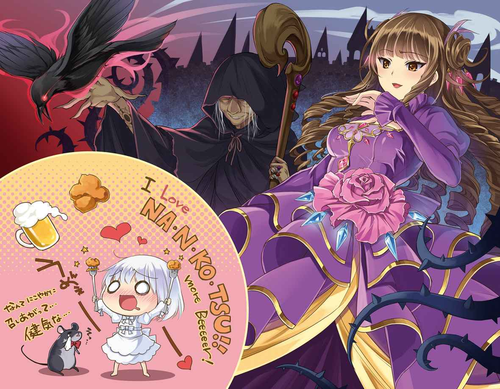
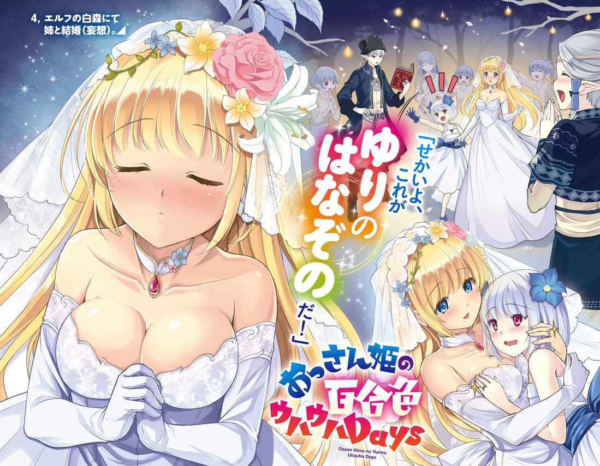
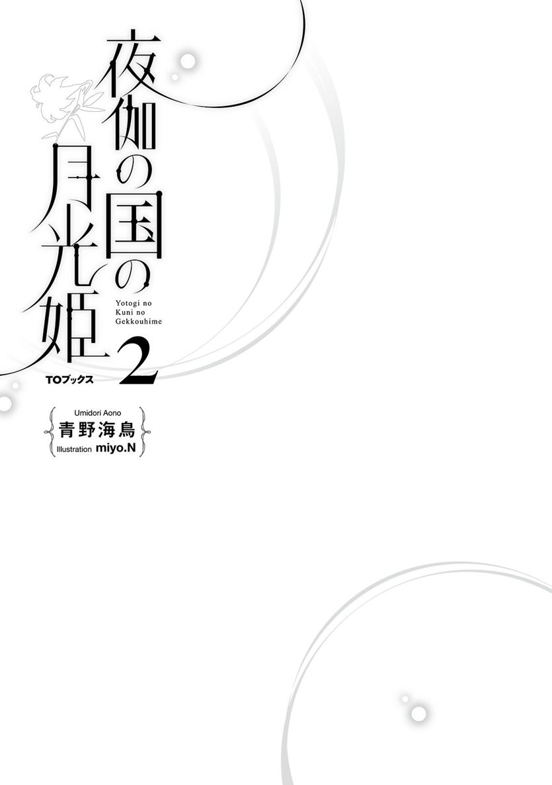
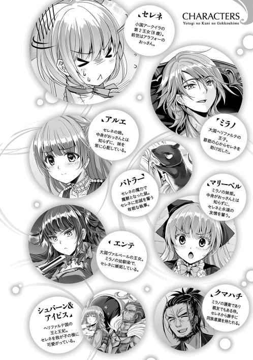
ミラノ王子と初めて会ったのは、私が十歳の時だった。私の一生を変えたその日の事は、今でもはっきりと覚えている。
あの日、ヘリファルテという、ヴァルベール以上に大きな国の王様と会食をするという事で、私も無理やり同席させられたのだ。
「お父様、私、自分より偉い人とお食事なんてしたくないわ」
お父様にそう抗議したけれど、お父様もお母様も一向に聞き入れてくれなかった。いつもなら私の意見を何でも聞いてくれるのに。
「はあ......早く終わって欲しいなぁ」
私はため息をついて、大陸一の王様と、その家族を待つしかなかった。大陸一というフレーズだけで、私はもうその人達にいい印象を持っていなかった。だって、ヴァルベールのお姫様である私、エンテ＝ヴァルベールより偉い人がいるなんて、どう考えても納得出来ない。
私がヴァルベール城の会食場で暇を持て余していると、急に衛兵達の空気が変わるのが、幼い私にもはっきりと感じ取れた。その動作自体が私には気に入らない。いつも他の国の人達が来る時は、もっといい加減な対応だったし、それでいいと思う。
偉い私達は、他人に媚びる真似なんてしてはならないのだ。だって、私はヴァルベールの王女様だ。大陸には沢山の国があって、沢山の人がいる。
その中で、私は大国の王女として生まれたのだ。つまり、私は神様に選ばれた人間だ。そんな私達より偉い人がいるなんて、絶対に認めたくない。
それからしばらくして、噂の大陸一の王様が王妃様と一緒にやってきた。
「何よ、全然きらきらじゃないじゃない」
思わずそう呟いたら、お母様が慌てて私の口を塞いで、その王様達に頭を下げた。普段は人に頭なんか下げないのに。両親のその振る舞いが、私を一層苛立たせる。
部屋に入ってきた王様は、顔が怖くて、全体的にごつごつしてて、ライオンみたいな人だった。王様というより、騎士団の団長みたい。でも、それよりも一番気になったのは、装飾品を殆ど身につけていない事だ。
（お父様やお母様、それに私の方が、よっぽど綺麗じゃない）
もう一度口を塞がれるのが嫌だったので、私は心の中でそう呟いた。私達はドレスに何重にも宝石やブローチを着けていて、重くて歩くのが大変なくらいなのに、この王様も、王妃様も、服自体は上等だし、センスもいいけれど、飾りは殆ど着けていなかった。
（これじゃ、王子様も大した事無さそうね）
大陸一の偉い人というから、どんな綺麗な宝石を見せてくれるのかと思っていたけれど、親がこれじゃ、子供も似たようなものだろう。何でこんな人達が私達の国より力があるのか、さっぱり理解出来ない。
「ミラノ、こちらがヴァルベールのエンテ王女だ。ご挨拶をしなさい」
お父様と王様が何か色々お話をしていたけれど、一段落着いたのか、不意に私に話が振られた。どうやら、噂の王子様とやらが、いよいよ登場するらしい。王様の声を合図に、部屋の外で待っていた少年が、私の前に姿を現す。
「初めまして。ミラノ＝ヘリファルテと申します。以後、お見知りおきを」
「............」
「あの？ 僕、何か粗相をしたのでしょうか？」
「い、いいえ！ と、とんでもありましぇんわ！」
ミラノ王子が不安そうに私に尋ねたので、私は首をぶんぶん振って否定した。見惚れるとか、我を失うというのは、きっと今みたいな事なのだろうと、私はこの時初めて知った。
彼は王様や王妃様と同じく、白っぽい礼服に身を包んでいただけだ。けれど、そんな事などまるで気にならないくらい、彼は輝いて見えた。ううん、余計な装飾や宝石なんて必要ない。彼は、そのままで十分に美しい。
「わわ、私はエンテ＝ヴァルベール、いい以後、お見知りお気を」
あまりにも動揺していたので、私は舌を噛んでしまった。けれど、ミラノ王子はそんな事を気にも留めず、震える私の手を、優しく握り返してくれた。
──これが、彼との最初の出会いだった。
この気持ちが「恋」という感情である事に気付いたのは、それから何年も後の事だったけれど、その気持ちは今も薄れていないどころか、歳を重ねるごとに増していく。
「やっぱり、神様は私達を祝福してくれてるのよ」
大陸一の王子様の横に座るのは、それ相応に高貴な身分でなければならない。その点、私は大陸で二番目に強大な、ヴァルベールの第一王女として生まれたのだ。これは、ミラノ王子と結ばれるために、天が采配したに違いない。
私以上に彼を愛している人はいないし、私以上に彼に相応しい相手はいない。だというのに、身の程知らずの馬鹿は後を絶たない。ミラノ王子に言い寄る小娘も、私に言い寄る不埒な男も、全てが鬱陶しい。
そうした不届きな連中には、天に選ばれた私が、天誅を下さねばならない。彼の未来のため、そして、私の輝かしい未来のために。
ベッドに腰掛けたセレネを見下すような形で、エンテがセレネに話しかける。
「さて、と。お嬢ちゃん、セレネとか言ったわね。あなたのお仲間の従者達から聞いたけど、あなた、ミラノ王子に拾われたんですってね」
「いちおう」
正確には拉致されたのだとセレネは言いたかったが、答えるより早く、エンテはセレネに押し付けるように顔を近づけると、矢継ぎ早に言葉を紡ぐ。
「はっきり言っておくけどね。ミラノ王子があんたを拾ったのは、あんたの魔力が目当てなだけよ。平民で魔力を持ってる人間ってのは貴重だものね。それ以外の価値なんて、あんたにはないわ」
「ちがう」
「違わないわよ。あんた、まさか自分が特別にミラノ王子に寵愛を受けているなんて思ってるんじゃないでしょうね？ だとしたら思い上がりも甚だしいわ」
「ちがう」
自分はあくまで、本命のアルエを釣るためのエサだ、タイを釣るためのエビなのだ。その辺をエンテは分かっていない。だから、セレネ＝アークイラがミラノに好意を持っていると思い、恋敵として敵意を向けるのだろう。
事情が分からない可哀想なエンテ王女。そう思い、セレネが同情するようにエンテを見上げると、エンテはそれが癪に障ったのか、苛立たしげに栗色の髪をかき上げた。このチビ、まるで雪の妖精のような儚げな外見に反し、なかなか強い精神力を持っている。
ミラノに憧れを持つ娘を見つけるたび、エンテは相手の欠点を見つけ、徹底的に罵倒し、お前にミラノ王子は相応しくないと叩き潰してきたのだ。相手の気にしている部分を瞬時に責め立てる才能に関して言えば、エンテの右に出るものはいないだろう。
エンテが仕入れた情報では、セレネは決して身分の高い者ではなく、何か特別な才能に加え、不遇な境遇を哀れんだミラノ王子が、ヘリファルテに引き取ったという事だ。ならば、いくら才能があろうと、お前の身分では王子に相応しくないとストレートに告げてやるのが一番効果的だ。
しかし、セレネはその攻撃を毅然と跳ね返したのだ。今までエンテに罵倒された女性は、泣き出すか、しどろもどろに何とか反論するのが関の山だった。しかし仮に反論されたとしたら、そこは大陸ナンバー２の王女の権力という暴力でねじ伏せる。それがエンテの必勝パターンだった。
身分違いの恋など諦めろと暗に伝えたのに、それでも平然としているセレネに対し、エンテは少したじろいだ。一体こいつは何者なのだ？ ミラノ王子の腕の中という、うら若い乙女達にとって、最高の玉座に腰を下ろしているのに、何とも無さそうに構えているこいつは一体何なのだと。
もしかしたら、頭の回転が恐ろしく鈍いのかもしれない。エンテはそう切り替えると、自分の持っている武器──大国の威光を振り回す事で、セレネという牙城を切り崩す事にした。それにセレネと自分とでは、ミラノと紡いだ年数がまるで違うのだ。
「私、あなたが生まれる前から彼の事を知っているの。まだあの人が少年だった頃の話、あなたは知らないでしょう？ どう、聞きたい？ 聞きたいわよね？」
「いらない」
セレネはむっとした表情で否定した。別に王子の過去など知りたくも無い。苛立った態度を見たエンテは、どこか超然としていたセレネの感情を揺さぶった事に対し、得意げな笑みを浮かべた。
「あなたの出身国はどこかしら？ 言ってごらんなさいな」
「あーくいら」
「アークイラ！ アークイラですって！ 馬と鹿の国じゃない！」
エンテは誰もいない事をいい事に、げらげらと品の無い笑い声を上げた。アークイラの主な名産品は、肥沃な土地で育まれる馬や、鹿をはじめとした動物の毛皮などが多い。それを揶揄し、心無い者のなかには「馬と鹿の国」と呼ぶ者もいるのだ。
（あんなちっぽけな国の、こんな幼児みたいな喋り方しか出来ない愚図な娘。それほど気にする必要は無かったかしら？）
それでもエンテはさらに追い討ちをかけた。アークイラがヴァルベールに比べ、いかにちっぽけな国であり、そこに住むセレネがいかに田舎者であるかを主張した。
さらに、そんなお前と比べ、自分は大陸でナンバー２の大国の姫であり、住む世界が違うのだと、エンテはまるで歌でも歌うかのように、セレネと、セレネの母国を罵倒し続けた。
しかし、エンテはある異変に気付いた。セレネはただじっとエンテの話を聞いているだけで、そこには何の怒りも悲しみも読み取れなかった。いや、それどころか、エンテの話をどこか微笑ましげに聞いているようにすら見えた。
「エンテ、おうじょ」
「な、何よ？」
「ありがと」
「......は？」
セレネは、エンテ王女の性格の悪さに感謝した。王女の性格が面倒であればあるほど、王子に差し出すもったい無さが薄れていく。幼馴染属性持ちで、性格の良い美少女だったら王子に差し出すのが惜しくなるが、これなら何の問題も無く王子に押し付けられるではないか。ありがとうエンテ王女、クソビッチでいてくれて。
そもそもセレネは日本人として暮らした時間のほうが長いので、あんまり愛国心というものが無かったし、アークイラでは引きこもり生活をしていたせいで、どこか別の国の話のようにしか感じなかったのだ。
それに、生粋の王女様に言葉攻めをしてもらえるという事自体、考えてみれば非常に稀有な体験ではないか。生前に同じ体験をするとしたら、二次元で疑似体験をするのが関の山だ。そうした色々な意味を込め、セレネは感謝の言葉を述べた。
だが、エンテからすればセレネの言動は理解不能だ。自分がヴァルベールの事を罵倒されたなら、そいつを床に叩き伏せてやるくらいの事はする。この純白の少女は、人の憎しみを受け流し、穢れ無き物に変えてしまうとでも言うのだろうか。自分よりも遥かに低俗で愚かだと思っていた存在に、エンテは確かに気圧されていた。
「な、何なのあんた？ 頭おかしいんじゃないの!? 私は、あんたの事を馬鹿にしてるのよ!?」
「エンテ、おうじょ、おうじ、すき、わたし、なかま」
「はぁ!?」
セレネは「王女はミラノが好きなんだろ？ なら私は君の協力者だ」と言ったつもりだった。
だが、舌足らず、言葉足らずのセレネの台詞は、エンテにとって「私もミラノ王子が好きなお仲間よ」と言っているようにしか聞こえなかった。こうなるとエンテからしたら完全に意味不明である。困惑するエンテに対し、セレネはさらににっこりと微笑んだ。
「がんばって」
嫉妬の炎に燃えた同性のエンテですら、一瞬見惚れてしまうほどに眩しい微笑みでセレネは笑った。だが、セレネの激励の言葉を聞いた瞬間、エンテはようやくセレネの意図が理解出来た。
──このセレネという小娘は、自分に絶対の自信があるのだ。
生まれた国や身分など関係無い。ミラノは、セレネという存在そのものを愛してくれているのだという絶対的な自信。だからこそ、ミラノに抱きかかえられても赤面すらしないのだ、それが当然なのだから。
実力ある騎士は必要以上に己を大きく見せたりはしない。相手が戦いを仕掛けてくれば真っ向からそれを受け、打ち倒す。それと同じように、清く、美しく、誇り高き魂を持っているのだろう。恋愛という勝負において、自分は逃げも隠れもしない。正々堂々とミラノを賭けて勝負を挑んでこい、それでも私は受けて立とう、この少女はそう言っているのではないか。
それはエンテの人生において、最大の敵が現れた事を意味していた。何の装飾もつけていない生まれたままの美貌を持つ少女が、自分の着飾った姿を馬鹿にしているようで、エンテは全身の血が沸騰するようであった。
このセレネという小娘には、いくら嘲笑しようが通じないだろう。エンテはそう悟り、しばし無言になった。それから少しして、不思議そうに首を傾げるセレネに対し、にやりと笑みを浮かべた。
「セレネ、応援してくれてありがとう。私、あなたの事がとても気に入ったわ。だから後で素敵な料理をごちそうするわ」
「ほんと!?」
セレネはその言葉を聞き、「やった！ 自分の意図が通じたぞ！」と喜んだ。彼女は王子が好きなのだから、自分につらく当たるのは当然だ。けれど、こうして腹を割って本心を語った事で、自分は味方だと理解してもらえたようだ。
しかも、お近づきの印に、特製の料理をご馳走してくれるというのだ。確かにちょっと高慢なところはあるが、エンテ王女は話せば分かるいい子じゃないか、セレネはそう考えた。
「期待していいわよ、あなたにぴったりの料理を用意してあげるわ」
「ありがと！」
エンテはたおやかな笑顔のまま、セレネに一礼をして部屋を出た。
そして部屋を出てドアを閉じた瞬間、エンテは手近にあった花瓶を床に叩きつけた。近くを掃除していた侍女達が、びくりと身体を震わせる。エンテの突然の癇癪はいつもの事だが、今日はひときわ激しいようで、侍女達はあの花瓶が自分のように見えて、ただ遠巻きに怯えていた。
幸か不幸か、全ての憎悪は脳内に残るセレネの笑顔に向けられていたので、エンテはそれ以上は何もしなかった。
「あのチビには言葉では駄目ね......目に見える形で、身分の差を教えてやる必要があるわ」
吐き捨てるようにエンテは呟いた。
あのセレネという小娘、只者ではない。
自らの装飾品が霞むような、幼いながらも神に愛された美貌。歳とかけ離れたような振る舞い。
ミラノがあの小娘にたぶらかされたとしても無理は無い。なんと神聖な小悪魔か。
だが、ヴァルベールの姫君である自分に対し、奴は平民に毛の生えた程度の存在に過ぎない。
この世を支配するのは、何と言っても権力だ。エンテはそう信じている。このエンテと貴様、どれほどの身分の違いがあるか、目に見える形で表さねばならない。
エンテは料理長に「特別メニュー」を作らせるため、城の厨房へと足を向けた。
『姫、ただいま戻りました』
「おつかれ」
『しばらく厨房を観察しておりましたが、特に毒物のような物はありませんでした。ご安心くだされ』
「そう」
バトラーの報告に対し、セレネは特に何とも思わなかった。美味いに越した事はないが、セレネは腹に溜まれば何でもよいという人間だったので、食えれば割と何でもよかった。ただ、エンテは自分に個別のメニューを用意してくれるらしいので、それが楽しみではあった。
そして時は過ぎ、夕食の時間となった。挨拶回りを終えたミラノがセレネの部屋に戻るのとほぼ同時に、料理長らしき壮年の男性が、ミラノとセレネを呼びに来た。
「夕食の準備が整いました。今宵はわが国自慢の料理を、腕によりを掛けて作らせていただきました。それと......」
「それと、何だ？」
料理長が言いづらそうにしていたのをミラノが促すと、料理長は何故か疲れ切った様子で口を開いた。
「エンテ王女より言伝がありまして、ミラノ王子だけではなく、セレネ殿も是非、夕食をご一緒にとお誘いがあるのです」
「エンテ王女が？ 何故、彼女がセレネと食事を共にするのだ。セレネは私の召使いと伝えておいたはずだが」
ミラノは疑問を口にした。プライドの高いエンテは、身分の低い者と決して席を並べようとしない。まして、エンテはセレネに好意を持っているとは思えない。一抹の不安がよぎるが、その時、セレネがミラノのズボンの腰元をぎゅ、と掴んだ。
「だいじょうぶ」
「セレネ、気を遣う必要はないぞ？ 私の方から断りを入れてきてもいい。お前は堅苦しい食事は嫌いだろう？」
「だいじょうぶ、なかよし」
セレネの決意は固いようで、ミラノに真剣な眼差しを送る。上手い事エンテ王女と仲良くなれたのだ。こうして直々に呼んでもらっているのがその証拠だ。ならば、エンテの友人として参加し、もっと好感度を稼いでやろう。セレネは意気揚々と、ミラノを放置して先に進んでいった。ミラノはどこか嫌な気配を感じつつも、セレネと連れ立って食事の場へと向かった。
「あら、ミラノ王子、それにセレネ、お待ちしておりましたわ」
ヘリファルテと対照的な、客室同様に無駄な調度品の置かれた大広間には、驚いた事にエンテ王女しかいなかった。その代わり、見目麗しい執事達が壁際にずらりと並べられていた。人間が並んでいるというより、己の権力を見せびらかすための、精巧な彫像が並んでいるようだ。
「今日はお父様達に無理を言って席を外してもらったのよ。ミラノ王子のお相手は、ヴァルベールを代表して、この私、エンテ＝ヴァルベールがさせていただきますわ」
「そうか、ではお相手願おう」
エンテは気付いていないようだが、ミラノは、まるで決闘を受けて立つような口調で答えた。恐らく、エンテとその両親が強引に進めたのだろう。いわば強制的なお見合いのようなものだ。後は若い二人でごゆっくりと、というわけだ。
しかし、そう考えると不可解な点が生じる。すぐ横に立っているセレネの存在だ。
もし、エンテがミラノと二人きりを望んでいるのなら、何故セレネを連れてこいと言ったのだろう。ミラノの疑問は解消されぬまま、真紅のテーブルクロスのかけられた巨大なテーブルに座るよう、執事の一人に案内される。そして、その対面に、先ほど以上に着飾ったエンテが優雅な動作で座る。
「セレネは、そこに座ってちょうだい」
エンテがセレネに指示した場所は、テーブルの一番端、ミラノとエンテからぽつんと離れた場所だった。これではまるで、セレネが晒し者のようだ。彼女一人だけ拒絶されているようで、ミラノは不快さを隠そうともせずエンテに視線を送る。
「エンテ王女、何故セレネをあんなに離れて座らせるのだ。いくら何でも遠過ぎではないか」
「あら、仕方ないじゃない。だってセレネは従者でしょう？ ね、セレネ、あなたはそこでいいわよね？」
「うん」
セレネは素直に頷いた。ミラノは表には出さなかったが、この王女に唾を吐いてやりたい気持ちだった。これではまるで、セレネだけ、我々とは住む世界が違うといっているようなものではないか。なのに、セレネは平然とそれを受け入れている。本当はセレネとて小国の姫君なのだ。相応に扱ってやりたいが、それを口に出すわけには行かなかった。
一方で、セレネはエンテ王女の心遣いに感謝していた。エンテは自分が陰から恋愛を応援するという意図を汲み、自分をさりげなく遠い場所に置いてくれたに違いない。やはり、この王女、思ったよりもずっと人の心意気を汲める娘だと、セレネはエンテ王女に対する認識を改めた。
「さ、そろそろ食事にしましょ。料理長、食事を運んできてちょうだい。もちろん、セレネにもね」
「......はい」
料理長はどこかぎくしゃくした様子で、他の料理人達に合図をした。すると間もなく、トレーに載せられた料理が運ばれてきた。贅の限りを尽くした、とても二人では食べきれない、色とりどりの郷土料理だ。同じメニューがエンテとミラノの前に並べられるが、遠く離れたセレネの席には、まだ何も用意されていない。
「セレネの物がまだ来ていないようだが？」
「分かっているわ。さ、料理長、『特別メニュー』を出してあげてちょうだいな」
「ですが、エンテ王女、あれは......」
料理長が何か言いたげに口を開いたが、エンテが一睨みすると、観念したように部下の料理人に例の物を出せと言った。そうしてセレネの前にどん、と置かれた料理に、ミラノも、セレネも目を丸くした。
「こ、これは......！」
セレネとミラノは同じ台詞を口にした。セレネの前に突き出された料理は、ミラノとエンテに用意された物とはまるで違った。鳥の軟骨や皮といった、貴族が食べずに捨てる部位を丸ごとフライにした、彼らにとって、料理と呼ぶのもおこがましい代物だった。
「さ、セレネ、どんどん食べてちょうだいね。新鮮な若鶏の骨と皮よ」
エンテはにっこりと、機嫌良さそうに微笑んだ。
「エンテ王女！ これは一体どういう事だ！」
「あら？ セレネにはぴったりだと思ったんだけど駄目かしら？ だって、あの子は身分の低いお子様でしょう？ なら、口に合う物を出してあげた方がいいじゃない」
悪びれもせず、エンテは楽しそうに答えた。
元々、揚げ物というものは貧民の食べ物だ。貴族の食べない粗末な部分を長時間熱して柔らかくし、味付けして何とか食べられるようにしたものだ。それを食べさせるという事は、貴族社会において「お前の身分はその程度の物だ」と暗に告げる、最大の侮辱であった。
口で言って分からないなら、こうして現実として突きつけてやれば良い。どうだセレネ、私とミラノ王子はお前の前で豪華な食事をし、お前は一人で惨めに奴隷の食い物でも食っているがよい。王族の尊厳を最大限に踏み躙る、子供じみた、低俗かつ下劣な手法であった。
「さ、食事にしましょ。たんとお上がりなさい」
エンテは、目の前にこんもりと盛り付けられた揚げ物を食い入るように見つめているセレネに対し、ことさら優しく言い放った。
セレネは、目の前に置かれた鳥の皮や軟骨を揚げた物を、信じられない物を見るように、ためつすがめつ眺めていた。
（無理もない、まさかあんな物を出してくるとは）
ミラノは湧き上がってくる激情を堪えながら、セレネの様子を心配そうに窺っていた。エンテがセレネを嫌っている事は理解していたが、せいぜい食事をしながら、ねちねちと嫌味をつけてくる程度だと思っていたので、まさかこんな事をしてくるとは考えていなかった。
エンテの行為は愚劣極まりないが、貴族の会食というこの場において、相手を貶めるという点では効果的である。セレネは「平民でありながら、エンテ王女の厚意によって食事に呼ばれた」という形になっているので、別にミラノと同じ扱いをする必要は無く、何を出そうがエンテの勝手なのだ。
（さて、どうしたものか......）
ミラノは思考を巡らせる。セレネが王族であると主張出来れば「こんな物を食べさせるわけにはいかない」と突っぱねる事も出来るだろう。だが、そのカードは切る事が出来ない。かといって、セレネ自身が「食べたくない」と言えば、平民のくせに王女の好意を無下にするのかと難癖を付けられるだろう。
そこからセレネに本格的な攻撃を仕掛けてくる恐れもあるし、最悪の場合、従者の不始末の責任を取れという口実で、傍若無人なヴァルベールの方から何か要求を突きつけてくる危険性もある。自分がセレネをフォローしなければならないが、なかなか上手い言い回しが思いつかない。
（やはり、セレネは連れてくるべきでは無かったか）
嫉妬深いエンテだが、まさかここまでセレネに食いつくとは思わなかった。考えの甘さをミラノが悔やんでいると、セレネが離れた位置から口を開く。
「エンテ、おうじょ」
「何よ？ まさか、この私が用意させた、特別メニューを食べられないとでも言うのかしら？」
「たべて、いい？」
「そうよね。やっぱり食べられないわよね......ぇ？」
こんなの食べられないと泣きべそをかくに違いない。そう予想していたエンテは、得意げな表情のまま一瞬固まった。いくらセレネが身分が低いとは言え、王宮に身を置いている者なら、こんな扱いをされたら泣くか激昂するかのどちらかだ。少なくとも、エンテがヘリファルテ以外の国でこんな扱いをされたら、テーブルクロスを引っ張って、全ての料理を床にぶちまけるくらいはする。そのくらい屈辱的な事なのだ。
ところが、セレネは何故か目をきらきらと輝かせ、エンテに食べて良いかと尋ねた。ミラノと自分に用意されている豪華な料理などまるで無視だ。真っ直ぐに自分を見つめる赤い瞳からは、嫌悪の色は全く読み取れない。
「たべて、いい？」
再びセレネが愛らしい口調で懇願する。エンテは予想外の事態に多少面食らったが、即座にセレネの思考を読もうとする。落ち着けエンテ、所詮はったりだ。こうして可愛らしく振る舞う事で、このエンテ王女の同情をもぎ取るつもりなのだろう。チビの癖になかなかの役者ではないか。だが、腹芸に関しては自分のほうが上だ。
「いいわよ。好きなだけ召し上がりなさいな！」
エンテは優雅な笑みを浮かべ、容赦なく言葉の処刑斧を振り下ろした。お前は食べていいかと私に聞いたのだ。「冗談だよ」とでも言って欲しかったのだろうが、所詮子供の浅知恵だ。私は食べてよいと言ったぞ。さあ、その脂っこく品の無い食い物を無様に吐き戻すが良い。
「いただき、ます！」
エンテの言葉が終わるか否や、セレネは猛然とした勢いで、鳥の皮を口の中に放り込んだ。何のためらいも無く食べたセレネを見て、ミラノとエンテは言葉を失った。いや、ミラノだけではない、壁にずらりと並んだ執事達や、後ろに控えていた料理長までもだ。
セレネは小さな口をもぐもぐと動かし、しばらく味わうように咀嚼していたが、そのまま飲み込むと、お日様のような眩い笑みでエンテに笑いかけた。
「うめぇー！」
セレネはそう言うと、グーでフォークを握りなおし、鳥の皮揚げと軟骨をまとめて串刺しにし、口の中に押し込んだ。香ばしい香りと肉汁がじゅわりと広がる。料理長がせめてもの償いとばかりに丹念に調理した鳥の皮と軟骨は、ほどよい塩味が利いており、なおかつカリカリに揚げられた絶品であった。
アークイラにいた時は、スープやパンなどの食事がメインだったし、ヘリファルテでは随分と豪勢な食事になったが、どちらも元おっさんのセレネにとっては、上品過ぎていささか物足りない味であった。
まさか異世界で軟骨と鳥皮フライという、最高の料理が食べられるとは思わなかった。どこかの空気の読めない王子と違い、エンテ王女は自分の望む物の本質を見抜き、最高のご馳走を用意してくれたのだ。
セレネはエンテに深く感謝した。ああ、こんな素晴らしい子だったなんて。カマキリなんて言ってごめんなさい。でも王子はしっかり食い殺してねと思いつつ、セレネは軟骨の唐揚げをどんどん口に放り込んでいく。
「セ、セレネ！ 大丈夫なのか？」
モリモリと唐揚げを食べていくセレネに対し、ミラノが不安そうに声を掛けた。
「うん、うまい」
せっかくご馳走を堪能しているのに空気の読めない奴だ、セレネは面倒くさそうにミラノに相槌を打つ。そこで、セレネは大事な事に気付いた。やはりここまでくると、あれが欲しくなってくる。申し訳無さそうに青い顔で横に立っていた料理長の裾を、セレネはくいくいと引っ張った。
「な、何かご不満な点がおありでしょうか」
料理長はびくりと震えた。ご不満も何も、不満しかないに決まっているではないか。こんな物、本来は王族の座るテーブルに出してはいけない物だ。けれど、エンテ王女に逆らう事は出来なかった。
このセレネという少女、大国ヘリファルテの使者の一人らしい。ならば、彼女の機嫌を損ねれば、間接的にミラノ王子を怒らせる事になる。そうなれば自分の立場が危うくなるかもしれない。だが、それでもエンテ王女は助けてくれないだろう。そんな考えが料理長の頭によぎる。
「びーる、ない？」
だが、セレネの口から出た言葉は、料理長を糾弾する言葉ではなかった。何やら「びいる」なる代物を欲しているようだが、熟練の料理長でも、それが何なのか分からない。
「申し訳ありません。びいる、とは何でございましょうか？」
「おさけ」
「セレネ、そこまで気を遣う必要は無いぞ！」
セレネが酒を飲ませろと言った瞬間、ミラノが台詞を被せた。いい加減我慢の限界だった。セレネは幼い身でありながら聡明な子だ。あのような低俗な食事でも、喜々として食べなければヘリファルテに迷惑をかけると理解しているのだろう。
その上、貴族のたしなみとして酒まで付き合おうというのだ。セレネは何か言いたげな表情をしていたが、ミラノは料理長を手で制して下がらせると、エンテに向き直る。
「エンテ王女、私の従者セレネは、あなたの『特別メニュー』に大層満足した様子です。お心遣い感謝いたします。では、我々も食事としましょう」
「え、ええ......そ、そうですわね、おほほ......」
エンテは可能であれば、両手両足を振り回して暴れ出したい気分だった。セレネが文句を言うか、愚痴るかしたら、そこを起点にあの小娘の躾の足りなさを責め、あわよくば、ヘリファルテでの従者の教育を直に見てみたいなどと無理やり難癖をつけ、ミラノの傍についていく踏み台とするはずだった。
しかし、表面上とは言え、あそこまで嬉しそうに食べられてしまってはエンテが付け込む隙が無い。このまま無難に食事を続けるしか、今のエンテに取れる行動は無い。
（本当に何なのよ、コイツ！）
エンテはテーブルの下で拳を握る。ありったけの理性で握り拳をテーブルの上に叩きつける事を回避し、震える拳を何とか解き、エンテとミラノも食事を開始する。ミラノは殆ど口もきかず、黙々と食事をしたし、エンテもミラノに媚を売る気力が尽きていたので、実に静かな夕餉となった。
「びーる......」
しょんぼりとうなだれるセレネの呟きは、誰にも聞かれる事はなかった。
「とてもつらい」
『姫！ 大丈夫でございますか!?』
月明かりの差し込むベッドの上で、セレネは苦悶していた。数年ぶりに食べた鳥皮と軟骨コンボに理性が吹き飛んでしまったせいで、幼女の身体である事を綺麗さっぱり忘れ、おっさんリミッターを解除した結果、セレネの腹は不自然なまでにぱんぱんになっていた。
セレネは気力を振り絞り、吐き気を必死で堪えていた。あんな美味いものを吐き出しては罰があたる。全ての養分を自分の血肉にするべきだ。今、セレネは、本来もっと有意義な事に使えるはずの気力と体力を、全て鳥皮と軟骨の消化に割いていた。まさにエネルギーの無駄遣いである。
そんなセレネを見守っているのは、傍にいるバトラーだけだ。先ほどまでミラノが医者を呼ぶかと心配そうに付き添っていたのだが、うっとうしいので心配ないと繰り返して追い払った。
『申し訳ございません。毒物ばかり調査していたせいで、このような事態を想定しておりませんでした。ああ、私は無能だ！』
バトラーは前足で頭をがりがりと掻きながら、セレネの枕元で心配そうに佇んでいた。主は姫だ、あのような脂まみれの下品な料理を口にしてよい身体ではない。現に、主は実に苦しそうにしているではないか。実際には食い過ぎただけなのだが。
もしもセレネがラクダであれば、食い過ぎた養分をコブに溜め込んでおく事も出来たかもしれないが、あいにくセレネの二つのコブは未だ大平原であり、ついでに言うとそんな便利な機能も無かった。
『それにしても、あのエンテとかいう小娘め！ 我が主に何と不遜な事を！ こうなったら彼奴の装飾品を全て破壊し......！』
「やめて」
バトラーが復讐の炎に身を焦がし飛び出そうとした瞬間、セレネは尻尾を引っ張って食い止めた。
『何故止めるのですか!? このような屈辱的な仕打ちを受けているのに、それでも許すというのですか！』
「エンテ、なかよし」
『姫......』
あの高慢な姫のせいで体調を崩し、ぐったりと横たわっているのにもかかわらず、セレネはエンテを責めるなと言う。何故だ。バトラーは自問自答したが、すぐに答えは出た。
セレネは、ヴァルベールと事を荒げたくないのだ。今のセレネはあくまでミラノ王子の従者の一人として付いてきている。バトラーは証拠を残すような下手はしないが、エンテ王女の身の回りに何かあれば、来訪中のヘリファルテの人間に嫌疑が掛かる可能性が高い。
仮にそうなった場合でも、ミラノやセレネに被害が及ぶ事は無いだろう。だが場合によっては、従者の中の誰かを処罰しろと要求される危険性がある。
セレネ姫は心優しい方だ。下劣な食事をにこやかに平らげたのも、食事会という場の雰囲気を壊さない事と、あの料理長を思っての事だろう。もしもセレネがあの場で料理長について糾弾していたら、それこそ、彼が明日からセレネの食べていた料理を食べ続ける事になるかもしれない。
バトラーはそこまで考えると、自らの浅はかさを恥じた。自分はセレネ姫を第一と考えているだけだが、セレネはたとえ他国の民であっても、一人ひとりを案じる事が出来るのだ。その懐の深さは一体どれほどなのか、バトラーは改めて主の偉大さを再確認した。
『分かりました。姫がそうお考えなのであれば、このバトラー、今回は引き下がりましょう。しかし、これだけは覚えておいていただきたいのですが、今後、姫の身に災厄が降りかかる事があれば、命をかけて姫をお守りいたします。それが偉大なる主に仕える執事というものですからな』
「ありがと」
何だかよく分からないが褒められたので、セレネはバトラーの小さな頭を人差し指で撫でてやった。バトラーは満足げにしばらく身を任せていたが、しばらくすると恭しくお辞儀をし、彼の指定席であるセレネの寝床の下に潜り込んだ。昼の間の調査のために走り回り疲れていたため、彼はすぐに寝息を立てた。
それから数時間後、セレネの腹が大分こなれてきた頃には、夜番を命じられた者以外、全てが寝静まる深夜となっていた。セレネも今日の昼は起きていたので、いい加減寝るかと思っていたのだが、その時、部屋のドアを軽くノックする音が響いた。
「だあれ？」
「私よ、エンテ」
エンテはノックとほぼ同時に、足音を忍ばせるようにセレネの部屋に滑り込んだ。彼女は暗い紫のガウンを羽織っており、ランタンなどの光源は一切持っていなかった。
「セレネ。体調は大丈夫かしら？」
「だいじょうぶ」
「ごめんなさいね。まさかあれを食べるなんて思わなかったから。やっぱり貧乏舌なのね」
「うん」
エンテはさりげなく嫌味を言ったつもりだったが、事実その通りだったので、セレネはにっこり笑って流した。やはりこの小娘、並みの胆力ではない。エンテは眉間に皺を寄せたが、殆ど真っ暗な部屋の中では、こちらの表情は読み取れないだろう。これから自分が行う事に対し、少しでも疑惑を持たれてはならないのだから。
「ねえ、私、あなたに申し訳ない事をしたと思っているのよ。さっきはちょっとつらく当たっちゃったけど、仲直りに私とおまじないをしてくれないかしら？」
「おまじ、ない？」
「ほら、女の子同士で髪の毛を交換して、アクセサリを作る奴よ。ヘリファルテにもあるでしょう？」
「あー」
そういえば、マリーとそんなおまじないをした事がある。ちなみにマリーの髪で出来た指輪は、普段はセレネの部屋の小物入れに入れてある。主な使い道は、金髪ロリと楽しい時間を過ごす夢が見られるようにと、願望を込めて寝る時に枕の下に敷く事である。
「私の方はもう用意してあるわ」
エンテは、小さな翡翠に穴を開け、栗色の髪を束ね、ひも状にして通したペンダントを持っていた。そのアクセサリをセレネの手にねじ込むように渡すと、セレネは興味深げにそれを覗き込んだ。
「くれるの？」
「ええ、これで私達はお友達よ。私はそれをあげるから、あなたの髪ももらえないかしら？」
「わたし、きれい、つくれない」
「いいのよ。髪だけもらえれば、私の方でアクセサリにするから」
「じゃあ、きって」
そう言うと、セレネは何のためらいも無く、エンテに髪を切れと無防備な背中を晒したので、エンテは少し驚いた。先ほど自分が食事で嫌がらせをした事は分かっているだろうに、そんな事などまるで気にしていないという態度だ。
この少女を見ていると、まるで自分が矮小な存在に思えて、猛烈な苛立ちを感じる。髪を切るためのナイフを突き立ててやりたくなる衝動を堪え、エンテはセレネの髪を一房切り取った。
「私達は別の国の人間だから、もしかしたら、もうあまり会えなくなってしまうかもしれないわ。でも、命ある限り、お互いお友達でいましょうね」
「うん！」
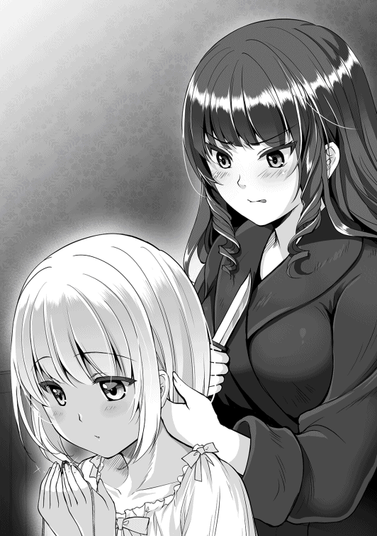
エンテはそう言うと、セレネから切り取った髪を素早く懐に納め、そそくさと部屋を出て行った。誰も見ていない事を確認しながら、小走りで自室へ戻ったエンテは、懐からセレネの髪を取り出し、一番目立たない引き出しの奥へと押し込めた。
「あのチビ、今のうちに始末しておかないと危険ね。触媒が思ったより簡単に手に入って助かったわ」
エンテが持っていったアクセサリーに使った髪は、似た色の髪を持つメイドから無理やり刈り取ったものだ。あんな憎たらしい小娘相手に、枝毛一本やるつもりは無い。翡翠も一番低級の物を選んだので、別に痛くもかゆくも無い。
「まさか、小娘相手に呪詛吐きを使う事になるとはね......」
自分以外は誰もいない、月明かりすら届かない真っ暗な自室で、エンテはどこか恍惚とした魔女のように邪悪な笑みを浮かべた。
ミラノとセレネ達がヴァルベールに滞在してから数日しか経っていないが、早くも帰国の前日となった。遊学という名目で来訪しているのだから、本来ならもう少し滞在すべきなのだが、ヴァルベールはごく近い隣国で、今回は顔見せが主な目的であり、何よりエンテを苦手としているミラノにとって、長期滞在はあまり望ましい事ではなかったからだ。
ただ、今回の訪問を振り返ってみれば、いつもに比べ、ミラノとしては非常に楽であった。というのも、初日にあれだけセレネを罵倒していたエンテが急に温和になり、ミラノがヴァルベールに滞在している間も、殆どセレネにつきっきりで過ごしていたからだ。
陰で良からぬ事をしているのではとミラノは不安で仕方がなかったが、別段セレネに対し悪さを働く事も無く、理由をエンテに聞いたところ「初めは田舎者だと思って馬鹿にしていたが、話してみればみるほど、その心の美しさに惹かれてしまった」という事だった。
「セレネには、人を魅了する何かがあるのかもしれないな......」
あのエンテが他人、まして身分の低い者に対し柔和な態度を取るなど、天地がひっくり返っても無いと思っていたミラノは、セレネは本当に、神に何か使命を託されて生まれてきたのではと思ってしまうほどだった。
普段であれば頻繁に絡んでくるエンテの対処に追われ、他の貴族達への挨拶回りに支障をきたすのだが、セレネが囮になってくれたお陰で、非常にスムーズに進める事が出来た。そうして万事順調に物事が進み、ミラノ達は、ヴァルベールでの最後の夜を過ごしていた。
「今日が最後の晩餐となりますが、ミラノ王子、それにセレネ、どうぞ堪能なさいませ」
エンテは初日以降もミラノとセレネだけの夕餉を開いていたが、初日から最も違う点は、エンテとミラノのすぐ傍にセレネが呼ばれている点である。料理も若鶏の骨と皮などという品の無いものではなく、きちんと同じ物が用意されていた。
「どうした？」
「なんこつ、なんこつ......」
セレネは初日以降、夕食の時間になると呪文のように「ナンコツナンコツ」と繰り返すのだ。どうも初日の事が相当トラウマになっているようで、エンテも申し訳無さそうにしていた。
「ごめんなさいね。あの時はちょっと悪戯が過ぎたみたい。でも許してちょうだいね。私達、友達でしょう？」
「うん」
エンテが「友達でしょう」の部分を若干強調して言うと、セレネは素直に頷いた。しかし、相変わらずどこか不満そうなセレネを見かね、ミラノは助け舟を出す事にした。
「エンテ王女、この子は料理長の事を心配している。彼の身がどうなったのか気になって仕方ないのだろう。教えてくれないか？ セレネは彼を糾弾するつもりはないようだし、そのように取り計らってもらいたいのだが」
「ああ、それなら問題ないわ。今日の料理も彼が作った物よ。だから心配しないでいいわよ、セレネ」
「もういい」
セレネはため息を一つ吐き、黙々と料理を食べ始める。それを合図に、エンテとミラノも食事を開始する。
どことなく投げやりな感じではあるが、安堵のため息を吐いていたあたり、やはりセレネは料理長の事を思っていたのだろう。ミラノは、セレネの他人を思いやる気持ちに胸が一杯になった。
セレネはというと、何で軟骨が初日しか出ないんだコノヤロウと、やるせない気持ちで一杯であった。
軟骨揚げが食えないのは悲しいが、今回の結果だけ考えれば、十分に成果を上げる事が出来たとセレネは判断していた。最初は飢えたカマキリみたいな女相手にどう仲良くなろうか悩んでいたが、打ち解けてみれば心優しい王女で、初日以降は過剰なまでに優しくしてくれた。もう一ヶ月くらい滞在してもいいくらいだ。
そうして最後の晩餐も滞りなく終了し、翌朝、ミラノとセレネは多数の城の者達に見送られ帰路へついた。最後に、エンテはセレネと固い握手を交わし、何があっても自分達は友達だと一言添え、セレネの姿が見えなくなるまで見送ってくれた。
そのまま馬車に揺られていたセレネとミラノ達であったが、城下町を通り、雑多な露店が並ぶ表通りの一角に辿り着くと、ふと何かを思いついたように、ミラノは御者に声を掛けて馬車を停めさせた。
「セレネ、土産物を買っていってはどうだ？」
「おみやげ？」
「あまり観光をしている暇が無かったし、セレネにはエンテの相手をしてもらっていたからな。私からの礼だ」
「おかね、ない」
「心配するな。そのくらいは私が出してやる。これで好きな物を買うといい」
そう言って、ミラノはセレネに大鷲の刻印がされた一枚の金貨と、数枚の硬貨を手渡した。ヘリファルテで使われている硬貨はどれも貨幣価値が高く、特に大鷲の金貨は、それ一枚で貴婦人の服が数着買えてしまうほどの価値がある。
「今はあまり持ち合わせが無いが、それでもここの土産物くらいは買えるだろう」
「いいの？」
「ああ、お菓子でもおもちゃでも、好きな物を買うといい」
「やったあ！」
セレネは目を輝かせながらミラノを見上げる。そのあどけない笑顔に、ミラノも頬を緩めた。お金の入った袋を懐に入れると、セレネはスキップしながら近くにある、焼き菓子や子供向けの商品が並んでいる露店の商品を吟味し始める──フリをした。
遠巻きに見守っているミラノが目を離した一瞬の隙を突いて、セレネは素早く、近くの木箱の陰に身を潜めた。そしてそのまま木箱の陰を伝って大通りから逃げるように、薄暗い路地裏へと身を翻す。
『姫、一体どうされたのです？ どうやらこの国、表通り以外はあまり治安が良くないようですぞ。深入りはしない方が......』
「きけん、バトラー、まもって」
『無論、このバトラー、そこらの悪党など一捻りでございますが、しかし何故わざわざ......』
「ひみつ」
少女一人で路地裏を歩く事が危険極まりない事は、さすがのセレネでも理解はしている。しかし、自分には懐刀のバトラーが付いてくれているのだ。彼さえいれば、そこらのごろつきなど目ではない。
降って湧いたこのチャンスのうちに、セレネはどうしても路地裏で仕入れたい物があった。それは武器である。今は健康に悪い食べ物を王子に大量に食わせてはいるが、いかんせん遅効性だ。もう少しパンチの効いた武器が欲しい。出来れば暗殺に使える毒の塗ってあるナイフや、危険な毒物が欲しい。
このヴァルベールという国は、旅人が通る表面的な部分は、治安も店も過剰と言えるほどに厳しく管理されているようだが、その反面、道を一本裏に入っただけで、いきなり生活の質が落ちる。それは到着した段階で気付いていた。
こういう場所にこそ、セレネが望む物があるのだ。飴玉や水鉄砲より、丸薬や鉄砲が必要なのだ。そんな物が本当に手に入るか分からないが、少なくとも情報を得る事は出来るかもしれない。
そうしてしばらく、じめじめした薄暗い道を進んでいくと、怪しげな建物が目に付いた。薄暗い路地裏の中でも、ひときわ陰鬱な隠れ家のようなその店は、漏れ出す香りからして、どうやら薬屋のようだった。
「ビンゴ！」
セレネは指を鳴らし、その建物の前まで近づいていく。日当たりの悪い石造りの建物はかなり老朽化が進んでいるようで、黒くカビた壁面はところどころ削れており、店の入り口には、古ぼけた木製の看板がぶら下げてあるものの、名前らしきものは塗料が剥げ、殆ど判読不能になっていた。
『姫？ 一体このような店に何の御用なのですか？ 怪しげな匂いがプンプンしますぞ』
「いいから」
強引にバトラーを黙らせ、セレネはその錆びたドアノブを捻る。鍵は掛かっておらず、すんなりとセレネは店内に足を踏み入れる事が出来た。
店内は窓一つ無く締め切られており、まるで光を拒絶しているようだった。湿気っぽいのに、同時にひどく埃っぽくもある。明かりはランプ一つのみで非常に薄暗く、狭苦しい店の両脇には、血のような色をした赤黒い液体や、よく分からない黒焼きのような物が所狭しと並べられており、セレネはその胡散臭さに、うむ、と満足げに頷いた。
「ガァー！」
「ひえぇっ!?」
セレネが一歩踏み込むや否や、威嚇するようなだみ声が聞こえてきたので、セレネは飛び上がって驚いた。
「......カラス？」
セレネが恐る恐る声の方向に目を凝らすと、奥に古ぼけた木製の机があり、その上には、暗闇に溶け込むような一羽の大柄なカラスがいた。先ほどの声の主は、これで間違いないらしい。
「コクマル、お客さんかい？」
カラスの鳴き声が呼び鈴代わりになっているのか、机のさらに奥にある部屋から、しわがれた声が聞こえてきた。声のトーンからすると、どうやら老婆のようだ。
「おやまあ、随分と可愛らしいお客さんだこと」
部屋の奥から現れたのは、予想通りしわくちゃの老婆であった。顔が地面に着くんじゃないかというくらい背中は丸まっていて、大きな樫の杖を支えにしていた。ゆったりとした黒いローブに身を包んでいて、まるで魔女のような出で立ちだが、顔立ちは普通の人の良いおばあちゃんという感じだった。
「お嬢ちゃん、ここは見ての通り薬屋だよ？ 表通りの方に子供向けの商品が売ってるが、もしかして迷子かえ？」
「ここで、いい」
老婆の疑問をセレネは首を振って否定した。老婆は不思議そうに細い目をぱちぱちと瞬かせたが、枯れ枝のような指を顎に当て、何かを考えるように少し沈黙した後、口を開いた。
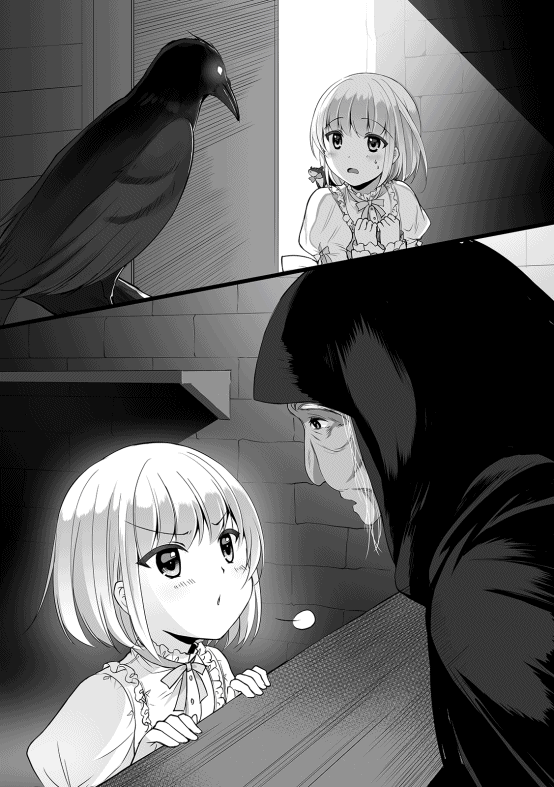
「つまり、薬が必要という事かね？」
「うん」
「何故だい？ それに、うちのは特製だから値段が張るよ？ 子供のお小遣いじゃとても買えんわい」
「カネは、ある」
そう言うと、セレネは袋の紐を解き、机の上に金をぶちまけた。ぶちまけた理由は特に無い。単にこういうアウトローっぽい店で、有り金全てを出す行為をしたかったからである。どうせ王子の金なのだ。
「へぇ......こりゃヘリファルテの金貨じゃないか！ お嬢ちゃん。これだけあれば洋服でもお菓子でも好きなだけ買えるじゃないか。何だって、こんなところで薬なんか買う気になったんだい？」
「わたし、だいじなひと、まもる、ひつよう」
そう、アルエを守るために毒薬は絶対に必要なのだ。何としても、この怪しげなババアからやばい薬を買わねばならない。セレネは使命感に燃えていた。
「しかし、薬といっても色々あるからねぇ。どんな物がご入用かね？」
「やばいの」
「やばい？ つまり効果が強力な奴がいいんだね？ しかし、子供に売るにはねぇ......」
「おねがい、します！」
セレネは必死に食い下がる。どうやらこの少女は、余程その「大事な人」とやらに何かしてやりたいらしい。その熱意に押されたのか、老婆はにこりと愛想よく笑った。
「じゃあ、とびきり効果の強い薬をあげようじゃないか」
「ほんと!?」
老婆は笑いながら、棚の奥の方にある白い粉末を取り出し、小さな布袋へと詰めてセレネへと渡した。
「なにグスリ？」
「とても強力な体力増強剤さ。用量を守れば劇的な効果があるが、使い過ぎると逆に体調を崩すから気をつけるんだよ」
「キケン？」
「そりゃどんな薬でも、使い方を間違えれば大変な事になるさ」
「わかった」
無論セレネに用法用量を守るつもりは微塵も無い。たとえ半分が優しさで出来た風邪薬があったとしても、飲み過ぎれば体調を崩す。しかもこれは体力増強剤である。王子の食事に盛り込む大義名分にはもってこいだ。下手に毒薬を買って足が付いても困る。これは弁当に混ぜ込む事にしよう、セレネはそう考え、ほくそ笑んだ。
「ばーちゃ、ありがと！」
「いやいや、その大事な人とやらの役に立つといいねぇ」
「うん！」
セレネは救世主であるババアに深々とお辞儀をすると、意気揚々と薄暗い薬屋を出て行った。店を出たところで、不意に胸元のバトラーがセレネに話しかける。
『なるほど、姫はこれを探していたのですな。表通りで売っているのは土産物ばかりでしたからな』
「そんなとこ」
さて、後は懐にこいつを忍び込ませればミッション完了だ。それなりに金が掛かったので、残りのお金で可愛い女の子っぽい土産を買って誤魔化す必要がある。急いで表通りに戻らねばならない。
「セレネっ！」
「げぇっ!?」
しかし、セレネの思惑は一瞬で破綻した。路地の向こう側にミラノが立っていたからだ。相当慌てているのだろうか、髪を振り乱しながらセレネの元へと駆け寄ってくる。
「一体どこへ行っていたんだ！ 誰かに連れ去られたのかと心配したぞ！」
「それは、その......」
懐にブツをしまう余裕が無かったセレネは、慌てて後ろ手に袋を隠す。しかしそれを見逃すミラノではない。
「セレネ、今、何を隠した？」
「なんでもない」
「ここは非合法な物も扱っている危険な場所だ。さあ、それを見せるんだ」
有無を言わさぬ勢いで、ミラノはセレネの持っていた小さな袋を取り上げた。セレネもミラノにしがみついて必死に取り返そうとするが、腰元にしがみ付くのが精一杯でどうにもならない。そして袋の紐を解き、中身の白い粉を見たミラノは不思議そうな表情をした。
「この粉末は何だ？」
「こむぎこ」
「嘘を吐くな。これは何かの薬だな？」
「かぜぐすり」
セレネはしらばっくれた。違う、これはただのビタミン剤じゃ。小麦粉か何かだ。
当然、そんな間抜けな言い訳で騙されるミラノではない。
「これが何の薬かは分からないが、普通の物ではないな？ 何故こんな物を買おうと思ったのだ、教えてくれ」
「それは......」
「それは？」
「その、おうじの、ため」
「僕のため？」
セレネはしどろもどろにそう答えた。生憎セレネの脳みそでは、王子を誤魔化せるほど上手な嘘を瞬時に思いつけなかった。せめて王子のためにという大義名分で、少しでも糾弾されるのを避けるしかない。ミラノはため息を吐いて、薬の入った小袋を自分の腰元に縛り付けた。
「気持ちはありがたいが、ここは危険な物を売っている場所なのだ。この薬が本当に人体に役立つ物か、ヘリファルテで調べさせてもらう。さあ、帰るぞ」
「ううぅ......」
セレネは何故か拳を握り、両腕を並べて差し出したが、ミラノは特に気にせず、片方の手だけを引いて裏通りを出ていった。セレネは警察にしょっぴかれた密売人の如く、うなだれながら従うしかなかった。
（僕のため、か......健気な事だ）
せっかく手に入れたヤクを奪われ、絶望のどん底にいるセレネに対し、前を歩くミラノは怒っているようで、実は上機嫌だった。この年頃の娘で好きな物を買えと言われれば、普通は自分のために使ってしまう。少なくともマリーなら九割は自分のために使い、残りの一割を兄や父母のために使う程度だろう。
しかし、セレネは他の全てを差し置いて、自分を第一に考えてくれていた。普段激務に耐えている自分を思い、薬を探して買おうとしたのだろうが、生憎表通りには土産物ばかりだった。
そうして探し求めているうち、危険だと知らず、このような場所に紛れ込んでしまったのだろう。決して褒められた行動ではないが、その動機は他人を思う、極めて純粋な気持ちから来たものだ。
危険な行為をした事自体は叱らなければならないが、それ以外はむしろ褒めるべきだろう。自国へ帰ったら、より一層セレネの待遇を良くしてやらねばならない、ミラノはそう考えていた。
そんな仲睦まじく歩いていく二人の後ろ姿を、隠れて覗いている一つの影があった。先ほどの老婆だ。店の隙間から少しだけドアを開け、獲物を狙う蛇のような目で凝視していた。
「こりゃ驚いた。あれはヘリファルテの王子様じゃないか。となると......やっぱりあの子に間違いないようだねぇ」
老婆は、先ほどまで浮かべていた柔和な仮面を脱ぎ捨て、厭らしい下卑た笑みを浮かべた。そして胸元から純白の髪の一房を取り出し、先ほど網膜に焼き付けた少女の物と間違いないか再確認する。
『ババア、アイツカ？』
嗤う老婆に対し、たどたどしい口調で老婆に話しかけたのは、人ではない、先ほど部屋の中にいた、コクマルと呼ばれた大きなカラスだった。カラスは部屋から飛び出すと、老婆の肩に止まった。
「ヒッヒ、そうさね。今夜あたりから始めようと思ってたが、実物を見られるとは思わなんだ。仕事を始めようかねぇ。王女様がお待ちかねだ」
『ダリィナァ......』
カラスは気だるげにそう答えたが、老婆はドアを閉じ、暗闇の中、爛々と目を輝かせた。
今宵は新月。月明かりの無い闇夜を照らすため、ヴァルベール城の門前には篝火が炊かれている。その明かりを頼りに警備任務に付いていた門番は、大きなあくびを一つした。
数日前、大国ヘリファルテの聖王子ご一行を送り出すという大きなイベントが終わった事もあり、どうしても気が緩んでしまう。しばらくは来訪する者も無いし、ヴァルベール城に正面から攻め入ってくる馬鹿などいないのだから、これは仕方の無い事だった。
しかしその時、暗闇の中、遠くから近づいてくる一つの影に門番は気が付いた。石畳の上をこつこつと音を立てながら、闇の中を蠢くその影に、門番がいささか警戒の意志を強め、声を掛ける。
「何者だ！ 謁見の時間はとうに過ぎているぞ。用があるのなら、また明日出直してくるがいい」
「おや、老体に鞭を打ってきたのに、酷い扱いだねぇ」
「こ、これは薬師殿！ 失礼致しました！」
しわがれた声を聞いて、門番は慌てて謝罪した。彼が声を荒げて止めた老婆は、見た目こそ魔女のように怪しいが、王女お抱えの薬屋であった。
細かい事はよく知らないが、何でも異国よりやってきた一族の末裔なのだそうだ。この老婆の作る薬は、見た目が悪く高額であるものの、効果はてきめんであり、ヴァルベールの貴族達から絶大な信頼を得ていた。
「何故このような時間に参られたのですか？ 薬であれば、我々の方から引き取りにいかせるはずですが......」
「なぁに、姫様から『頭が痛い』と数日前から依頼されていた薬がようやく出来上がったんで、急いだ方がいいと思って、こちらから出向いてきたのさ」
そう言って老婆は鼻息を漏らすようにふ、ふ、ふと笑い、番兵の横を通り過ぎた。老婆はヴァルベールお抱えの医師でもあるので、勝手知ったる我が家の如く城の中へと入っていく。番兵はそれを特に咎めず、カラスを連れた怪しげな老婆の通行を許可した。
「やれやれ、また姫の頭痛か。頭が痛いのはこっちだってのに......」
老婆の背中が完全に消えてから、番兵は一人文句を言った。エンテ王女が頭痛を起こすのは、決まって他国の使節団などが送られてきた時だ。あの傍若無人な王女なりに、他国には礼儀を気にしているせいなのか、心労が原因で頭痛が起こるのではと臣下の皆は考えていた。
それ以上に心労が溜まっている部下の事などお構いなしの王女に舌打ちをしつつ、番兵は元の位置へと戻っていった。
「これはこれはエンテ様、お加減はいかがですかな？」
「見れば分かるでしょ。最悪だわ」
エンテの部屋に『診察』という名目で通された老婆は、不機嫌そうに椅子に座るエンテの顔を見て、からかうような笑みを浮かべた。
『ピカピカ、キンピカ、トッテイイカ？』
「落ち着きなコクマル。これから姫の診察をしなきゃならないからねぇ」
コクマルと呼ばれたカラスが、光り物に身を包んだエンテを見て興奮していたのを老婆が窘める。エンテはもう何度もこうして老婆を迎え入れていたが、汚らしい老婆とカラスを清らかな自室に招き入れるのはやはり慣れない。
「呪詛吐き。そのカアカアうるさいカラス、連れてくるのやめてくれない？」
「いえいえ、これは仕事の大事なパートナーですゆえ、話を聞かせた方が何かと都合がよいのですよ」
老婆──呪詛吐きと呼ばれた彼女は、エンテの提案を飄々と跳ね除けた。彼女の名は呪詛吐き。本当の名は誰も知らない。分かっている事は、遥か昔に異国よりやってきた一族の末裔という事と、彼女の魔力が「人を呪い、死に至らしめる」という性質を持っている事だけだ。
「昔は良い時代でしたなぁ。疫病、飢饉、戦争......世の中は怨嗟の感情で満ち溢れておりました。しかし、平穏の世となった今、薬師などというくだらない副業をせねばならんのです。私に仕事を与えてくれる王女様には、真に感謝しておりますぞ」
大して感謝もしていないような口調で呪詛吐きが言ったが、エンテはそれを無視し、興味を引かれた部分を問う。
「おべっかはどうでもいいの。ところで、そのコクマル......とか言ったわね。ケダモノなんかより人間をパートナーにした方がいいんじゃない？」
「これはただの獣ではございませぬ。『魔獣』と呼ばれる、魔力を持った獣にございます。知力も体力も並の獣とはケタ違いな上に、ある程度人語も理解する事が出来るのでございます」
「私には、ただガアガア鳴いてるようにしか聞こえないわ」
「魔獣は契約を結んだ主とのみ会話出来ますのでな。他の人間では理解出来ませぬ」
「何よ、たった一人としか会話出来ないんじゃ、全然役立たずじゃない」
「いやいや、意外と使ってみると便利な物ですぞ。例えば......」
『バーカ、バーカ』
「今何て言ったの、そのカラス」
「姫は真に美しく、偉大で聡明であると申しております」
呪詛吐きがそう言うと、エンテはまんざらでも無いように笑った。
「あら、確かに賢いカラスね。気に入ったわ」
「然様でございましょう」
呪詛吐きは噴き出すのを堪え、何とかそう答えた。そう、このように目の前でどんな事を話そうが、魔獣と主人の間でしか通じないのだから、どこでも堂々と情報を交換する事が出来るのだ。
「ちょっと興味あるわね。どうやって獣を魔獣にするのかしら？」
「寝食を共にし、愛情を注ぎ、魔力を分け与えてやれば良いのです。しかし、あまりやり過ぎると、知恵と力を与え過ぎてしまう上に、自分の魔力が目減りしてしまいますのでな。せいぜい三ヶ月程度にしておくのが無難でしょうな」
「たかがケダモノに自分の魔力を与えないと駄目なんて嫌よ。まして同居なんてまっぴらだわ」
「そうですか。ま、無理にとは言いませぬ」
そこまで話すと、エンテは髪をかき上げ、椅子から立ち上がり呪詛吐きに迫る。
「あんたの動物調教の講座を聞くために呼んだんじゃないの。依頼していた物は出来てるかしら？」
「へぇへぇ、そりゃもうばっちりでございます。姫の頭痛に効く『特効薬』を用意させていただきました」
呪詛吐きは卑屈っぽく、へこへことお辞儀をすると、エンテは急に笑顔を見せる。この王女はちょっと下手に出て、餌を見せるとすぐ機嫌を直すので、呪詛吐きとしては非常に扱いやすい顧客であった。金払いのいい馬鹿は適当にあしらうに限る。
「しかしまあ、幼子を殺せとは、何とむごい事でございましょう。あまり人を呪い過ぎると、その呪いは自分に返りますぞ？」
「うるさいわね。大体、むごいとか言いながら、あんた嬉しそうじゃない」
「おや、バレてしまいましたかな。ヒッヒ」
呪詛吐きは目を爛々と輝かせており、全身には老婆とは思えない不気味な活力が漲っていた。耳まで裂けそうなほどに口を歪め、笑みを浮かべる。
「この呪詛吐きの本業は呪殺でございますが、エンテ様はお優しいお方ですからな、今まではせいぜい相手を衰弱させる程度でしたので、久々の殺しは、やはり気合が入るというものです」
今までエンテが呪詛吐きに依頼していたのは、自分に言い寄ってきた他国の貴族達を衰弱させる程度の物だった。エンテからしてみれば、あの姫に関わると体調を崩すという噂が流れればそれでよかったのだ。
彼女の目にはミラノしか映っていない。そして、彼とは幼少期から付き合いがあるのだから、ミラノに不信がられなければ後はどうでもよかったし、やはり人を殺すというのには幾分抵抗があった。
一方で、呪詛吐きは不満だった。彼女は一級の呪術使いであるにもかかわらず、この生ぬるい王女の依頼では、優れた腕を存分に振る舞う事が出来なかった。それで少なくない金が入るのだから楽と言えば楽だが、やりがいの無い仕事は楽しいものではない。
そんな中、人目を忍んで直接出向いてきたエンテ王女が「殺して欲しい娘がいる」と言ってきた時には、正直耳を疑ったものだ。
「そうそう、ターゲットの娘......確かセレネとか言いましたかな？ あの娘と偶然店で会いましてな」
「セレネと？」
「何でも、大事な人に薬を買ってやりたいとか申しておりましたな。まだあんなに幼いというのに、実に健気な子ではありませんか」
「大事な人......ね。本当に忌々しい小娘だわ！」
エンテは苛立たしげに親指の爪を噛む。やはりあの小娘、ミラノに対し特別な感情を抱いているのだ。ヘリファルテへの帰路、あの小娘がミラノと肩を並べて馬車に揺られ、ロマンチックに星でも眺めているかと思うと虫唾が走る。
余談であるが、セレネは食事でおなかが一杯になると、馬車の隅っこでミノムシのように寝袋に包まって爆睡していたし、昼間は馬車の中で一人、ただひたすらごろごろとしていたのだが、それはエンテのあずかり知らぬところである。
「呪詛吐き！ さっさとあの小娘を殺してちょうだい！ 今すぐよ！」
「はいはい。今お出ししますよ」
『ギャハハ！ ヒステリー、ヒステリー！』
怒鳴るエンテをコクマルが嘲笑うが、エンテはそれを理解出来ない。呪詛吐きも小娘の癇癪を軽く流し、懐をまさぐり、透明な小瓶を取り出した。ビンの中には何か黒く細長い物が蠢いていて、今まで何度も呪詛吐きに呪いを頼んだエンテでも、一度も見た事の無い代物であった。
「ひっ......？ な、何よそれ!?」
「これは、蠱毒と呼ばれる呪法で生成した物でございます。エンテ様の『頭痛』を解消するにはうってつけの代物でございますぞ」
呪詛吐きは面白がってエンテの顔の前にビンを突き出すと、エンテは悲鳴を上げて壁に張り付くように逃げ出した。それもそのはずである、小瓶に入っていたのは、大人の手のひらに乗るほどの黒々とした巨大なムカデだったからだ。
「い、いつもの石ころじゃないのね......」
「ああ、呪殺石でございますな。人を衰弱させる程度であれば、適当な石ころに呪いの力を込めればよいのですが、なにせ殺すとなると、強力な呪いの力が必要になりますのでな」
「その不気味な虫と、呪いに何の関係があるのよ？」
「大ありでございます。蟲毒は、まず大量の虫を集め、その一匹一匹に魔力を分け与えるのです。それから触媒──セレネの髪と共に壷に密閉しておくのです。すると、蟲共はお互いを食い殺し、最後に残った一匹には強力な呪いの力が宿るのです。いわば呪いの重ねがけですな。当然、威力も段違いでございます」
呪詛吐きは得意げに説明するが、聞けば聞くほどおぞましい精製法にエンテの肌が粟立つ。
「そ、それで、その気持ち悪いのをどうすればいいの？」
「あとはいつも通りでございます」
「いつも通りって......今までの石みたいに、呪いたい奴の近くに置けばいいって事？」
「さすが聡明なエンテ様、理解が早くて助かりますな」
エンテは青い顔をしつつも、何とかいつものぺースを取り戻す。今までのやり方では、呪詛吐きに呪殺石を用意してもらい、それをこっそりと馬車や荷袋に放り込んでおくという方法だった。後は帰国途中に徐々に呪いの力が発動し、対象者の生命を蝕んでいく。
呪殺石は言うなれば、呪いの力の篭った充電器のようなもので、一週間もすればただの石ころに戻り、証拠は消えてしまう。そのあたりの魔力の微調整は、呪いのプロである呪詛吐きが巧みに操作していた。
「でもセレネはもうとっくに帰っちゃったじゃない！ 持ってくるのが遅いのよ！」
「なにぶん用意するのに呪殺石より手間が掛かりますのでな。しかしご安心を。そのためのコクマルにございます。こいつに運び屋をやらせますので」
『マジカヨ......』
コクマルは不満そうにガァと鳴いたが、エンテにはそれが主人に対する忠誠のように見えた。
「で、それは本当に効果があるんでしょうね？」
「この呪詛吐きの作った呪いの道具が、今まで効果が無かった事がおありですかな？」
「......無いわ」
呪詛吐きは勝ち誇ったように笑うと、コクマルに指示をした。
『ッタク、ダリィナァ......』
コクマルはぶつくさと文句を言いながら、しぶしぶ小瓶を両足で掴む。呪詛吐きがエンテの了承もなしに勝手に窓を開け放つと、コクマルは闇夜に溶け込むように羽ばたいていった。
「本当にあのカラスに任せて大丈夫なの？」
「そりゃあもう。むしろコクマルほど適任はおりませぬ。カラス一匹が城の庭に紛れ込んだとしても、誰も不審がらないでしょう。どうです？ 魔獣とは便利な物でございましょう？」
呪詛吐きはコクマルの飛び去った空を見上げながら、自慢げに言い放つ。本当に魔獣というのは便利な物だ。特に魔獣にするなら小鳥や鼠、羽虫といった矮小な生物が良い。護衛や戦闘などは、人間に出来るのだから。
この大陸では魔獣を作る技術は廃れてしまった。それは何故か？ 過去の王族が、虎や狼といった、見てくれの良い巨大な獣ばかりを重視したせいだ。エンテ王女もコクマルがカラスではなく大鷲だったら、もう少し興味を示したかもしれない。無論、それを計算済みで呪詛吐きは話したのだが。
口で言うのは簡単だが、獣を魔獣にするのは、魔力の消費量も失敗時のリスクも半端ではない。自分より馬鹿で弱い主人に従う者などいない。いるとしたら、余程その主人に恩義を感じている者だろう。
制御の難しさや諸々の理由により、大陸では魔獣を使う習慣が徐々になくなり、呪詛吐きの世代になると、もはや完全に忘れ去られた技術となっていた。過去の王族達が間抜けだったお陰で、こうして技術を独占出来る事に、呪詛吐きは感謝したものだ。
「あの蟲には、セレネの匂いをたっぷりと覚え込ませておりますゆえ、ヘリファルテの王宮あたりに放り込んでおけば、後は勝手に彼女の枕元へと忍び込みます」
「時間は？」
「そうですな、セレネの精神力や魔力の量にもよりますが、髪から出ていた魔力から推察するに、潜り込んでから二、三日ほどで体調を崩し、長くても二週間ほどで衰弱死するでしょうなあ」
「悪くないわね」
エンテはほくそ笑む。むしろそのくらいの時間差があった方が、自分に対する嫌疑が薄れる。仮に疑問に思われても、こちらの暗殺道具はムカデ一匹。証拠は何も残らない。
セレネがヴァルベールにいる間、ミラノと会う時間を削ってまで、セレネのために時間を割いたのだ。セレネと親友になったとアピールしておいたのだから、後は頃合を見てセレネの弔問に訪れれば良い。
恐らく、ミラノ王子は悲嘆に暮れ、精神的な支えを必要とするだろう。いくら彼が頑強な精神の持ち主とは言え、大事な物を失えば必ずやその心に隙が生じる。そこへ自分が颯爽と登場し、悲しみに暮れる王子を陰から支えてやるのだ。悪いがセレネには踏み石になってもらおう。
「ふふ、セレネには、感謝しないといけないわね」
闇夜に飛び去ったカラス、その先にあるセレネの死を見通すように、エンテは実に愉快そうに笑った。
両足でムカデの入った小瓶を抱えたコクマルは、だるいだるいと何度も呟きながらも、馬で三日は掛かるヘリファルテまでの距離を、僅か半日で飛び越えた。魔力によって強化された彼は、フクロウよりも鋭く夜の闇を見通し、渡り鳥よりも長い距離を、隼よりも速く飛ぶ事が出来る。
しかし、そんな優れた能力を与えられても、コクマルは呪詛吐きに感謝する事は無かった。あのクソババアが自分を道具としてしか見ておらず、そして自分も、彼女を魔力供給器程度にしか考えていなかった。つまり、呪詛吐きとコクマルの関係は主従というより、利害のみで結ばれていたわけだ。
コクマルが目的の王宮に着いた頃には、ちょうど昼過ぎとなっていて、ターゲットのセレネとかいう色白の小娘は、外見の美しさと異質さのおかげもあって簡単に見つける事が出来た。
しばらくすると、その娘は部屋に戻り、ベッドの上に転がるとすぐに目を閉じて眠ってしまった。春の麗らかな薫風を取り入れるためか、窓は開け放たれていた。これは実に好都合だ。コクマルは器用に瓶を足で押さえ、くちばしを使ってフタを外し、呪われしムカデを解き放つ。
『オラヨっ！』
そうして飛び出してきた巨大なムカデをくちばしでつまみ、コクマルは空から無造作にセレネの部屋に放り投げた。ムカデは呪詛吐きの言っていた通り、セレネのベッドの下へと潜り込んでいった。その様子を始終眺め、問題が無い事を確認したコクマルは、瓶を抱えたままその場を飛び去った。
『オワッタ、アソンデカエル』
自分の仕事を成し遂げたコクマルは、せっかく都会に来たのだから、綺麗どころのメスのカラスにちょっかいを掛けながら帰国しようと考えていた。コクマルは魔獣となった今でも、別段その力で高みを目指そうとか、世の役に立とうなどとは思わなかった。カラスの仲間にでかい顔が出来れば、彼はそれで十分満たされていたのだ。
セレネの部屋に忍び込んだムカデは与えられた命令に従い、ベッドの下へと潜り込んだ。蠱毒というおぞましい魔術によって生命力は強化されていたが、元が虫であるため、知能は殆どなく、本能によって暗闇を目指したのだ。
仲間を食い殺し、身体にたっぷりと邪悪な魔力と栄養を蓄えた虫は、標的の枕元に忍び込み、物陰でただじっとしているのだ。そうしているだけで、すやすやと寝息を立てているセレネの命は蝕まれていく──はずだった。
『何者だ。ここをどなたの部屋と心得る』
ベッドの下で唐突に響いた、よく通るバリトンの声に、ムカデは不思議そうにキチキチと顎を鳴らした。ムカデは、ちょうど標的の枕もとの下辺りに、何か小さな白黒の生き物の姿を捉えた。それと同時に、嘲笑するように再び顎を鳴らした。その生き物は、自分の体長の半分にも満たない、ちっぽけな小鼠だったからだ。
『私の言葉が分かるか？ 分からないだろうが一応警告はしておこう。ここは姫の中の姫、セレネ＝アークイラ様の寝室。そして私は偉大なる姫の守護者──バトラーと申す』
虫相手に通じはしないだろうが、それでもバトラーは恭しく名乗った。だが、バトラーの言葉などまるで無視し、ムカデはじりじりとバトラーと距離を詰める。バトラーはただ悠然と身構えるだけで、怯えた様子はまるで無い。
『ムカデよ、一つ問おう。何用で姫の寝室に訪れた？ 姫に謁見を申し込む気か......おっと！』
バトラーはムカデの意図を探ろうと交渉を試みたが、ムカデはいきなり飛び掛かり、バトラーの喉元に噛み付こうとした。バトラーは特に慌てる様子もなく、軽く身体を捻るだけでその鋭い牙の一撃を回避した。
この短い動作を見て、ムカデは初めて動揺するように身をくねらせた。小鼠を見た時は、美味そうな餌が転がっている程度にしか考えていなかったが、この鼠の俊敏さは尋常ではない。バトラーが一歩前に出ると、気圧されたようにムカデが後ずさる。
『ふむ......なかなかに速さのある一撃だ。どうだ、私と少し「遊び」をしてみないか？』
バトラーはいきなりそう言うと、後ろ足だけで立ち、両前足を広げ、仁王立ちをした。まさに飛び込んでこいと言わんばかりだ。それどころか、彼の胸元につけていた赤いリボンすら優雅に解いてみせた。
『どうした？ 私の喉元はがら空きだぞ？ それに私の喉元は真っ白だ。ベッドの下の暗がりでもよく見えるであろう。さあ、来るがよい』
バトラーの言葉が分からずとも、相手が自分を敵とみなしていない事実に、ムカデは深くプライドを傷つけられた。そして、自殺志願の鼠の望み通り、無防備にさらされた喉に思い切り噛み付いた。後は魔力で強化された牙で、この小鼠の首をへし折り......へし折り......折れない！
『ふぅむ......やはり、この程度の威力しかないか』
バトラーはムカデに噛みつかれても身じろぎ一つせず、そのまま後ろ足だけで立っていた。食い込みが甘かったのか。ムカデは再度、攻撃態勢を整えるため離れようとするが、ここである事に気が付いた。噛み付いた牙が全く離れない。バトラーが首の筋肉に力を込めているため、牙が抜けなくなってしまったのだ。
『ムカデよ、貴様に攻撃を許可した理由は一つ。たとえ狼藉者であったとしても、実力があれば、私が性根を鍛えなおせば、姫の剣となり盾となる従者になる可能性があったからだ。しかし、この私に傷一つ負わせられないようでは、貴様を生かしておく理由も無いな』
そしてバトラーは力を緩めた、ムカデは危機を感じ、その無数の足を動かし、高速でベッドの下から逃げようとする、しかし、四本の豪脚を持つバトラーからは逃れられはしない。彼は電光石火の速度でムカデの前に回り込む。
『お前がここに侵入した理由は分からぬが、ここは偉大なる姫の寝室である。許可無く立ち入り、従者である私にいきなり襲い掛かる。あまつさえ、勝てぬと分かれば敵前逃亡。以上をもって、セレネ姫に謁見する資格無しと見做す！』
そう言うと、バトラーはムカデが回避行動を取る間もなく、頭を一撃で噛み砕いた。バトラーの牙は小さいが、ひとたび彼が本気を出せば、鋼鉄の盾にひびを入れる事すら容易である。こんな一撃を喰らってしまえば、多少強化されていようがいまいが、ムカデはひとたまりも無い。
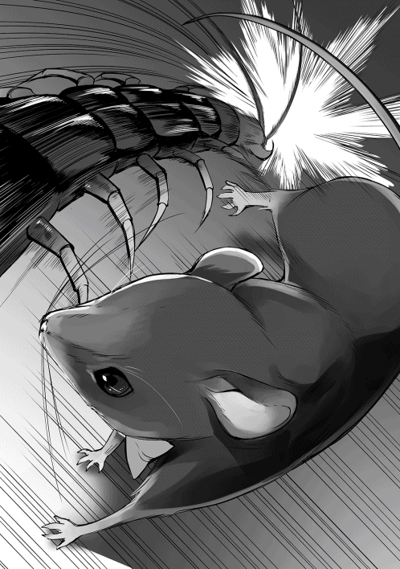
強烈な前歯の一撃を喰らったムカデは、断末魔の叫びのように身悶えていたが、そのままびくびくと痙攣し、二度と動かなくなった。
「バトラー、うっさい」
侵入者を撃退したバトラーが後ろを振り向くと、そこには逆さまになったセレネの頭があった。ベッドの上から動くのが面倒なのか、頭だけでベッドの下を覗き込むように見ていた。
『騒がしくしてしまい申し訳ありません。狼藉者を始末しておりました故。お許しを』
「ろーぜき？ あ、ムカデ......」
セレネはベッドから降りると、何のためらいもなくベッドの下に手を突っ込み、寝ぼけ眼でそのムカデを手に取った。
生前から、元々動植物が好きな方であったし、ムカデやクモといった生物は、ゴキブリやハエといった厄介な相手を捕食してくれる、セレネにとって友軍だった。
そんなわけで、人間の友達が殆どいないセレネにとって、ムカデは友達の一人だった。
「しんでる......」
しかし、セレネが手を差し伸べた時には既に遅く、その立派な体格のムカデは息絶えていたので、セレネは大層がっかりした。せっかく鼠が喋る世界に転生したのだから、もしかしたらこいつとも友達になれたかもしれないのに。
そういえば、こういったムカデみたいな虫を使う呪いを、過去世の漫画で読んだ事がある。ああ、もしこいつが生きていてくれたら、魔力を与えて王子の寝室に忍び込ませたり出来たかもしれないのに。こんな立派なムカデ、中々手に入らないぞと、セレネは悲しげに目を瞑る。
『姫はお優しい方でございますな......ですが、そのムカデの死は無駄ではございません』
「え？」
『生きている物は皆、いずれ土に還るのです。そうして再び生きる物の血肉となるのでございます。さあ、もうお休みになられてください。そのムカデは、私のほうで然るべき手段で処理しておきますので』
「わかった」
セレネはあっさりバトラーの台詞に頷いて、ムカデを床にぽいっと投げ捨てた。セレネは動植物の命を大事にする人間だったが、それ以上に美少女と乳房を大事にし、そしてそれ以上に自分を大事にする人間なのだ。
『姫は寝たか......よし！』
セレネが再び昼寝に戻るのを確認した後、バトラーはおもむろにムカデに喰らい付いた。バトラーはムカデの死骸を、実にうまそうにモリモリと食べていく。
『むむっ！ このムカデ、外殻は噛み応えがあるが、中身は想像以上にふんわりとしているぞ！ それでいてしつこくなく、身もたっぷり詰まっている！ こ、これはなんという絶品だ！』
バトラーは元々森の鼠である。セレネが嫌がると思い、極力、彼女の前では虫を食べないようにしていたが、やはりこれほど立派なムカデが乱入してくると、否が応でも食指が動く。
無論、セレネに害を及ぼすムカデを始末するのが主な目的ではあったが、降って湧いたご馳走にバトラーは内心で大喜びだった。
『しかし、どこか懐かしい味だ......おふくろの味と言った感じかな？』
それもそのはずである。蠱毒は本来なら呪いの力だが、バトラーの体内には、数年間流れたセレネの魔力がある。数日込められた呪力程度なら中和してしまう。さらにセレネの魔力を触媒に使われているのだから、親しみやすいのも当然である。
こうしてバトラーは、丸々と太ったムカデをぺろりと平らげた。しかし、このムカデは一体どこから来たのだろう。どう考えても、自然にこんな物が生まれてくるとは考えづらい。しかも、このムカデは窓から入ってきた。どう考えても、誰かが空から落としたとしか思えない角度でだ。
『もしかしたら、亡き母上からの贈り物かもしれないな......』
日ごろ影としてセレネを助けているのを、もしかしたら天に昇った母は見てくれているのかもしれない。その母が、自分を労うために魔力の詰まったムカデを送ってくれた。子供じみた考えだが、偶然にしては出来過ぎている。バトラーはこのムカデを母からの贈り物という事にして、それ以上は考えなかった。細かい部分はどうでもいい、そう思うほどに美味いムカデだったのだ。
こうして近年まれに見るごちそうを食べてご満悦のバトラーは、今は亡き母を偲び、英気を養い、より一層執務に励むのだった。
「もう二週間経ったのに全然駄目じゃない！」
「うむむ......こんなはずでは......」
人を食ったような態度の呪詛吐きも、エンテの部屋に呼び出されて以来、初めて困惑したような表情を浮かべた。常人であればとっくに死んでいる筈である。にもかかわらず、セレネの訃報は一向に入ってくる気配が無い。
渋るコクマルを叱咤し、何度かヘリファルテへ様子を見に飛ばしたりもしたが、セレネはぴんぴんしており、いつも通り生活しているとの事だった。コクマルの報告が嘘であるという可能性も無いわけではないが、あの馬鹿ガラスは、自分の利益に関する事だけは決して逆らわない。そういう意味では、呪詛吐きはコクマルを信頼していた。
「考えられる原因としては二つありますが......」
呪詛吐きは口元に当てていた手を離し、言いづらそうに口を開く。
「まず一つ、あの娘が呪いに対抗出来る存在を用意し、取り除いてしまったという事です。しかし、これはあまり現実的ではありませんな」
そう言って、呪詛吐きは己の考えを否定した。蠱毒に対抗出来る存在はそうはいない。対抗出来るとしたら、相当な力を持つ魔獣くらいだが、この大陸に魔獣の製法を知っている人間はほぼ皆無だし、一万歩譲り、何らかの偶発的な理由で魔獣を作ったとしても、力を蓄えるためには相当前から準備しておかねばならない。
「じゃあ、もう一つの可能性ってのは何なのよ？」
「あの娘の精神力が、人並みはずれて優れているという事でございます」
「......どういう事よ？」
「そもそも呪いというものは、精神的なものと強い結びつきがあるのです。『誰かが自分に悪意を向けている。命を狙っている』こういう事実を知るだけで、人は疑心暗鬼に囚われ、恐れ、衰弱してしまうほどです。そういった人間の弱い部分を増長させ、魔力を絡めて蝕んでいくのが真の呪いにございます」
「それで？」
「つまり......そういった汚らわしい物を跳ね除ける高潔な精神があれば、呪いという物は効果をなさなくなる可能性があるのでございます。何かご存知な事はありませぬかな？」
「そういえば......」
エンテは記憶を掘り返す。ヴァルベールにセレネがやってきた際、他の従者から搾り出した情報では、セレネに魔力がある事と、何か類稀な才能を持っていてヘリファルテに引き取られたという話を聞いた事がある。
「ほお......類稀な才能、でございますか。して、どのような才能でございましょう」
「分からないわ」
エンテは首を振る。従者達が言っていたのは「セレネに稀有な才能があり、アークイラからヘリファルテに献上された」という事だけだった。これはアークイラとミラノ王子が取り交わした書簡であり、ヘリファルテ王宮全体にそう公言されているらしい。しかし、具体的にどんな才能があるかは誰も知らなかった。
「もしかして......ううん、きっとそうだわ」
「何がでございますか？」
ここでエンテは、自分が重大な勘違いをしている事に気が付いた。てっきりセレネに魔力があるから、王子はあの小娘を手元に置いたのだと思っていたが、それ自体がおかしいではないか。
少ないとはいえ、平民にも魔力を持つ者はいるのだ。ならばセレネでなくても良いはずだ。類稀な美貌である事は理解出来るが、ミラノは外面の美しさだけで寵愛をするタイプではないはずだ。
「その才能が......表現出来ないものだったってわけよ！」
そう、セレネの持つ真の才能は、数値や形で表現出来ないものだったという事ではないのか。つまり、ずば抜けた精神力、民を導くカリスマの片鱗、邪悪を跳ね除ける高潔さ、そういった類の物だったのではないだろうか。だから、「魔力の才能がある」とか「絵画に造詣が深い」とか、具体的な文言として記述されなかった。そう考えるのが自然ではないか。
こうなると、エンテとしては本当に過去最大級の敵が現れたと認識せざるを得ない。魔力は自分にもある、技術は修練で身に着ける事が出来る。しかし、その者の生まれ持った「高潔な精神」とかいった漠然としたものは、その者以外には決して身に着ける事が出来ないのだから。
「どうするのよ！ 呪いが効かないんじゃ打つ手無しじゃない！ もっと他に方法は無いの!?」
「そう言われましてもなぁ。蠱毒が効かないとなると、恐らく、どの呪いも跳ね返されてしまうでしょうなぁ」
「この役立たず！ 何が呪詛吐きよ、このウソツキ！」
エンテはあらん限りの罵詈雑言を呪詛吐きにぶつけたが、呪詛吐きは平然としている。それどころか、だんだん顔がにやけてくる。怒りのままに感情を吐き出していたエンテも、段々不気味に思えてくるほどだ。終いには、呪詛吐きは天を仰ぎ、腹を抱えて笑い出した。
「ひ、ひひひ......ヒャーヒャッヒャッヒャ!!」
「な、何がおかしいのよっ!?」
自分の呪いが効かなくて気が狂ったんじゃないか、エンテはそんな邪推をしたが、それはあながち間違ってはいない。呪詛吐きは目を爛々と輝かせ、丸めていた背筋を伸ばし、今までに無いほど生き生きとしていた。
「いやいや！ これほど愉快な事はありませぬぞ！ まさかこの呪詛吐きの代で『あれ』を使う事になるとは思いませんでしたからな！」
「あれ......？」
エンテが不審がると、呪詛吐きは喋りたくて仕方ないとばかりに、べらべらと饒舌に口を開く。
「我が一族に伝わる『禁術』でございます。あまりにも危険ゆえ、もう何百年も使われておりませんでしたが、それほどまでの精神力をもつ者を殺すとなると、これを使わざるを得ませんな。いやいや、長生きはするもんですなぁ！」
呪詛吐きはうれしくて仕方が無い。今まで骨の無い相手ばかりで、こんな大魔術を使う機会など二度とないと思っていたのだ。それを自分の代で行使出来るなど、呪い師として最高の名誉だ。
「それ、本っっ当に効果があるんでしょうね？ 蠱毒とかいうのだって肩透かしだったじゃない」
「蠱毒などというちんけな代物と比べられては困りますなぁ。これは、呪いの質そのものが違いますので。ただ、準備にかなりの時間が掛かりますぞ。そうですなぁ、期間は半年ほどですかな」
「半年!? 随分と待たせるのね」
「まあ色々と準備がありましてな。まず罪人の血を集め......」
「聞きたくないわ」
どうせ碌でもない方法なのだ。エンテは耳を塞いで話を遮る。
「私が興味があるのはただ一つ。その禁術とかいうので、確実にセレネを始末出来るかどうかよ」
「過去にこの術を使い、何度か国を滅ぼした記録がございます。それを小娘一人にぶつけるのですぞ。聡明なエンテ様なら、これで分かるのではありませんかな？」
「............」
エンテは沈黙する。人一人ではない。国一つ滅ぼす程の術だ。呪詛吐きは今回は失敗したが、人を呪い殺すという事に病的なこだわりを持つ人間だ。嘘を言っているとは考えにくい。
「分かったわ。ただし、二度は無いわよ？」
「それはご安心を。このような大魔術、この老体では二度は打てませんのでな。この呪詛吐きの生涯最初で最後の大仕事にございます」
呪詛吐きは実に上機嫌でそう言うと、エンテに準備資金として額を示した。途端にエンテの顔が引きつる。
「ちょっと、これは法外過ぎない？」
「そりゃあ法外な事をしますので、法外な値段になるのは当然でございます。しかしエンテ様、効果の程は保証しますぞ」
結局、エンテは呪詛吐きの要望を受け入れた。
これ以上、セレネを増長させておけば、成長した時に本当に危険分子となる。
ならば、多少のリスクを払ってでも、絶対に消しておかねばならない。
エンテは歯がゆい思いをしながらも、あの美しい娘が、どのように悶え苦しみ死んでいくのか、それを考えて過ごすのもまた一興であると思いなおした。所詮あれはまだ小娘。半年程度なら王子も夜の相手はさせないだろう。まだまだ時間はある。
「今回は私の負けね。でも、最後に勝つのは誰かしら？ せいぜい半年後を楽しみにしている事ね」
そうして、エンテはセレネの散る姿を思い浮かべ、悦に入るのだった。
ヴァルベールから帰国してから早数日が経ち、セレネが知らぬ間に命を狙われ、そして知らぬ間にその危機を回避した事以外、ヘリファルテでは以前と変わらぬ日常に戻ったかのように見えた。だが、ミラノの身には、ある深刻な問題が起こっていた。
まだ朝日が昇ったばかりの時間帯であるが、ミラノはセレネの部屋の前で、緊張した面持ちで佇んでいた。これから彼は、日課の修練へと向かわなければならない。このタイミングを逃してしまうとセレネに会うまで大分時間が開いてしまうのだ。ミラノは深呼吸をして、ドアをノックした。
「セレネ、朝早く済まないが、起きているか？」
「ねてる！」
「起きているな。申し訳ないが、少し入らせてもらうぞ」
ミラノがドアを開くと、掃き清められた部屋の中、ベッドの上にこんもりと丸まった毛布があった。中にいるのは当然セレネであるが、彼女は今、毛布に包まれた巨大な饅頭のようになっていて、部屋に入ってきたミラノの顔を見ようともしなかった。
「今日はいい天気だ。少し早いが、目が覚めているなら散歩でもしないか？」
「いや」
毛布の中からくぐもった返事が聞こえてくると、ミラノはため息を一つ吐いた。そのままセレネのベッドに近づき傍らに腰を下ろすが、饅頭と化したセレネが顔を出す気配は無い。
「一体何がそんなに不満なんだ？ ヴァルベールから帰国してから、碌に口を利いてくれないじゃないか」
「............うるさい」
ミラノの言う通り、ヴァルベールから帰国してからというもの、セレネはずっとこんな調子で不機嫌だった。ミラノと会話どころか顔も合わせようとせず、食事の時も明らかにミラノを無視している。
「僕に悪いところがあれば今後は注意しよう。セレネ、どこに不満があるのだ？ はっきり言ってくれ」
「おうじが、おうじ、だから」
「僕が、僕だから？」
まるで謎掛けのような言葉にミラノは首を傾げる。謎掛けも何も、セレネはミラノの存在自体が気に入らないのだから言葉の通りである。だが結局、ミラノにはセレネの言葉の意味がまるで理解出来ず、気まずい沈黙の後、ミラノは日課の修練のため部屋を出ていった。
「うう、クスリ、クスリ......」
ミラノが出て行った事を確認すると、セレネは麻薬中毒者のような台詞を口にした。意外な事に、前世のセレネはその手の薬に手を出した事は無い。セレネが言っているのは、ヴァルベールで手に入れ、王子に光の速さで没収された白い粉末の事である。
あの薬は、非常に効果の強い強壮剤である事が判明した。しかし、入手先がヴァルベールの怪しげな路地裏という事もあり、王族に振る舞うのは少しためらわれたため、王宮の宝物庫にお蔵入りとなった。
これはセレネにとって非常に不満だった。強壮剤を大量に盛り、王子の体調を一気に崩せると思っていたのに、王子が身の危険を鋭く察知し、先手を打たれてしまったと思ったわけだ。
無論、ミラノにも薬学者にも悪意は全く無いのだが、セレネは希望を断たれた事で、日々の毒入り弁当を作る気力すらなくなってしまい、ここ数日、こうしてずっと不貞寝していたのだ。
「はもの、ナイフ......ぶき、ほしい」
薬が駄目なら、最悪の場合ダイレクトアタックしかないのだが、今のセレネはそれすら出来ない立場だった。ミラノはセレネを身請けする際、アルエから「セレネが監禁されていた頃、自傷行為──あの美しい髪を丸刈りにしてしまった」という情報を聞かされていたので、刃物に関しては特に厳重に管理されていたのだ。
お陰で、セレネの部屋にはちょっとした糸きりバサミ程度の物しか置かれておらず、優秀なメイドにより毎日チェックされていたので、台所からナイフを持ち込むという事も出来なかった。
「うう、コロス、コロス......」
物騒な言葉をぶつぶつと吐きながら、セレネは毛布に包まり、再び眠りに落ちていった。
「勝負あり！」
王宮の修練場にクマハチの野太い声が響く。彼は今、兵士達の稽古の審判を務めていた。模擬刀を使った一対一の打ち合いだ。これ自体はいつも通りの訓練だが、目の前に繰り広げられた光景に、回りの兵士達は唖然としていた。
打ち合いを制したのは、剣術の達人である聖王子ミラノではなく、まだ兵士となって一年にも満たない少年兵だったからだ。勝利した少年は、自分の剣がミラノの剣を弾き飛ばした事が信じられないようで、己の手と、地面に落ちたミラノの剣を何度も交互に見返していた。
「お、王子！ 申し訳ありません！」
「いや、僕の負けだ。腕を上げたな」
理解が現実に追いついた少年兵は、顔を青くして慌ててミラノに頭を下げた。それに対し、ミラノは落ち着き払って少年を労った。ここで修練をしている時は、王子も新兵も一切関係無い。
「王子、今日はこの辺にしておいたほうが良かろう」
「何を言う、まだ午前中だ。稽古を終えるには早過ぎる」
「そんな状態でうろつかれては、他の兵士に影響が出るでござる」
クマハチはぴしゃりと言い放った。ミラノも自分が集中出来ていない事を理解していたが、日課である修練を早引きするのにはいささか抵抗がある。渋るミラノの腕を掴み、クマハチは兵士達が休憩に利用している木陰へ、強引にミラノを引っ張り、二人で並んで腰を下ろした。
「ヴァルベールから帰国してからというもの、王子はセミの抜け殻でござるなぁ」
「いや、すこぶる健康だ」
「隠そうとしても無駄でござる。肉体的には問題なかろうが、精神面のほうでござるよ」
「別に悩み事など無い」
「あ、セレネ殿が来たでござる！」
「な、何っ!? ど、どこだ!?」
ミラノは急に立ち上がり、クマハチが指差した方向に目を凝らす。しかし、そこには晴れやかな青空と綺麗に刈り揃えられた芝生、その上で訓練する野郎共ばかりで、愛くるしい白い姫の姿はなかった。
「......クマハチっ！」
「はは！ やはりセレネ殿が原因でござるか。聞くところによると、どうも姫はご機嫌斜めでござるな？」
「......その通りだ」
ばつが悪そうにミラノは再び腰を下ろした。ヴァルベールから帰国して以来、セレネは殆ど弁当を作りに来ていない。ミラノは表には出さないが、内心でかなり落ち込んでいた。
「やはりお前には見抜かれてしまうか......セレネは、僕を避けている」
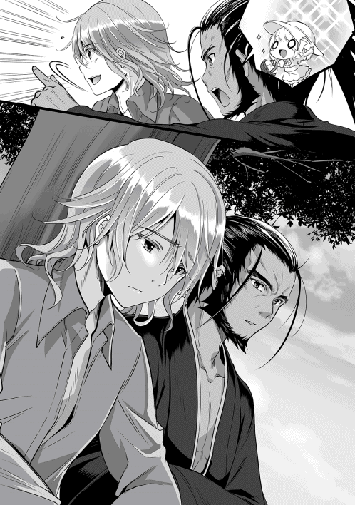
「何故でござる？」
「これは推測なのだが、ヴァルベールで買った薬を僕が取り上げたからだろう。あの時、僕はセレネから危険な物を遠ざける事ばかり考えて、あの子の気持ちを汲んでやれなかった」
セレネは自分を気遣い、自由に出来る金を打ち捨ててまでしてあの薬を買ってくれたのだ。その優しい気持ちを無視し、一方的に叱り、結果的に踏みにじってしまった。ミラノはあの時に戻り、自分を殴り飛ばしてやりたい気分になっていた。
実際には、セレネにそんな思いやりなど微塵も無かったのだが。まあ、セレネの思惑をぶち壊したという点では間違ってはいない。
「なるほどなぁ、それでセレネ殿は今、どうしているのでござるか？」
「取り付く島も無い。布団に潜ったままで顔を合わせてくれないし、碌に返事もしない。まるでカタツムリと会話している気分になる」
「セレネ殿に謝罪は？」
「したさ。悪いところがあれば注意するとも言った。だが、『王子が王子だからキライ』としか言ってくれない。まるで意味が分からない」
ミラノは両手で頭を抱え、呻くように呟いた。大陸最難関と呼ばれる、ヘリファルテ国立大学の問題を楽々と解けるミラノですら、これほどまでの難題に直面した事は無かった。難題も何も「お前の存在が気に入らない」というそのまんまな主張なのだが、ミラノにはそんな発想は思い浮かびすらしなかった。
「ふぅむ......まるで『月の姫の難題』のようでござるな」
「月の姫？」
「うむ。拙者の国の昔話なのだが、ある老夫婦の元に、月からやってきた美しい姫が現れるのだ。その姫に対し、様々な貴族が求婚をするのだが、姫は、とても常人では用意出来ない物を持ってこいと難題を出し、男を追い払おうとしてしまうのでござる」
まさに今の自分と同じ状況だ。興味の湧いたミラノは、クマハチに先を促す。
「それで、その物語はどうなるのだ？」
「まあ、最終的に姫は月に帰ってしまうのでござるが......」
「それは困る！」
「王子、これはあくまで昔話でござるよ」
「す、すまない。そ、そうだったな......」
思っていた以上に冷静さを欠いていた事に気付き、ミラノは赤面する。そんなミラノを横目に、クマハチは苦笑しながら話を補足する。
「それで、姫の難題の件でござるが、結局、求婚した男達は、あの手この手で偽物を用意するのだが、全て失敗に終わるのでござる。まあ、姫が本当に求めていたのは『誠意』ではないかと拙者は思うがな」
「誠意......か」
しかし、ミラノとしては誠意を尽くしているつもりである。これ以上、一体どうすればいいというのか。
「昔話ではないが、セレネ殿に何か贈り物をしてみてはどうでござるか？」
「物で釣る、というわけか？ それでは誠意にならないだろう」
「だから、あくまで誠意でござるよ。いくら言葉を尽くしても、現実に何も利益が無ければ、なかなか人の心はなびかないでござる。だから、セレネ殿が心から好きな物を用意するのでござる」
「セレネが心から好きな物、か......確かにそれはいい案かもしれない。クマハチ、感謝する」
「お安い御用にござる」
ミラノはクマハチに礼を言うと、その日の修練を素直に切り上げた。そして、すぐに移動用の小型馬車に飛び乗り王宮へと戻る。王宮に着くや否や、ミラノは駆けるようにある一室を目指した。白く塗られたドアの前に立ち、数回軽くノックする。
「マリー、いるか？」
「あれ、兄さま？ 今日は早いのね」
マリーは自室から出てくると、不思議そうな表情で兄を見上げたが、そのまま兄を自室へと促した。マリーの部屋は絨毯からカーテンに至るまで、彼女の好きな薔薇色が多かった。色とりどりの花が挿された花瓶の置かれた白いテーブルから、ベッドの上のウサギのぬいぐるみなど、年頃の少女に相応しい内装となっていた。実用品しか置かない殺風景なセレネの部屋とはえらい違いである。
「少しお前に聞きたい事があってな」
「聞きたい事、当ててあげよっか？ セレネの事でしょ？」
ミラノの目が見開かれるのを見て、マリーは得意げに笑った。セレネが来てからというもの、マリーはこうして兄から一本取れる事が多くなり、それによってコンプレックスが徐々に解消され、以前のような普通の兄妹の関係に戻りつつあった。
「何故分かる？」
「だって兄さま、ここ最近、ずーっとセレネの部屋に行って追い返されてるじゃない。そんなの誰でも分かるわよ。どうしたの？ ケンカ？」
「ケンカというか......」
そうしてミラノは、マリーに事の成り行きを話した。同じくらいの年頃の女の子のマリーなら、セレネの気持ちが分かるかもしれない。ミラノがこうしてマリーに助けを求める事など今まで無かったので、マリーはとても良い気分になり、真摯に兄の相談に耳を傾けた。
「確かに、お詫びって、何か形で欲しいかも。だって、いくら『ありがとう』とか『すまない』とか言われても、口だけだったら、誰でもなんとでも言えるもん」
「やはりそうか......それで、セレネに何を渡すかなのだが、今まであまり意識した事が無くてな。何かいい意見は無いか？」
ミラノは、彼にしては随分と弱気な口調でマリーに尋ねた。今までセレネのためを思って色々とやってきたつもりだったが。それに対し、セレネが反応を示した事が驚くほど少ない事に、ミラノは今になって気が付いた。
セレネは生まれ育った環境のせいか、天性のものか、はたまた両方なのか分からないが、あの年頃の子供としては明らかに異質だった。食べ物の好き嫌いもなく、出された物は全て平らげるし、以前、母が欲しい物はないかと尋ねた時に求めた物は抱擁だった。それ以外は基本的には大人しく、大体寝ているので、彼女が何を求めているのか全く理解出来なかった。
理解出来ないのも当然である。何故ならセレネが求めているのは、まさに食事と睡眠、そして乳房である。女の子らしい何かなどセレネが求める筈もなく、飯が食えてダラダラして、たまに姉のおっぱいに抱きつければ人生それでバラ色なのだ。ある意味、これ以上無いほど単純で幸せな奴だった。
だがミラノは、セレネとてマリーと同じ年頃の少女なのだから、きっと共通項はあるだろうという認識に縛られていた。もちろん、マリーも同じである。マリーは眉間に皺を寄せ、両手を組んで必死に考える。
「んー......難しいわね。私だったらお洋服とか欲しい物は沢山あるけど、セレネはそういうのにあんまり興味ないっぽいし......あ！ 嫌いな物だったら分かるわ」
「嫌いなもの？」
「あの子、薔薇が嫌いなのよ」
「薔薇？ 女性であの花を嫌いというのは珍しいな」
「でしょ？ 私は薔薇大好きだから、変なのって思ったのを覚えてるわ。セレネ、ちょっと変わってるから」
「嫌いなものは分かった。それで、好きな物は何だ？」
「ええと、なんだったっけなぁ......何か言ってた気がするけど。ごめん、ちょっと思い出せないわ」
「そうか......いや、十分だ」
礼を言いながら、ミラノはマリーの頭を撫でてやった。昔、マリーはこうされるのが好きだったのだ。最近までは触れようとするだけで手を払いのけられたのだが、今日のマリーは少し緊張しながらも、素直に撫でられていた。そうして、ミラノが部屋を出て行こうとした時、マリーが後ろから声をかけた。
「兄さま、セレネと仲直り出来るといいね！」
「ああ、ありがとう。マリー」
ミラノは少し驚いたが、すぐに柔和な笑みを浮かべた。マリーがこんな風に応援してくれるようになったのも、セレネのお陰なのだ。そのセレネが塞ぎがちになっている姿を、ミラノはこれ以上見ていたくなかった。
「仕方が無い。奥の手を使うか......」
ミラノは目を閉じ、少しの間逡巡していたが、何かを決心したように頷き、近くにいたメイドの一人に声を掛けた。
「すまないが、至急頼みたい事がある。時間をもらっても大丈夫か？」
「は、はい。私で宜しければ」
王子が至急というからには、余程重大な事なのだろう。そう考えたメイドは、ぴんと背筋を伸ばした。ミラノはメイドに紙とペンを持ってこさせると、その紙に何かを書き、サインをして折りたたみ、メイドに手渡した。
「急ですまないが、ヘリファルテ国立大学の学長に、ある学生と面会をさせて欲しいと伝えてくれ。その紙を門番に見せれば、学長に取り次いでもらえるだろう」
「え!? 王子が学生さんと会うんですか!?」
メイドの驚きは至極もっともな事だった。大国ヘリファルテの第一王子が、たかだか一介の学生と直接会いたいなどという事は前代未聞だった。ミラノもそれは重々承知だ。あまり軽はずみな行動をすると、その学生にも、自分にもあらぬ噂が立ち、余計な面倒が降りかかる恐れがある。とはいえ、王子の命令とあれば、メイドは逆らうわけにもいかない。
「では、その学生さんのお名前をお伺いしても宜しいでしょうか？」
ミラノは少しの間沈黙する。この判断が本当に正しいのだろうかと。しかし、現状を打開するには、どうしてもその学生の力が必要なのだ。そして、ミラノはその名を口にした。
「アルエ＝アークイラ殿だ。どうしても貴殿の力が必要だと、伝えて欲しい」
メイドを使いに出してからというもの、ミラノはやきもきしながら王宮の入り口をうろうろしていた。傍らには妹のマリーまでもが佇んでいる。庭師達は、普段あまり見ない落ち着きのない王子を怪訝に思いながらも、黙々と己の作業をこなしていた。
「兄さまったら、少し落ち着いたら？」
「いや、これでも十分落ち着いているつもりなんだが......」
その言葉に、マリーは呆れたように首を振った。今の兄に何を言っても無駄だろう。そうこうしているうちに、メイドを乗せた馬車が帰還してくるのが遠くに見えた。馬車の到着を待たず、ミラノはそちらのほうに駆けていく。メイドの方もそれに気が付いたのか、慌てて馬車から降りた。
「問題は無かったか？」
「はい。学園長様はかなり驚いていましたけど、今から訪問されても問題ないとの事です」
「助かった。感謝する」
ミラノが労いの言葉をかけると、メイドは恭しく一礼をして自分の仕事に戻っていった。ミラノはそのままメイドと交代するように馬車へと乗り込むが、それを見たマリーが、仰天しながらミラノの乗った馬車へと走り寄った。
「ちょっと兄さま、本当に今すぐ行くの!?」
「ああ、一刻も早くアルエ殿に、セレネの機嫌を治す特効薬を教えてもらわねばならんからな」
マリーと話している時間も惜しいのか、ミラノは御者を促し、そのまま馬車に乗って大学へ向かっていった。セレネの機嫌を治す特効薬は、まさしくそのアルエ本人なのだが、セレネがアルエに対して持っているのは、家族としての親愛の情だと判断していたミラノは、彼女が姉に恋慕している異常者だとはさすがに思わなかった。
マリーは思わず苦笑する。あんなに落ち着きのない兄を見たのは初めてだった。完璧超人だと思っていた兄も、ああいった行動をするという事実に、マリーは失望するどころか親近感を持った、ああ、兄もやはり一人の若者なのだなあ、と。
「兄さまったら、よっぽど焦ってるのねぇ......」
兄を乗せた馬車が完全に視界から消えるまで見送ると、役目を終えたマリーは自室へと戻ろうとした。しかし、不意にマリーの足が止まる。口元に手を当て、うつむきながら何事かを考えるようにぶつぶつと小声で一人ごちる。
「プレゼントならびっくりさせた方が効果がありそうだけど、セレネ、妙に勘がいい所があるからなぁ......」
セレネの勘がいいのではなく、諜報活動に優れた執事を持っているからなのだが、そんな事を知らないマリーは、兄がセレネの好きな物を探っている事にセレネが感付かないか懸念した。
「仕方ない。ここは兄さまのために、このマリーベルが一肌脱ぎますか！」
口調は投げやりだが、それでもどこか楽しげにスキップしながら、マリーは王宮へと戻っていった。
『姫、そろそろ王子の事を許してやってはどうですかな？ 彼も随分反省しているようです』
「やだ」
セレネは毛布から顔だけを出し、目の前のバトラーの諫言を流す。反省だけなら猿でも出来るのだし、王子が苦しんでいるのなら、それはそれで愉快だった。
「おうじ、きらい」
『姫、あまりわがままばかり言ってはいけませんぞ。姫のために、王子はわざわざ国立大学まで向かわれたようです。何でも、アルエ姫に面会をするのだとか』
バトラーはセレネのために、一日数回は城内に異変がないか見回りをしている。大抵は彼一人で済むが、場合によっては城の鼠達を使う事もある。そして、つい先ほど仕入れた情報によると、ミラノが単身、ヘリファルテ国立大学へ向かったとの事らしい。
「ふーん............ぇ？」
別に王子が大学に行こうが豚の餌になろうが知った事ではないので、セレネはバトラーの言葉を華麗にスルーしようとした。だが、バトラーの報告の中には、聞き捨てならない単語が入っていた。
「ねえさま、きてるの!?」
『そのようですな。姫が王子を避けていたので、伝えている暇が無かったのでしょう』
「しまったぁ!!」
セレネは毛布を跳ね除け飛び起きた。なんたる不覚！ セレネは思考回路をフル回転させ、足りない脳細胞でミラノの行動を推理し、またたく間に結論を出した。
今までは自分が鋭い視線で王子を監視していたので、奴もおいそれと行動出来なかったのではないか。しかし、ここ数日、その監視をさぼっていた。それを好機と判断したあの性王子は、早速アルエに食指を伸ばしたのではないだろうか。
実際のところ、憧れのミラノの背中を目線で追っている純情な乙女としてしか見えておらず、セレネの周りの人間は微笑ましく思っていたのだが、セレネとしては鬼軍曹の如くミラノを凝視していたつもりだった。
そのままセレネは推理という名の妄想をどんどん膨らませていく。大体にして、姉が来たと自分に告げていないのはおかしいではないか。その理由は簡単だ。人質に情報を渡す事で、余計な障害が増えるのを恐れたからだ。
心優しいアルエの事だ。『あなたの妹が精神的に参っている。彼女のために知恵を貸してくれないか』などと言われてしまえば、表面上は紳士を繕っているあの王子とほいほい面会してしまうだろう。姉の純粋さにつけ込む卑劣さに、セレネは怒りのあまり目の前が真っ赤になった。
「いそがなきゃ！」
セレネはベッドから転がり落ちるように飛び出し、いつもの如く一番手前にあったアークイラ製の白いドレスを見に纏う。慌てて着込んだので襟元のリボンがよれよれになっているが、そんな事を気にしている場合ではない。
『姫、どこへ向かうのですか？ 私も一緒に......』
「まってて！」
『へ？ はぁ、まあ姫がそう仰るのであれば、待機しておりますが......』
バトラーの話などまるで聞かず、セレネは待っててと叫んだ。「親愛なるアルエ姉様、今、貴方の騎士であるセレネが助けに参ります！ 待っていてください！」という意味だったのだが、いかんせん短過ぎる上に主語がなかった。なのでバトラーは、自分に対しての待機命令と取った。主の命令であれば、バトラーは従わざるを得ない。
「ちっきしょう！ なめやがって！」
セレネはドアを乱暴に閉じて叫ぶと、凄まじい勢いで──といっても、運動不足の八歳児なので鈍足なのだが、本人としては疾風の如く廊下を駆けているつもりだった。廊下に置いてある調度品を手入れしていたメイド達は、慌てた様子でぱたぱた走っていく少女を、不思議に思いつつも見送った。
そのままセレネは一直線に王宮の出口を目指す。あそこには馬車が数台ある。セレネも王宮の敷地内だけだが、王子に殺人弁当を運ぶため、修練場への移動でもう何度も利用している。王子に会いたいと顔なじみの御者に強く頼み込めば、アルエのいる大学まで連れていってもらえるだろう。
「待ちなさい！」
しかし、セレネが長い廊下を駆け抜け、外に飛び出そうとした矢先、何者かがセレネの行く手を阻むように立ちはだかった。太陽の光を背にするように仁王立ちしているので、シルエットしか分からない。
「なにやつ！」
「やっぱり来たわね。ここで待っていてよかったわ」
セレネの前に現れたのはマリーであった。彼女が何故ここにいるのか分からないが、今は相手をしている暇は無い。セレネはぜえぜえと肩で息をしながら、マリーを無視して横を通り過ぎようとしたが、マリーはそれを遮るようにセレネの前に回り込んだ。
「マリー、どいて」
「どこに行くつもりなの？」
「さ、さんぽ」
「目が泳いでるわよ」
「わたし、およげない、め、およげない」
セレネは、愛想笑いを浮かべ、彼女の頭で考えたにしては上等な軽口で誤魔化そうとしたが、そんなバレバレの演技に引っかかるマリーではない。
「セレネ、兄さまを探してるんでしょ？ 悪いけど、今は城にいないわよ」
「だいがく？」
「ち、違うわよ！」
「マリー、め、およいでる」
マリーもあまり嘘が得意ではないのですぐに顔に出る。そして、その表情を見逃すセレネではなかった。セレネは自分の利益に関する事なら、目ざとく察知する事が出来る狡い性質を持っていた。
マリーは想像以上のセレネの勘の鋭さに驚きながらも、なんとか冷静な振りをした。ここでセレネを通すわけにはいかないのだ。兄とセレネの仲を繋ぐキューピッドとして、セレネをここで足止めせねばならない。
「兄さまは忙しいから邪魔しちゃダメよ。一緒に遊びましょ？ その方が絶対楽しいわよ」
「......いそがしい、なにが？」
「それは......ええと、その、私もよく知らないんだけど、とにかく忙しいのよ。だから、邪魔しちゃダメなの。うん、そうよ」
マリーはしどろもどろにそう答えたが、かえってセレネの不信感を煽る事になった。妹に言えないような理由で、しかも予防線として自分を食い止めさせようとしているなんてもはや黒確定である。少なくとも、セレネにはそうとしか考えられなかった。
こうしている間にも姉の貞操の危機が迫っているのだ。何が何でもマリーを乗り越えなければならない。障害があればあるほど恋は燃え上がるというではないか。セレネは今、間違った方向に全力で燃えていた。
「うおー！」
唐突に、セレネは何も考えず、マリーの横を突っ切るために全力で突進した。作戦も何も無かった。それもそのはず、セレネが戦略シミュレーションゲームで最も得意とする戦術は「圧倒的な力で敵を粉砕し、相手がそれ以上の戦力を用意してきたら、こちらの戦力をさらに増強して粉砕する」という物である。つまり、ごり押しであった。
「ちょっ......待ちなさい！」
「うぅー！」
しかし、世の中ごり押しと根性論だけではどうにもならない。マリーはセレネの奇行に一瞬慌てたが、すぐにセレネを後ろから羽交い絞めにした。セレネは腕を振り回して抵抗するが、華奢なセレネの力では引き剥がす事など出来ない。
マリーは聖王子ミラノの妹であり、英才教育を受けた才女である。日頃ごろごろ過ごしているセレネとは、鳥で例えるなら、ワシとアヒルくらい身体能力の差があるのだ。
「許可がないと学校は行っちゃダメなの！ さあ、大人しく私と遊ぶのよ！」
それでもセレネは、しばらくの間じたばたと抵抗していたが、やがて諦めたのか大人しくなった。セレネが脱走しない事を確認しつつ、マリーはセレネの拘束を解いた。
「わかった、あきらめた......」
「うん、それでいいのよ」
多少うなだれながらもセレネは大人しく従うそぶりを見せたので、マリーは内心で安堵のため息を吐いた。後はセレネに付き合い、兄がアルエ姫からセレネの好みの物を聞き出してくれば作戦成功である。
「じゃあ、あそぶ」
「何する？ かくれんぼ？ お絵かき？」
マリーが笑顔でそう尋ねると、セレネは顔を上げ、聞いた事のない遊びを提案する。
「あっち、むいて、ホイ。やりたい」
「アッチム......何それ？」
セレネはたどたどしくゲームのルールを説明した。セレネが指差すと同時に顔を動かし、セレネの指の向きと合っていれば勝ち、違っていたら負けという実にシンプルなルールだ。恐らくセレネが考えたのだろうが、やった事のない遊びにマリーは興味を惹かれたので、付き合う事となった。
「あっち......むいて......ホイっ！」
セレネは真上を指した。ミラノ程ではないが、マリーとて偉大なるヘリファルテの血を引き、姫として常に文武両道を目指しているのだ。のろまなセレネの指の動きなど簡単に捉えられる。マリーはやすやすとセレネの指と同じ、上方に顔を向ける事に成功した。
「私の勝ちね！」
「マリー、そのまま」
「え？」
正面に立つセレネに向き直ろうとしたマリーの頭を、セレネが両手で掴んで上向きのまま固定する。
「わたし、いいよ、いうまで、そのまま」
「変な遊びね......まあいいけど」
そうしてマリーは天井を向いたままの姿勢で固まっていた。自分はお姉さんなのだし、ここはセレネの機嫌を配慮してやろう。マリーはそう考え、大人しく従った。しかし、いつまでも首を上に向けているのはつらい。いい加減疲れてきたマリーは、上を向いたままセレネに尋ねる。
「ねえ、いつまでこうしてればいいの？ 首が疲れるのよ......って、ああっ!?」
さすがに疲れたマリーが頭を正面に向けると、目の前にいたはずのセレネは煙のように消えていた。慌てて辺りを見回して確認すると、遥か彼方、馬車に乗り込むセレネの姿が見えた。
セレネに急かされたのか、馬車はかなりの早足で去っていく。セレネはマリーに上を向かせている間に、足音を殺して外に抜け出していたのだ。セレネは十歳の少女相手に、容赦なく反則勝ちを選んだのだ。
「こんのぉ！ 騙したわね！」
セレネに一杯食わされたマリーは激怒し、猛然と別の馬車に飛び乗る。
「あの馬車を追ってちょうだい！ 急いで！」
御者は何が起こったのか分からないが、興奮するマリーの剣幕に押され、セレネの乗った馬車を全力で追う。こうして、セレネとマリーの、カーチェイスならぬ馬車チェイスが始まった。
「アークイラから到着したばかりで、お忙しいところ申し訳ない」
「いえ、お気になさらず。ミラノ王子に気を遣っていただけるなんて恐縮です」
ヘリファルテ国立大学、広大な敷地と数多の優秀な頭脳を抱える大陸一の大学は、食堂、購買、図書館──その他ありとあらゆる施設が充実している。その気になれば、学生時代を学園の敷地内から一歩も出ずに生活していけるほどだ。
その中に存在するカフェの一角で、ミラノとアルエは面会をしていた。緑の芝生の上に真っ白なベンチが設置された開放感溢れる憩いの場は、他の学生達も食事や休憩によく使う。
本来なら一国の王子であるミラノがいるべき場所ではないのだが、ミラノがアルエの自室に出向いてしまうと、各国の貴族が集まるこの場では、お互いの関係を噂される危険性がある。そのため、あえて公共の場所で相談する事になった。セレネの存在を学生達は知らないし、あくまで知人の好みを聞き出すだけという名目ならば問題ない。
「学長が言っていましたが、アルエ姫は編入テストで随分と優秀な成績を収めたそうですね。推薦した僕としても鼻が高いです」
「ミラノ王子には本当に感謝しております。強引な取引であるはずなのに、こんなに素晴らしい環境を与えていただけるなんて。だから、私も王子のお心遣いに応えなければと必死なだけです」
アルエは少し照れながらそう答えたが、ミラノはアルエが己の能力を誇示せず、また、大国の王子相手だからと言って、必要以上にへりくだらない事に好感を持った。
「ミラノ様、今日はどういったご用件でございますか？ 私に出来る事であれば、喜んで協力させていただきますが」
アルエが促すと、ミラノは少し言葉に詰まった。その態度を見たアルエは少し表情を曇らせる。
「あの......もしかして、セレネが何か？ 王子やヘリファルテにご迷惑をお掛けしているとか......」
「いえ！ それは違います。セレネは迷惑を掛けるどころか、我が国に多大な貢献をしていると言ってよいでしょう。彼女が来てからというもの、兵士の士気も上がり、我々の結束はより深まっています。それに優秀なアルエ姫をこの国に迎え入れられた事も、非常に意義のある投資であると考えています」
「ミラノ王子に、そのようにお褒めいただけるとは光栄の極みです。アークイラを代表してお礼を申し上げます」
アルエはぱっちりとした双眸をさらに大きく開き驚いていたが、すぐに表情を緩めて笑顔でミラノに頭を下げた。ミラノはアルエの顔を上げさせると、少し気恥ずかしげに口を開く。
「今日ここに来させていただいたのは、個人的な事です」
「個人的、ですか？」
「実は、どうもセレネに嫌われてしまったようで......」
「ええっ!? どういう事ですか!?」
アルエは、彼女にしては珍しく大声を出し、座っていた椅子から立ち上がる。周りにいた学生達が視線を集中させたのを見て、アルエは頬を赤らめながら座りなおした。
「あの子ったら......ミラノ王子にこんなに良くしていただいてるのに、何が不満なのかしら」
「いえ、彼女に嫌われる原因を作ってしまったのは私です。先日、他国へ訪問したのですが......」
そうしてミラノは、セレネがヘリファルテに迎え入れられ、今に至るまでの流れをかいつまんでアルエに話した。アルエはただ黙って話を聞いていたが、驚き半分呆れ半分といった表情であった。
「本当に、セレネは私を驚かせる事ばかりするのね。あの子、一度も料理なんかした事無いのに」
「あの子は言語は不自由ではありますが、知力は並の八歳児ではない、目を瞠るものがあると妹の教育係も言っていました。これからが実に楽しみです」
ミラノがさりげなく妹を褒めているのを聞き、アルエは顔をほころばせた。不遇な人生を歩んできた妹が、慣れない異国の地でたった一人頑張っていた事実に、自らも身が引き締まる思いになった。実際にはあんまり頑張っていないというか、間違った方向に頑張っていたのだが。
「私も、セレネに負けないようにしないとなりませんね。それはそうと、セレネの好きな物を知りたいとの事ですが、あの子が大好きな物は......」
そうしてアルエが囁いた言葉に、ミラノは食い入るように聞き入っていた。
「なるほど、よく分かりました。さすがアルエ姫、セレネに関しては右に出るものはいませんね」
「お役に立てたのなら幸いです。もう少し落ち着いたら、私もセレネに会いたいのですが」
「その件なのですが、まだ、セレネにはアルエ姫が到着した事は伝えていません」
ミラノは申し訳無さそうにそう答えた。アルエが留学してまだ一週間も経っておらず、荷解きすらまだ終わっていない。そんな状態でもアルエが来たとセレネに教えてしまうと、姉を慕っているセレネは会いたがるだろう。
だが、まずはアルエの生活環境を整えなければならない。ミラノはそう考えていたので、アルエがもう少し落ち着いてから、セレネを連れて会いにこようと思っていた。姉であるアルエは我慢出来ても、子供であるセレネには生殺し状態になってしまうからだ。
「そうですね。アークイラの姫は私一人ですから......」
そう言ったアルエの表情は、少し翳っていた。アークイラにいた時とは天地ほどの扱いがあるとはいえ、セレネは未だ王族という身分を明かせない。その点に関しては、ミラノも心苦しい思いだった。他の学生に聞かれないよう、ミラノは囁くようにアルエに小声で話しかける。
「セレネとアルエ姫が会う場合は、あくまでお忍びという形になるでしょう。ですが、いつか彼女の本来の身分を公表出来るよう、私も尽力する事を約束します」
「ミラノ王子の寛大な慈悲に、心から感謝申し上げます。そして、いつかセレネが光り輝く道を歩いていけるように、微力ながら私も努力致します」
そう言って、ミラノとアルエはお互いに微笑みながら握手をした。セレネに関しては、非公式とはいえ国家間の契約であり、非常にデリケートな存在だ。なので、おいそれと国民に晒す訳にはいかないが、ミラノもアルエも、あの才能ある少女を日陰者にしておくつもりは毛頭無い。
「しかし、今日は妙に閑散としているな。前に来た時はもっと賑やかだった気がするのだが」
「そう言われてみれば......皆どこにいったのかしら？」
お互いの話が一段落着き、改めて辺りを見回した二人は怪訝な顔をした。時間的にはまだ昼過ぎであるのにもかかわらず、今日はカフェにいる学生の数がかなり少ない。普段なら昼食を摂ったり、午後の授業までの休憩時間を過ごす学生達が集まっているはずなのに。
そうして人の流れを窺っていると、何やら皆が中庭のある正門のほうに足を向けているらしい。近くを通った女子学生の一人をミラノが呼び止めると、彼女は恐縮しながらも立ち止まった。
「ええと、何でも中庭のほうで騒ぎになっているみたいです」
「騒ぎ？ 学生同士の喧嘩か何かか？」
「いえ、そうじゃないみたいです。何でも、小さな女の子が二人で騒いでいるらしいですよ。金髪の娘と、全身真っ白な女の子らしいですけど」
その言葉を聞いて、ミラノとアルエが目線を合わせる。
「金髪の娘と......」
「真っ白な女の子......」
ミラノとアルエは、椅子を蹴倒す勢いで立ち上がり、二人で頷きあいながら、物凄い勢いで中庭の方へと走り去っていった。後に残された女子学生は、何が何だか分からず、きょとんとした表情で二人の背中を見送った。
「さあ、もう逃げられないわよ！ 大人しく観念なさい！」
「い、いやだ！」
整然と敷き詰められた石畳、そしてその周りに、色とりどりの植物が植えられた美しい中庭の噴水前で、純白の少女と真紅のドレスを纏った金髪の少女──セレネとマリーがけん制しあっていた。その二人を取り囲むように学生達が集まり、辺りはまるで大道芸を見るような人だかりが出来ていた。
少女達と野次馬の間では、門番達と、二人の馬車の御者達が困惑した表情で佇んでいた。これがただの少女同士の喧嘩なら、門番が猫の子の如く襟首を掴んで敷地外に放り出し、軽いお説教でお終いである。
しかし、目の前で騒ぎを繰り広げているのは、天下のヘリファルテの王女マリーベルだ。そして、そのマリーベルと対等に向き合っている少女も、正体は分からないが只者ではないのだろう。
というか、何故こんな状況になっているのか、門番にはさっぱり理解出来なかった。
のどかな昼下がり、うららかな日差しの下でのんびりと構えていた門番の目の前に、突然凄まじい勢いで二台の馬車が突っ込んできた。あまりの速度に止める暇すらなかったのだ。
強盗かと思い門番は慌てて長槍を構えたが、どちらも小型の馬車で、幌の横面には、大鷲をあしらった王族専用の馬車の証明があったので、門番は即座に槍を引っ込めた。
その直後、二台の馬車から突然、少女がほぼ同時に飛び出し、逃げる白い少女を赤いドレスの少女が追いかけていったのだ。門番も慌てて追いかけたが、理由も分からないまま王女の行動に口を挟むわけにもいかず、現在に至るのだった。
「いいから帰るの！ 勝手に学校に来たら怒られるわよ！」
「かまわん！」
「構うわよ！」
セレネがマリーの横を駆け抜けようとするが、すかさずマリーが彼女の前に立ち塞がる。二人は腰を低く落とし、お互いの出方を窺っている。まるでサッカーのフォワードとディフェンスのせめぎ合いである。
セレネは焦っていた。相手は十歳の金髪ロリだ。さすがに全力で倒すのは抵抗がある。しかし、自分は八歳のロリであり、体力的には圧倒的に劣っているのも事実だ。セレネは深呼吸を一つして、マリーに小さな人差し指をびしりと突きつける。
「マリー、たおす！」
セレネは覚悟を決めた。中ボスであるマリーを倒さねば、ラスボスであるミラノを倒し、囚われのアルエ姫を助ける事は出来ないのだ。一応自分も姫である事を、セレネはすっかり忘れていた。
「大きく出たわね！ いいわ、ヘリファルテ第一王女、マリーベル＝ヘリファルテ、逃げも隠れもしないわよ！」
マリーはマリーで、セレネのよく分からない熱気に引きずられるように真っ向勝負を受けた。今までこれほどまでに自分をライバル視してくる存在がなかったマリーにとって、セレネは妹分であり、友人であり、同時に好敵手であったのだ。
セレネの中身はマリーの数倍の人生経験があるはずなのだが、セレネは子供相手に全力を出せる逸材であった。端的に言うと、大人げが無かった。
「うおぉーっ！」
セレネは足に渾身の力を込め、セレネの繰り出せる唯一にして最強の必殺技『セレネタックル』──要するに単なる体当たりで強行突破を試みる。セレネは全力だった。十歳の少女相手に、それはもう全力だった。
「甘いっ！」
セレネの何にも考えない突進を、マリーは闘牛士の如く半身を捻り回避。そのままセレネの背後を取ろうと手を伸ばすが、セレネにも人として最低限の学習能力はある。
城の入り口で背後を取られた経験を活かし、セレネは胸元のリボンを解いて服を緩ませた。セレネの背中を掴もうとしたマリーは、洋服の後ろ部分だけを掴む形になり、完全にセレネの身体を掴む事が出来なかった。
さらに驚く事に、何とセレネは、そのまま服を脱ぎ捨てようともがき出した、まるで猫に襲われたトカゲが尻尾を切って逃げだそうとするような必死さに、さすがのマリーも面食らった。
「ちょっと！ そんなはしたない格好しちゃダメでしょ!? こ、こら！ 本当に服が脱げちゃうでしょ！」
「うおーっ！」
セレネは前に進むため全力だった。ここで諦めてしまえば、最愛の姉の乳房が性王子に揉まれてしまう。そう考えた瞬間、セレネの理性が吹き飛んだ。セレネは持てる全ての力を使い、地面を蹴り、逆に後ろに跳んだ。セレネの服を必死で引っ張っていたマリーは、勢い余って地面に叩きつけられ、セレネの下敷きになった。
「ぐぇ！」
いくらセレネが小柄で華奢とはいえ、地面とセレネのサンドイッチで、マリーはカエルが潰れるような声を出し、たまらずセレネの服から手を離す。その隙に、セレネはマリーの拘束から脱出し、不恰好に石畳の上をごろごろ転がりながら距離を取る。
「もーーーっ!! 本っ気で怒ったわよ！」
豪奢な真紅のドレスと、整えられた金髪をぐしゃぐしゃにされたマリーは、かつてないほどに興奮していた。マリーは驚くべき速度で立ち上がると、まるで肉食獣が飛び掛るように、セレネの腰元目掛けてタックルをぶちかます。先ほどまでは手加減をしていたが、マリーのほうももう容赦はない。お互いが全力だった。
二人は絡まりあい、もみくちゃになりながら、地面をごろごろ転がる。お互いに高価なドレスを着ている事などお構い無しで、まるで野良猫の縄張り争いのように苛烈な争いになっている。
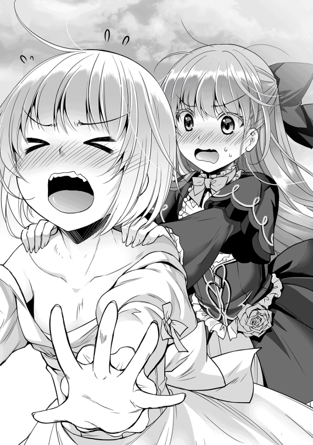
「二人とも、やめろ！」
「兄さま!?」
その時、人ごみの中から、王族の殴り合いに唯一割り込める存在──ミラノの声が響いた。その声に驚いたマリーだったが、セレネはそれ以上に驚いていた。何故なら、ミラノの後ろには、恋焦がれていたアルエの姿があったからだ。
「ねえさまっ！」
「セレネ、どうしてここに!?」
アルエは驚愕してセレネに尋ねたが、その言葉はセレネの耳に入っていない。久しぶりに見た姉は、相変わらず美しく、可憐で、少しも変わっていない。セレネは立ち上がり、最愛の姉に向かって猛然と駆け寄る──つもりだった。
「ひぇっ!?」
マリーと取っ組み合いをしていた事をすっかり忘れていたセレネは、自分のドレスの裾がマリーに掴まれていた事もすっかり忘れていた。その状態で急に立ち上がり、走り出したものだから、セレネは思いっきり前につんのめって転び、顔面を強打して動かなくなった。
「兄さまが出かける前に、セレネに説明しないからいけないのよ！」
「僕は、お前にセレネを止めろと頼んでいない」
「ミラノ様、マリーベル様、お、落ち着いて下さい」
二人の兄妹に落ち着けと言っているアルエ本人も落ち着いてはいなかった。何せ、あれだけ大勢の人間の前にセレネの姿が晒されてしまったのだ。しかも、アルエを見て「ねえさま」とまで叫ぶおまけ付きで。
頭を強打したセレネを見て、ミラノが反射的に近寄って抱きかかえてしまったのも軽率だった。セレネをすぐに休ませ、今後の事を相談出来る場所という事で、最初避けていた寮内にあるアルエの部屋に結局来る羽目になった。幸い、セレネ自身は単に気絶しているだけのようだったので、ミラノ達三人はほっと胸を撫で下ろす。
こうなってしまうと、セレネとアルエの関係を隠しておくわけにもいかず、マリーには、なし崩し的にセレネとアルエが血を分けた姉妹である事を話さざるを得なかった。
図らずも、セレネを民衆の表舞台に出すというミラノとアルエの願いが叶ってしまったわけだが、これを願いが叶ったと言うべきかは正直かなり微妙だった。というか、色々とまずい。
「すまない......今回は完全に僕のミスだ。少し行動が短絡的過ぎたようだ」
「もし他の学生にセレネとの関係を聞かれたら、姉妹のように仲が良かったと言っておきます。幸い、アークイラからヘリファルテに留学しているのは私しかいませんし、誤魔化せると思います」
「アルエ姫、僕の軽率な行動のせいで、余計な負担を掛けて申し訳ない」
「いえ、こちらこそ。セレネがこんなに能動的に動くなんて思いもしませんでした......きっと私と王子が会っている事に嫉妬したのね」
アルエは苦笑する。自分とミラノは男女の関係ではないのだが、セレネはきっと気が気では無かったのだろう。その予想は、ある意味で正解だった。ただし、対象はミラノではなくアルエなのだが。アルエは、セレネが親愛の情を向けてくれている事を嬉しく思っていたが、まさか中身がおっさんで、なおかつ自分に男女の愛を求めているとは、さすがに想像出来なかった。
「まったく、ひどい目にあったわ！ もう、髪がぐしゃぐしゃ。お洋服もボロボロ」
「すまん。さっきは言い過ぎた。お前なりに気を遣ってくれた事には感謝する」
「ま、許してあげるわ」
マリーは乱闘でぼさぼさになった髪を手櫛で直しつつも、まんざらでもない様子だった。
兄からこうして感謝されるのは久しぶりだったし、同い年くらいの友達と心の底から泥だらけになって遊ぶ事など初めてだったからだ。まるで男の子と遊んでいるような気分だった。
「で、私がこれだけ頑張ったんだから、兄さまもきちんと仕事してたんでしょうね？」
「ああ、お前が時間を稼いでくれているうちに、アルエ姫からセレネが好きなものを聞き出す事が出来た」
「それでセレネの好きなものって、何？」
マリーも興味があるようで、身を乗り出すようにミラノの顔を見上げる。
ミラノが口を開く前に、寝息を立てるセレネの手を握っていたアルエが口を開いた。
「それはね、百合よ」
「あーっ！ そっか、そうだった！」
セレネの好みは百合である、その言葉を聞いたマリーが大声で叫ぶ。
「もしかして知っていたのか」
「うん。あの子、前にそんな事を話してた気がする」
それを聞いた瞬間、ミラノは眉間に皺を寄せた。
「......それを早く言ってくれ」
「しょうがないじゃない。だって、ほんとにちょっと話しただけなんだもん」
「あ、あの、あまり大きな声を出すとセレネが起きてしまいます」
再び険悪なムードに入りそうになるヘリファルテの王子と王女を、アルエが控えめに宥めたので、二人はお互い矛を収めた。
「しかし、百合、か。確かに、セレネは薔薇というより白百合という感じだな」
輝く太陽の下で咲き誇る真紅の薔薇より、月下に清らかに咲き誇る白百合がセレネの雰囲気にはよく似合う。そう思いながら、ミラノ達三人は、清潔に整えられたベッドの上、額に白い包帯を巻いて眠るセレネに視線を向けた。午後の日差しから西日へと変わる前の、穏やかな日差しが窓から差し込み、セレネの薄い胸が吐息によって上下するたび、白い髪がきらきらと輝く。
マリーとの戦いで限界以上の出力で動き、とどめに顔面を強打したセレネは、ミラノ達の会話にまるで反応する事なく、一人、すやすやと眠っていた。こうして大人しく目を閉じ、中身を覗かれない限り、セレネは間違いなく傾国の美姫である。
「では早速、街の花屋に手配し、百合の花束を用意するか」
「ふっふっふ、甘いわね兄さま。パンケーキより甘いわっ」
「......どういう事だ？」
ミラノが首を傾げると、マリーはチッチッと人差し指を得意げに振る。
「いい？ 兄さまはヘリファルテの第一王子、聖王子ミラノなのよ？ 兄さま、その辺あんまり自覚してないんじゃない？」
「い、いや、お前の言いたい事がよく分からんのだが......」
「だからぁ、そんじょそこらの男じゃ出来ない事をセレネにしてあげてって言ってるの。『百合が好きだから、百合の花束を買いました！』なんて、そこいらの男でも出来るじゃない。百点満点じゃなく、二百点を目指すの。ね、アルエ姫もそう思うでしょ？」
「え？ わ、私ですか？」
いきなり話題を振られてアルエは目を白黒させたが、少し間を置いて言葉を紡ぐ。
「そうですね。大好きな人から、大好きな物をもらえれば、それだけですごく嬉しいと思います。でも『実はこんなすごい物を用意していたんだ！』って言われたら、もっともっと感動すると思います」
「なるほど......要は好きな物に上乗せで、相乗効果を狙うという訳か」
ミラノは口元に手を当て、真顔でそう答えた。
大陸最高学府である、ヘリファルテ国立大学の入学試験問題をすらすらと解くミラノが、こんな真剣に思索する表情を見たのはマリーですら初めてで、マリーはくすりと笑った。
「話が終わったなら日が暮れる前に帰りましょ。私、今日はいっぱい動いたからおなか空いたわ」
「そうしたいのだが、セレネがな......」
ミラノが再び、ベッドの上に視線を向ける。セレネは図太い神経をフルに発揮し、すぐ横で三人が普通に会話しているのに、まるで気付かず隙だらけで眠りこけていた。
最初は昏倒しているのかと不安だったので、ミラノはセレネを抱きかかえ、大学付属の医師に駆け込んで診察させたのだ。結果、特に大きな怪我はないが、今日はなるべく安静にしておいたほうが良いだろうと診断されたので、揺り起こすという訳にもいかなかった。
「ミラノ王子。その件でお願いがあるのですが。よろしいでしょうか？」
「今日はプライベートで来ているので、あまり畏まらないで下さい。それで、願いとは何でしょう？」
「その......出来ればでよいのですが、今日はセレネをここで預からせていただけないでしょうか？」
「セレネを？」
意外そうに答えたミラノに対し、アルエは懇願するように彼の目をまっすぐに見た。その瞳の奥に何か思いつめた光がある事を、ミラノの洞察力は見逃さなかった。ミラノは遠慮がちなアルエに先を促させる。
「今日一日休ませるという事であれば、このままセレネを移動しないほうが良いと思うのです。それに......」
「それに？」
「私、セレネと一緒に寝た事って無いんです。この子は何年も監禁されていましたし、それ以前は私もまだ子供でした。なので、セレネに配る精神的な余裕が無かったんです。だから......」
アルエは少し涙声になっていた。セレネは幼い頃から異常者扱いされていたので、正常な第一王女のアルエとは、小さいころから距離を取らされていた。さらにセレネが監禁部屋に幽閉されてしまうと本格的に会う機会が減り、数日おきに僅かな時間を過ごす事しか出来なくなってしまった。つまり、二人の姉妹は、お互いを大事に思いながらも共有する時間は極端に少なかったのだ。
「しかし、アルエ姫もお疲れではないのですか。見たところ部屋の整理もあまり進んでいないようですし、うちのマリーのせいで、余計なトラブルまで持ち込んでしまいましたし」
「元はと言えば兄さまのせいでしょ！ 私はむしろサポートしたのよ！」
きゃんきゃん騒ぐマリーを軽く流し、ミラノはアルエに向き合う。
お膳立てが整ってからセレネに会わせる予定だったのに、こちらの不手際のせいで、手順が滅茶苦茶になってしまった。その上、急な留学だったため、寮の中でもあまり広い部屋を用意出来なかったので、アルエが自室でセレネと共に寝ると、ベッドはきつきつになってしまう。
「構いません。私の方からお願いしたいのです。明日、セレネの容態に問題が無ければ私の方から王宮へセレネを送りますので」
そう言って、アルエは深々とミラノに頭を下げた。今のセレネはヘリファルテの王子に権利を委ねられている。つまり、王子の所有物と言ってよい。それを貸してくれと言っているのだから、アルエの立場では厳しい事は自覚している。けれど、この機会を逃せば、次にセレネと会えるのはいつになるか分からない。アルエはドレスの裾をぎゅっと握り、床を見たままミラノの返答を待つ。
「いいんじゃない。その方がセレネも喜ぶでしょ」
「......え？」
ミラノが何か言う前に、ミラノの後ろにいたマリーが、実にあっけらかんとした口調でそう言った。予想外の返答にアルエが思わず頭を上げると、ミラノも柔和な笑みを浮かべて頷いた。
「アルエ姫、むしろこちらからお願いしたいくらいです。セレネは異国にたった一人で来て緊張しています。結果論とはいえ、こうして姉妹が出会えたのです。身内と添い寝出来れば、彼女も大分心安らぐでしょう」
「本当に......よろしいのですか？」
「もちろん。明日の朝、迎えの者を送ります。僕とマリーは今日はこれでお暇させていただきますので」
「あ、ありがとうございます！」
アルエは九十度を越える勢いでミラノに頭を垂れた。ミラノは鷹揚に頷くと、マリーを引き連れてアルエの部屋を出て行こうとした。あまり長居して、これ以上アルエに迷惑を掛けてしまう事は避けたかったのだ。
「それじゃ、セレネの事よろしく頼んだわよ。アルエ姉様」
「あ、アルエ姉様？」
アルエがきょとんとした表情でマリーを見つめると、マリーは悪戯っぽくくすりと笑う。
「だって、私はセレネのお姉さんで、セレネの尊敬するお姉さんがアルエ姫なんでしょ？ だったら、お姉さんのお姉さんじゃない。あ、そうだ兄さま。アルエ姫と結婚したら？ そうすれば私達、本当の家族になれるじゃない」
「馬鹿な事を言うな。申し訳ありませんアルエ姫。妹は見ての通り、あまり落ち着きがないもので。子供の戯言だと思って聞き流してください」
「子供じゃないし！ 戯言じゃないし！」
「では、我々はそろそろ帰らせていただきます。本日は急な申し出を受けていただき、まことに感謝しております。それと、百合に関しては少し心当たりがありますので、少々準備に時間をいただきたい。セレネが百合好きなら、きっと喜んでくれるでしょう」
そう言い残し、ミラノはマリーを引き連れてアルエの部屋を出て行った。
後に残されたのは、爆睡しているセレネと、感動して目を赤くするアルエの二人だけだ。
「ミラノ王子......本当に、本当にありがとうございます！」
自分のような小国の姫に対し、尊大に振る舞わず、あれだけ気を遣ってくれる者はそうはいない。彼が去り、ドアを閉めた後も、アルエはその方向に長い間お辞儀をしていた。彼は確かに聖王子と呼ばれる逸材だ。そして、彼に任せておけばセレネは、誰よりも幸せになれるだろう。そう考えると、アルエの目尻には熱い物がこみ上げてくるのだった。
「......ぅう？」
「あら、目が覚めた？ セレネ」
セレネが目覚めた頃には既に陽は落ち、窓の外には満月が浮かんでいた。ベッド脇の木製の机の上に置かれた燭台に火が燈され、小さいながらも温かな光が狭い部屋と、そこに詰められた荷物を包み込む。その穏やかな雰囲気の中、セレネは、いつもと違うほのかな甘い香りのするベッドから、もぞもぞと這い出した。
「ねえさま、だいじょうぶ？」
「え？ 別に大丈夫よ」
大破してしまった純白のドレスに代わり、アルエ用の白い寝巻きに着替えさせられたセレネは、だぶだぶの服を引き摺りながらアルエに抱きつく。そして、開口一番にアルエの身を案ずる言葉を口にした。
大丈夫と言ったものの、セレネが眠っている間もアルエは机の上で、編入の手続きの書類を整理したり、それ以外の荷物を整理したりとかなり忙しく、疲労も蓄積していた。その辺りを一瞬で見抜く辺り、やはり妹は観察眼に優れているなとアルエは考えた。
「大丈夫よ。セレネは心配性ね」
「よかった......」
セレネは本当に安堵しているようで、心優しい妹の気遣いにアルエは癒された。セレネと離れてまだそれほど時間は経っていないのだが、いつも自分の身を心配してくれる妹が、大国に移り住んでも傲慢にならず、変わらぬ純粋さを持ってくれている事に、アルエはとても誇らしい気持ちになる。
セレネが大丈夫かと尋ねたのは主に性的な意味でなのだが、自分の電光石火の行動により、王子の魔の手が伸びる前に何とかアルエの貞操を守れた事に対し、セレネの心も満たされ、姉妹の姫は満足そうに笑いあった。
「セレネこそ体調はどう？ 頭打ったけど大丈夫？ 気持ち悪くない？」
「へいき」
セレネは久々のアルエとの対面で、脳内麻薬がドバドバ出ていたので、この程度のダメージなど屁でもない。ちなみに頭は打つ前から大丈夫ではなく、さらに気持ちも悪いのだが、それは生まれつきなのでどうしようもない。
「セレネは今日怪我をしちゃったから、私が明日まで預かる事になったの。だから、今日は一緒に寝ましょうね」
「ほんと!?」
「ええ、でも、二人だとベッドがかなり狭くなっちゃうけど......」
「いい！ すごく、いい！」
セレネは興奮した。大興奮した。ベッドが狭ければ狭いほど、姉との密着度が上がるのだから無理もない。
「ねる！ いますぐ、ねる！」
「え、でもまだ私、やる事が......」
「ねえさま、おうじ、あいて、たいへん。すぐ、やすむ」
セレネは両手でアルエの手をぐいぐい引っ張り、ベッドに寝ろとせがむ。アルエは、セレネの心遣いを微笑ましく思いながら、今日は作業を切り上げて眠る事にした。セレネとしては、アルエがあの王子の相手で疲れているだろうという気遣いもあったが、それ以上に、姉と過ごせる明日までの貴重な時間を、一秒でも長く過ごしたいというのが本音だった。
そうして、アルエは寝巻き用の薄いローブに着替えると、セレネの待つベッドへと潜り込んだ。アルエとセレネは二人とも小柄であったが、並んで寝るとさすがに少し窮屈だ。
「セレネ、本当に大丈夫？ お姉ちゃん、別の場所で寝ても......」
「ダメ！ ぜったい！」
セレネは強い語調でそう言うと、両手でアルエに抱きついた。ついでにどさくさに紛れて、姉の胸元に顔を埋めた。ヘリファルテ女王のアイビスもなかなかの逸材であったが、やはりセレネにとっての桃源郷はここにあった。
「もも」
「桃？」
アルエの問いに答える事はなく、セレネは満たされた表情で、マシュマロのようにふにふにと柔らかく、それでいて張りのある地上最高の感触を顔中で堪能していた。アルエはまるで子猫のように擦り寄ってくるセレネの頭を包むように、そっと抱きしめる。
今まで殆ど構ってやれなかったのに、こうまで自分を慕ってくれる妹を、アルエは愛おしく感じていた。
「セレネ、ヘリファルテではうまく過ごせてる？ お昼にミラノ王子から伺ったけど、随分頑張ってるみたいね」
アルエはあやすような口調で妹を褒めた。しかし、その言葉を聞いた途端、胸の中でもぞもぞ動いていたセレネが、悲しげな表情で自分を見上げてきたので、アルエは困惑した。二人の顔が密着し、お互いの吐息が感じられるほどの距離で、セレネが目を逸らしながら口を開く。
「ごめん、うまく、できない」
「え？」
セレネはそう呟いたが、昼にミラノ王子から聞いた話では、セレネは八歳とは思えないほどにヘリファルテに貢献していると言っていた。にもかかわらず、セレネは自分を不甲斐無いと思っているらしい。
（きっと、目指す場所が違うのね......）
アルエはセレネの発言を謙遜と取った。ミラノから聞いただけでも、セレネは現時点でかなりの功績を収めている。王子の健康管理、それに伴った兵士の練度強化、さらにヴァルベールでの外交の潤滑油としての役割まで果たしたのだとか。特に、王子はセレネとの憩いの食事にかなり感謝しているようで、そのために今日来たとも言っていた。
多分、セレネの『うまくできない』と、普通の人間の『うまくできない』とでは、要求するレベルが違うのだ。刀鍛冶が『今日の物は出来が悪い』と言ったとして、熟練の職人と新人では、言葉の重みも精度の基準もまるで違うようなものだ。
「......セレネ、アークイラでの最後の夜を覚えているかしら」
「なに？」
「ほら、『わたし、がんばる、まもるから』って言ってたの、忘れちゃったかな」
「おぼえてる」
そう、あの別れの日、確かに自分は『アルエを頑張って守る』と誓ったのだ。だからこそ、諸悪の根源である王子を亡き者にしようとセレネなりに頑張ってきたが、現状ではあまりうまく行っていない。セレネはそれを嘆いていた。
「セレネは頑張っているわ。あなたはまだ小さいから、思ったようにいかない事も多いかもしれない。けど、ずっと挑戦し続ければ、セレネはきっと誰かを守れる立派な淑女になれるわ。お姉ちゃん、そう信じてる」
「ねえさま......」
結局、アルエは妹を月並みな言葉で鼓舞する事にした。いや、それしか出来なかった。凡才の自分に出来る事は、『敬愛するミラノ王子を守りたい』と奮闘する妹を信じ、応援してやるくらいしか出来ないのだから。
セレネが守りたいと思っているのはアルエなのだが、当のアルエからしてみれば、救世主であり、淡い思いを抱いているミラノ王子を守れる存在になりたいと願っている、そう考えるのが自然だった。同時に、妹の思い人を口に出すほどアルエは野暮ではなかった。
「うん、わたし、がんばる！」
「いい子ね。さ、今日はもう寝ましょう。それで、明日からまた元気なセレネに戻ってね」
「元気で、王子、会いにいく」
「それがいいわ。じゃあ、おやすみなさい」
しょげていたセレネが再び元気を取り戻すのを見て、アルエはそっとセレネの柔らかな白い髪を撫でた。その直後、連日の疲労が蓄積していたアルエは、そのまますぐに寝入ってしまった。
しかし、それとは逆に、先ほどまで寝ていたセレネの目は爛々と輝き、再び王子に対する闘志が燃えてくるのを感じていた。
「わたし、ばかだった」
セレネは口惜しさに歯噛みした。アルエは自分を信じ、性王子から自分を守れる存在になってくれと言ってくれている。だというのに、ここ数日、自分は何をしていたのか。ふて腐れ、日課をサボり、王子暗殺計画をまるで進めていないではないか。確かに貴重な薬物を没収されたのはショックだったが、それが一体何だというのだ。千里の道も一歩からと言うではないか。
自分は何としてでも王子を再起不能にし、アルエと結ばれなければならないのだ。そのために明日からまた元気なセレネに戻り、一所懸命王子を殺さないとならない。立ち止まっている暇など自分にはないのだ。セレネは己の馬鹿さ加減を恥じた。
「あした、ほんき、だす」
そうだ。明日からまた殺人弁当を再開しよう。アルエを守るため。王子を倒すため。己の愚かさを反省し、もう一度初心に帰るのだ。そう決意し、セレネはアルエの胸に再び顔を埋める。明日からまた過酷な戦いが始まる。だから、今だけはこの安らぎを、桃源郷を守るために戦士の休息を。
──などと大義名分を適当にでっち上げ、セレネは心ゆくまでおっぱいを揉み続けた（よかったね）。
「うむむ......姫が帰らん！ 一体何があったというのだ。鼠の密偵を出すべきか？ いや、しかしミラノ王子達は特に騒いでいないのだから問題は無いと考えるべきか......それに、待機をしろと命令されたのだから従うべきか......だが姫の身に何かあったら......！ うおおーっ！ 一体どうすればっ！」
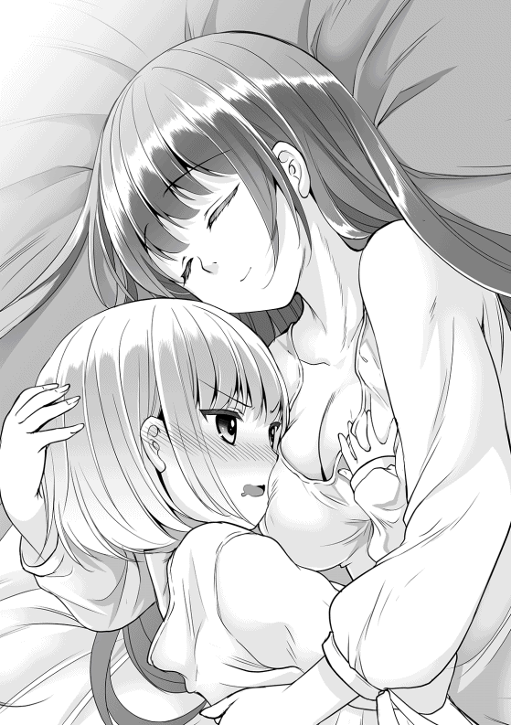
セレネとアルエが穏やかな寝息を立て始めた頃、セレネの自室で、バトラーは落ち着き無く歩き回っていた。主の命令を無視してでも探しにいくべきか、それとも、命令は命令として遵守すべきか、翌朝、セレネが帰還するまでの間、バトラーは一晩中、こうして答えのない自問自答を繰り返したのだった。
セレネの道場破り──もとい大学破りから二週間が経過し、マリーとの乱闘でボロボロになったドレスが修繕されるのと同時進行で、セレネとミラノの関係も、表向きは平穏を取り戻した。
ミラノと仲良く昼を過ごすセレネが、ここ最近姿を見せなかった理由を兵士達は知らず、セレネが体調を崩しているのだと思い込んでいた。なのでセレネが久々に姿を現すと、皆が心から祝福し、その和やかな雰囲気に便乗し、どさくさに紛れてクマハチは兵士達に多少きつめの訓練を強いたりしていた。
「王子、あげる」
「ああ、いつも済まないな」
いつの間にかミラノとセレネの休憩場所と決まった木陰の下に二人で座り、ミラノの傍ら、セレネは肉と野菜を大量に挟んだサンドイッチを取り出した。
「これ、たべやすい」
「ではいただこう」
まだ完全に機嫌を直していないだろうが、それでもこうして食事を用意し、さらに修練の邪魔にならないよう、短時間で食べられる物を用意してくれるセレネに対し、ミラノは何とも満ち足りた気持ちになった。セレネとしては、いちいち料理を小分けに作るのが面倒になったので、全部纏めて食わせるという効率化を狙っただけなのだが。
ミラノはセレネの用意した、やたらボリュームのあるサンドイッチを平らげると、満足げに目を細めた。久々に味わうセレネの料理が美味かったのもあるが、そろそろ用意していた準備が終わるのだ。今度は自分がセレネを喜ばせてやる事が出来る。そう思いながら、ミラノは口を開く。
「実は、セレネに少し頼みたい事があってな」
「なに？ ごはん？」
「違う。今度の週末から数日間出かけようと思うのだが、それにセレネも同伴して欲しいのだ」
「ぇー......」
セレネは露骨に嫌そうな顔をしたが、ミラノはまるで意に介していない。セレネとしては断りたかったのだが、下手に王子の機嫌を損ねるのはあまり賢い選択では無いし、なるべくなら自分が監視出来る場所にいた方が良いだろう。そう判断し、ミラノの意図を探ろうとする。
「どこ？ ばるべーる？」
「いや、今回はただの物見遊山さ。だが、お前もきっと気に入ると思うぞ」
ミラノは白い歯を輝かせ、腹立たしいほど爽やかな笑みをセレネに投げ掛けた。通常の女性なら頬を赤らめていただろうが、セレネは若干イラっとしただけだった。
セレネがあまり外に出たがらず、単なる外出で喜ぶ事は無いのはミラノも理解していたが、今はセレネを驚かすために黙っていなければならない。ミラノにとってその感覚がもどかしくもあり、同時に楽しみでもあった。自分のプレゼントに対し、セレネは一体どんな反応をするだろうか、彼にしては珍しく、子供っぽい悪戯心が湧いていた。
そうして週末になると、やたらと上機嫌なミラノと対照的に、テンションだだ下がりのセレネは再びドナドナされる事になった。アークイラのドナドナと違うのは、セレネ用の馬車が用意されていた事だ。完全にセレネ個人のために作られた、全体的に丸みを帯びた白い馬車で、とても柔らかい雰囲気を醸し出している。外を覗く事が出来る小窓が脇に付けられているが、日差しにあまり強くないセレネのために、全面に遮光カーテンも引かれていた。
内装もとても馬車とは思えないほど凝っており、ヘリファルテの高級宿に負けない豪奢な作りだ。肌触りの良い絨毯に、小型のベッドまで置かれている。とはいえ、汚いドナドナが綺麗なドナドナになっても荷馬車に乗せて売られていく事は変わらないので、セレネはベッドがある以外、特に何とも思わなかったのだが。
今回の旅行とやらには、ヴァルベールに向かった顔見知りの従者に加え、護衛役としてクマハチも付いてくるらしい。当然、いつもの如くバトラーもこっそり乗り込んでいるので、馬車の中でセレネはバトラーに話しかけた。
「バトラー、たび、知ってる？」
『行き先でござますか？ いや、生憎私も存じ上げませんな』
「そっか」
本当はバトラーは行き先を知っていたが、ミラノ達の目論見を既に知っていたので、主を喜ばせるために敢えて知らないふりをしていた。そのまま三日間ほど馬車に揺られていたセレネだったが、ついに我慢出来ず、クマハチに尋ねる事にした。
「クマ、クマ」
「ん？ どうしたでござる？」
セレネは馬車の窓枠から顔を出し、馬車の横にぴったりと寄り添う、馬に跨ったクマハチに声を掛けた。
「これ、どこ、行く？」
「北に向かっているのでござる」
「きた？ なんで？」
「さあ、それは王子のみ知る、でござるよ」
クマハチはおどけたようにそう答えたが、逆にセレネの表情は曇った。以前、クマハチは、大陸の北側は人間があまり立ち寄れない場所だと言っていた。先日、マリーをなぎ倒して大学へ殴りこんだ事に激怒した王子が、旅行と称し、自分を危険な森に捨てに行くのではないか。自分の立場から言っても、そうされても全くおかしくない。
セレネが不安にしている事を察したクマハチは、馬の横腹を蹴り、前に進んでいるミラノの馬車へと近づいていった。
「王子、そろそろ告げてもよいのでは？ セレネ殿、大分不安がっているようでござる」
「確かに、あまり引き延ばすのも可哀想だな。一度馬車を止めてくれ」
ミラノが御者に馬車を止めるよう指示すると、後ろに追従していたセレネの馬車も同時に止まる。ミラノはそのまま自分の馬車から降り、セレネの馬車へと足をかけ、乗り込んだ。突然の王子の侵入にセレネは思わず身構えたが、ミラノは警戒を解くように笑みを浮かべた。
「セレネ、今向かっている場所は怖い場所ではない。そんなに身構えるな」
「うそだ！」
ミラノに対する信頼感ゼロなセレネは、速攻で王子の言葉を否定した。そもそも、こいつのせいでアークイラの楽園を追放されたのだ。ヴァルベールに連行された時も、良かった事は軟骨のからあげが食えた事と、エンテ姫に出会えたくらいだ。ミラノは肩をすくめながら、毛を逆立てる子猫をあやすように説明する。
「今向かっている場所は、『百合の花園』だ」
「ゆりのはなぞの!?」
セレネの緊張した面持ちが、急にきょとんとした表情に変化するのを見て、ミラノは思わず噴き出しそうになった。疑っていたわけではなかったが、セレネにとって百合という言葉が、ここまで効果てきめんだとは思わなかったのだ。
「ああ、大陸の北側、白森のすぐ手前に、それは見事な百合の花園があるのだ。その美しさは、まるで楽園と見間違える程らしいぞ。セレネにはヴァルベールで貢献してもらったし、日ごろの礼と、気晴らしの小旅行をと思ってな」
「ゆり、らくえん......」
セレネはミラノの言葉を反芻するように呟くと。ぱっと表情を輝かせた。セレネがほくそ笑む──他者から見ると柔らかく微笑んでいるのを見た事は多々あったが、こんなに晴れやかに笑うセレネの顔を見たのは、ミラノもクマハチも初めてだった。
「ばんざーい！」
「ば、ばんざーい？」
馬車のベッドの上で、セレネが幌の天井に手が付くほどに飛び上がって万歳をすると、思わずミラノと、外から覗いていたクマハチも釣られて万歳をしてしまった。そのくらいセレネは喜色満面であった。セレネにとって『百合の花園』という言葉は劇薬なのだ。
セレネの脳内辞書はだいたいの場合において、卑猥な単語を優先する傾向がある。たとえば『ちち』という単語をセレネ辞書に打ち込むと、『父』ではなく『乳』のほうが変換候補の上位に現れるのだ。なので、百合といえば女性同士の百合が優先されるのは、セレネにとっては至極当たり前であった。
その日を境に、セレネは急速に機嫌を直していった。今までも、物憂げに頬杖を付く姿は深窓の令嬢というべき静かな美しさがあったが、今のセレネは全身から生命力が溢れ出んばかりで、まるで春の訪れに舞い喜ぶ蝶のようであった。
ミラノの言う百合の花園は、ヘリファルテの王都からかなり北上、白森に極めて近い区域にあり、到着まで馬車で一週間ほど掛かるらしい。白森は人間達にとってほぼ未開の土地であり、その付近を訪れる者は極めて限られているため宿泊施設などはなく、平地で野宿という状態なのだが、セレネは全く文句は言わなかった。
今回はあくまでセレネを喜ばせる観光目的のため物々しい武装はせず、ミラノ達は最低限の従者を引き連れ、暖かな陽光の中、新緑が芽吹く大地をのんびりと踏みしめていった。
「ゆりのはなぞの♪ ゆりのはなぞの♪」
急ぐ旅ではないので、皆は散歩気分でゆったりと進んでいるのだが、小休止のために馬車を止めるたび、セレネはベッドの上で奇妙なダンスを踊ったり、ぐるぐると回転し、そのまま目を回して吐いたりしていた。
「しかし、ここまで効果があるとは思わなかったな。クマハチ、付き合わせて済まないな」
「なに、拙者もちょうど羽を休めたいと思っていたところでござる。いつも王子のお守りばかりさせられているのだから、たまには美しい姫の護衛も悪くないでござるよ」
ミラノとクマハチは食事係の用意した軽食を食べながら、白いドレスの裾をたなびかせてはしゃぐセレネを眺めていた。そのセレネはというと、にこにこと笑みを浮かべ、息を弾ませながら鼻歌を歌っていた。
「ら、ら〜ら、らっき〜、らっき〜、らっき〜す〜け〜べ〜♪」
こんな感じで、セレネは調子っぱずれな口調で、わけの分からない歌を口ずさんでいた。
大陸一の権力者が後宮を持っていないはずがない。少なくともセレネの中では権力者は全員ハーレムを持ち、酒池肉林の宴を開いているという間違った常識があった。
今のセレネは幼女の肉体であり、昔に比べて食べられる量も、力も遥かに劣るがメリットもある。百合の花園に着いたら、マッサージをするふりをして、女性の肩や色々なところを揉んだり出来るかもしれない。幼女の体だからこそ出来る離れ業である。
そう、今のセレネは前世と違い、生まれてから死に至るまで、一度も起こらなかった神スキル『ラッキースケベ』を狙って発動させる事が可能なのだ！
大陸中を駆け回って嫁を探すような性王子が抱える百合の花園。それは一体どれほど美しい乙女の園なのだろう。もちろん、セレネにとっての永遠の天使がアルエである事に変わりは無いが、楽園と呼ばれるほどの美しい光景を見られると思うと、やはり心が弾むものだ。
そんな邪な考えに脳を支配されている今のセレネには、この世の全てが黄金の輝きを放っているように見えた。人はクスリの力に頼らずとも、脳内物質だけでトリップする事が出来るのだ。
そうして再び休憩の時間となると、暴れ疲れたセレネは馬車から出て、新鮮な空気を吸おうと草むらにごろりと横たわった。そのまま、真紅の瞳でどこまでも澄み渡る青空を眺めていると、毎度おなじみの赤竜が、ゆったりと空を飛んでいくのが見えた。
正直な話、セレネとしては竜はもうどうでもいい存在だった。最初に見た時は衝撃だったが、何回も見ていれば飽きる。コアラやパンダを見て楽しいのは、動物園という限られた場所でしか見られないレアな動物だからであって、もう何度も目にした世界の支配者は、今のセレネにとって、スズメやカラスと同程度の扱いだった。
「おーい！ おーい！」
しかし、今日のセレネは一味違う。いつもはスルーしていた赤竜に対し、大声で手を振った。この多幸感を誰かと共有したかったのだ。赤竜は、別段セレネに特別な反応を示す事は無かったが、一瞬だけこちらに目を向け、そのまま空中を旋回し、白森のさらに北──竜峰と呼ばれる場所へ飛び去っていった。
「セレネ、そろそろ出発だ。戻ってこい」
「はーい！」
セレネは不気味なほど素直に従い、大人しく馬車へと乗り込み、ベッドの枕元のウサギのぬいぐるみにボディプレスをする勢いで飛び込んだ。本番のために、今は体力を温存しておかねばならない。ちなみにこのウサギのぬいぐるみは、ミラノが内装ついでに用意させた物だが、もっぱらバトラーのベッド代わりに使用されている。
天候にも恵まれ、大きなトラブルもなく、うららかな日差しの下、ミラノとクマハチ率いるセレネ観光ツアーの面々は、目的地へと順調に足を進めていた。到着まで残り半日を切る頃になると、セレネは唐突に馬車の外が見える場所を全てシーツで覆い隠した。
「どうした？ 眩しいでござるか？」
「たのしみ、とっておく」
セレネは弾む声でそう言うと、ベッドの上でわくわくとその時を待ち続けた。基本的にセレネは引きこもりなので、ただ馬車に乗って移動しているだけでも結構疲れたし、セレネはとにかく寝るのが好きな人間だったので、ベッドに潜り込むとすぐに眠りに落ちていった。目が覚めた頃には、きっと素晴らしい景色が広がっているに違いない。そう信じて。
そうして到着した場所には、一面を覆いつくす白百合と、それを彩るように多種多様な色合いの花が咲き誇る、それはそれは風光明媚な場所だった。その中心には、磨き抜かれた鏡のように静かな水面を湛える泉があり、ミラノ達は皆、その情景の美しさに言葉を失った。
「おお......これは想像以上でござるな。拙者、草花にあまり興味は無いが、いやはや、これは見事でござる」
「僕も実際に来たのは初めてだが......聞いた通り。いや、それ以上の場所だ。マリーやアルエ姫も連れてくればよかったな」
人間が管理する庭園ではとても作る事の出来ない偉大なる自然の美──確かな百合の花園がここにあった。さて、ミラノ達がセレネの方を振り向くと、セレネはまるで石像のように固まっていた。
「............なに、これ？」
「何と言われても......見ての通り、百合の花園だが」
セレネは放心したようにふらふらと歩いていくと、おもむろに花畑にダイブした。
「うわああああああああああああああああああっっ!!」
そのままセレネは全身草まみれになりながら、七転八倒した。
「うわああああああああああああああああああっっ!!」
騙された。そう理解したセレネはたまらず花畑に飛び込み、全身草まみれになりながら七転八倒した。ミラノが、そして馬車の隙間から様子を伺っていたバトラーが、今まで見た事のないセレネの狂乱っぷりに目を丸くする。
「セレネ、ど、どうした!?」
ミラノが慌てて一歩踏み出そうとすると、不意にミラノの肩にクマハチがぽん、と手を置いた。
「王子、折角セレネ殿が楽しんでいるのに、水を差すような真似をする必要もあるまい」
「む......」
クマハチの言葉に、ミラノは改めてセレネにじっと目をやる。
相変わらずセレネは何事かを叫びながら、花畑の上を激しく転がっていた。
突然のセレネの行動には驚いたが、言われてみれば、体中で喜びを表現しているようにも見える。まるで抑えきれない感情をそのまま吐き出しているようだ。
「そうだな、僕は、まだまだセレネに対する理解が足りないな」
ミラノは軽く笑った。そうだ、あの子はあまり言葉が喋れない。自分の思いを表現するために、言語を使う事が出来ないのだ。だから、彼女は言葉ではなく全身で感情を表現する事が多い。
先日、セレネに言伝せずに一人で大学へ向かった時もそうだったし、ヴァルベールで急に抱きかかえた時も、機嫌を損ねて激しく頬を打たれたものだ。
「しばらくは好きにさせておくほうが、セレネ殿のためでござるよ」
「ああ、思う存分楽しませてやろう。そのために連れてきたのだからな」
『姫があのように喜ぶのを見られて、このバトラーは、バトラーは......感無量でございます』
男二人だけではなく、馬車の片隅から見守っていたバトラーも、瞳に浮かぶ涙を己の前足で拭った。あの掃き溜めのような監禁部屋で過ごしていた主が、虹を敷き詰めたような花園で、元気一杯に戯れる姿を見られたのだ。それは、彼が何よりも望んだ光景だった。
「ぢぎじょおぉぉ......」
で、そのセレネはというと、激情に身を任せ、制御装置が壊れた芝刈り機の如く草花の上を暴れ回っていたが、やがて体力を使い果たし、ぜえぜえと息を吐きながら突っ伏した。
あの野郎、騙しやがった。何が百合の花園だ。これは百合の花園じゃないか。セレネは意味不明な言い回しで悪態を吐きながら、屈辱に打ち震え下草を握り締める。期待が大きかっただけに、落胆っぷりも半端ではなかった。
落ち着け、落ち着くんだセレネ＝アークイラ。七転八倒を七転び八起きに昇華させるのだ。セレネは元から少ない理性をなんとか総動員し、自分にそう言い聞かせる。
そうだ、ここは発想を逆転させるのだ。女性の楽園を見に来たのではなく、観光に来たと思えばいい。見ての通り、地平線まで広がる緑と空の青、白百合をメインとした、とても言い尽くせない自然の楽園は、間違いなく絶景と言ってよい場所だ。そう考えると、幾分気分が落ち着いた。観光だと思えばいいも何も、セレネ以外は全員そのつもりだったのだが。
精神統一が終わると、セレネは服や髪に絡みついた草を払いながら、澄ました表情でミラノの元へと戻っていった。
「どうした？ ここは城の中ではないのだから、もっと好きにはしゃいでも構わないぞ？」
「はしゃいでない」
「ふふ、セレネ、頬が赤いぞ？」
湧き上がる憤怒の炎を抑えていたセレネの頬は、すっかり紅潮していた。彼女は全身が新雪のような肌をしているので、興奮するとすぐに頬が桃色に染まる。セレネは普段、淑女として扱われたがっている。そんな彼女が、歳相応にはしゃいでいる姿を見られ、照れているとミラノは解釈し、大人として背伸びしようとするセレネに対し何とも微笑ましく思い、笑みを浮かべた。
「ほっといて！」
その笑顔を挑発と取ったセレネは、反射的に怒鳴っていたが、照れ隠しだと思っていたミラノは肩をすくめただけだった。セレネは顎めがけてカエル跳びアッパーをかましてやろうかと思ったが、ぎりぎりで堪える事に成功した。ここで激昂して王子に襲い掛かり、姉に被害が及ぶような事態は避けねばならない。
「あっち、みる」
「そうか。我々はキャンプの準備をせねばならないが、あまり遠くへ行かないようにな」
「わかった」
セレネは精一杯の作り笑いでそう言うと、花園の中心にある泉のほとりへと駆け出していった。表面上は怒っているように見えても、やはり一刻も早く草花と戯れたいのだろう。その意向を汲み、ミラノは彼女の自由行動を許可した。単にセレネは、これ以上ミラノの前で愛想笑いをしている余裕が無かったので、一刻も早く離れたかっただけだった。
「クマハチ」
「御意」
ミラノが短く促すと、クマハチは腰に刀を差し直し、セレネの後をつけていった。いくら美しい場所でも、ここは人が住む領域ではない。白森という、エルフや未知の生物が棲む場所に極めて近い位置なのだ。いつ、どこから危険が襲い掛かってくるか分からない。その危機に備え、クマハチは護衛として同行しているのだ。
セレネに圧迫感を与えず、すぐに対応出来る絶妙な距離を保ちつつ、クマハチは何でもない風を装って佇んでいる。セレネは全く気付かず、真っ直ぐに花畑を通り過ぎ、泉のほとりで立ち止まった。そして、不意に落ちていた木の枝を拾うと、地面をなぞるように線を引き出した。
（絵でも描いているのでござろうか？）
クマハチはセレネの微笑ましいお絵かきタイムを目を細めて眺めていたが、鬱々とした気分のセレネは、泉の近くのアリの巣に水を引き込み、一網打尽にしようとしていただけだった。
「......むなしい」
泉からアリの巣まで微妙に距離があったのと、こんな事に労力を費やす事が馬鹿らしくなり、数分でセレネは棒切れを投げ捨て、そのまま近くの草むらに転がった。こうしてアリ達の平和は守られた。
セレネはぼんやりと大の字で草花のベッドに横たわる。大自然のゆりかごと言えば聞こえはいいが、所詮やはり草むらである。寝転がっていると、わけの分からない羽虫やダンゴ虫などが服の隙間やら顔やらに登ってきて、不快指数がモリモリと上がっていく。寝るのはやはりベッドに限る。
「はぁ......」
心の中に暴風雨が吹き荒れているセレネとは真逆、突き抜けるような青空と白雲を見上げながら、セレネはため息をついた。空の中心には太陽が、暖かな恵みを惜しげなく緑の大地に降り注がせ、真っ白なセレネの身体はその光に包まれて一層輝き、離れて見ているクマハチには、さながら春の妖精のように思えるほどだった。
「まぶしい」
目が痛くなるほどの強い日差しに、セレネは思わず顔を顰める。魔力を編み込んだドレスを着ているとはいえ、基本的にセレネの身体は日光にあまり強くはない。輝く日差しは健康、健全、希望の象徴としてよく表現に使われるが、セレネからしてみると殺人光線だ。
こんな健康的な場所に長居してしまったら不健康になってしまう。どうしてこんな事になってしまったのだろう。セレネはふと、故郷のアークイラを思い出していた。
あの地獄はセレネにとって天国だった。出不精のセレネにとって、外に出られない事はちっとも苦痛ではなかった。食事も王族にしては粗食も粗食だったのだろうが、牛丼ばかり食っていた過去世に比べ、随分と健康的だった。
庭弄りも楽しかった。アークイラではよぼよぼの庭師の爺さん一人しかおらず、ずさんな管理しかしていなかった。それに便乗し、セレネも森の中で、好き勝手にわけの分からない奇妙な植物を栽培出来た。
もしかしたら、シュバーン王に頼めば少しはやらせてもらえるかもしれないが、大国だけあって一流の庭師が何人も揃っている。ど素人の自分がやったところで、晒し物になるだけだろう。
一番つらいのは、大好きな姉と会えなくなった事だ。以前は二、三日に一回は会う事が出来たのに、今ではろくに会う事も出来ない。
沈んだ表情のまま、セレネが半身を起こし後方を振り向くと、テントを張ったり、簡素な竈などを作る従者達の姿が見えた。指示を出しているのはミラノらしく、彼らは和気藹々で実に楽しそうな雰囲気を醸し出していた。
「うぅ、いやだぁ」
セレネは両手で頭を抱えた。あの爽やかスポーツマンっぽい集団と、あと何日も一緒に寝泊りすると考えると吐き気がこみ上げてくる。なんというか、修学旅行や体育祭で、全く気の合わない体育会系のグループに、数合わせで無理矢理放り込まれたような気分だった。
「かえりたい......」
百合の花園の期待は踏み躙られ、リア充集団のキャンプに強制参加。さらに微妙にホームシックになったセレネは涙目で空を仰いだ。こんな事になると分かっていれば絶対に来なかった。アークイラは無理だろうが、今すぐヘリファルテの自室に帰り、十五時間くらい眠りたい。
その時、はるか彼方から、件の赤い竜が飛んでくるのが見えた。どうも毎日同じルートを通っているようで、朝日と共に南方へと飛んで行き、午後を過ぎると北へと帰っていくらしい。
「りゅう、いいな......」
セレネはぽつりとそう呟いた。竜なら大陸中を自由に飛び回り、どこへだって行けるのだろう。そう考えると、無性に腹立たしい気持ちになってきた。竜はいいよなフリーダムで。セレネも色々な意味で相当フリーダムなのだが、自分の事は完全に棚に上げていた。
もしも自分が竜を使役する事が出来たなら、王都にいるアルエを連れ、誰も知らない土地を目指し、二人の愛の逃避行へと旅立てるのに。
そんな現実逃避をしてもどうなるものでもない。セレネは頭を振り、彼女にしては比較的早く現実に戻った。それと同時に、少し離れた場所にクマハチがいる事に気が付いた。セレネがじっとクマハチを見つめると、クマハチは慌てて目を逸らした。あくまでクマハチは緊急時の護衛なので、セレネの時間を邪魔してはいけないと考えていたからだ。
セレネからすると、クマハチは見てくれの悪い、ぼっちなおっさんである。クマハチもあの集団に溶け込めず、距離を置きたいのだろう。『セレネちゃんと話したいけど、話すきっかけがないし......』という感じで微妙な距離を保っている、剣だけが取り柄の、女の扱いに慣れない朴念仁。そしてその気持ちは、セレネには痛いほど理解出来た。ちなみにクマハチはぼっちでもおっさんでもないし、幼女趣味も無い。
「しかたない、おあいて、いたす」
セレネ的には『もう！ クマハチは私がいないと本当にダメなんだから！』などと言った感じで、同情がてら付き合ってやる事にした。余計なお世話である。
今の肉体が幼女でも、おっさん同士通じ合うものがあるかもしれない。少なくとも、あの爽やかノンフライな集団より、クマハチと会話しているほうが精神的に安定しそうだ、セレネはそう考え、立ち上がろうとする。
『娘よ、帰りたいか？』
立ち上がった途端、セレネの耳元に重々しい声が響いた。セレネはただでさえ大きな紅い目を見開き、辺りを見回すが、それらしき人影は何も無い。
「だれ？ どこ？」
『上を見るがよい。我だ、我が貴様に話しかけているのだ』
言われるがままにセレネが上を向くと、先ほどの赤竜が、羽ばたきながら静止していた。その様は、生物が飛んでいるというよりは、まるで巨大な岩が浮いているようにも見えた。クマハチも聞こえているのかとセレネは後ろを振り向いたが、彼は若干警戒して見上げているだけで、それ以上は特に何の反応も示していない。
『お前の魔力の波長に合わせている。我の言葉はお前以外には聞こえないし、お前の言葉も周りには聞こえぬ。恐れる事は無い。思う存分、貴様の心情を吐露するがよい』
「はぁ」
セレネは気の抜けた返事をした。鼠が喋る世界なのだから、別に竜が喋っても不思議はないなと、妙に納得していた。だが、竜が話しかけてきた事など今まで一度も無かったので、セレネは意味が分からず、きょとんと首を傾げた。
『娘よ、お前の言葉、我にも聞こえたぞ。帰りたい、そう言っていたが間違いないな？』
竜は相変わらず仰々しい口調で、確認するようにそう尋ねた。セレネとしては、そりゃあ帰れるものなら帰りたい。今すぐ帰り、美味しいおやつにほかほかご飯を食べ、あったかい布団で眠りたい。
「うん、かえりたい」
『そうか......』
しばしの静寂の後、竜は鷹揚に頷いた。
『ならば連れ帰ってやろう。お前の故郷に』
「え......？ あ、ちょ!?」
言うが早いか、赤竜は目にも留まらぬ急降下で、地響きを鳴り響かせ、その巨体をセレネの前に降臨させた。
セレネの前に舞い降りた赤竜は、近くで見ると本当に巨大だった。ゾウとは比べ物にならないほどの巨躯は、真紅の盾のような光沢のある巨大な鱗でびっしりと覆われている。石柱のような太い四肢とコウモリのような皮膜の翼、太く長い尾、二本の黒い角からは、絶対的な強者の威厳が満ち溢れていた。
「ぬわーーーーーーーっ！」
そして赤竜は、尻餅をついていたセレネを即座に掴んだ。小柄なセレネの身体は、竜の手という檻にすっぽりと囚われた。
「狼藉者め！ セレネ殿を離せっ！」
セレネが捕まるや否や、クマハチは圧倒的な竜の威圧にも怯まず、凄まじい勢いで迎撃を試みる。彼の最も得意とするのは、居合いと呼ばれる抜刀術だ。その斬撃は強力無比。魔術で強化された鉄を切り裂くほどの威力を誇る。
『ふっ！』
「ぐわっ!?」
しかし、その自慢の抜刀術が威力を発揮する事は無かった。竜に触れる直前、クマハチの身体は宙を舞い、後方へと吹き飛ばされた。クマハチは草むらを転がりつつ勢いを殺し、片膝をついて何とか立ち上がろうとする。
『頑丈だな。並の人間なら気絶しているはずだが』
竜は意外といった感じで呟いた。竜のした事は至極単純、自分の持っている魔力をそのまま放出しただけだ。人間で言えば息を吹きかけた程度だが、元々が尋常ではない魔力の波動は、人間にとっては凄まじい衝撃波となる。
「クマハチ！ 大丈夫か！」
「な、なんのこれしき！ それよりセレネ殿が！」
「分かっている！」
後方から駆けつけたミラノと従者達がクマハチを助け起こそうとするが、彼は自力で立ち上がった。その間、他の従者達は、護身用の短剣、金槌、中にはフライパンなどを持ち、竜に立ち向かっていく。
「やめろ！ 無茶をするな！」
ミラノは部下達の無謀を止めようと叫ぶ。彼らは戦闘要員ではない、自衛が出来る程度の戦闘能力しか持っていないのだ。にもかかわらず、ミラノに対する忠誠心、そして、ミラノの寵愛するセレネを護るため、恐怖を押し殺し立ち向かう。
『邪魔だ』
当然、そんな物が竜に通じるはずがない。竜が面倒くさそうに長い尾を振るうと、従者達はその一振りで全員打ち倒され、そのまま意識を失った。
「ひえぇー！」
セレネはというと、竜の手のひらのなかで震えていた。故郷に帰りたいとは言ったが、さすがにこんな事態は想定外だ。
「くっ......！ セレネ！ 今助けてやるぞ！」
ミラノは使命感で恐怖心をねじ伏せると、必死で思考を巡らせる。この圧倒的不利な状態で、どうすればセレネを救う事が出来るのか。従者はみな打ち倒され、今戦えるのは自分とクマハチだけだ。
（僕の剣では奴に歯が立たない！）
ミラノは歯噛みする。敏捷性で非力をカバーする剣術を得意とする彼では、竜の頑強な鱗に傷一つ付けられないだろう。魔力による強化を試みても、身体のみで武器までは強化されない。自分の持つ細身の剣では折れてしまう。
ならばクマハチの刀による居合いならどうだ。しかし、彼には魔力に対する抵抗力が無い。先ほども切りかかろうとした時、竜の波動で吹き飛ばされてしまった。いくら重い一撃を放てたとしても、当てられなければ意味がない。
──ならば、取るべき手段は一つしかない。
「クマハチ！ 僕が盾になる！ お前は剣になれ！」
「盾？ 剣？ ......承知したでござる！」
クマハチが阿吽の呼吸でミラノの意図を理解すると、ミラノは腰に下げていた愛用の細身の剣を抜き、真っ直ぐに竜に突撃する。
『またか。何度やっても無駄だ』
竜は鼻から蒸気を噴出させた。どうやら竜のため息らしい。真正面から突っ込んでくるだけ。しかも今度のは、先ほどの人間よりもずいぶん華奢に見える。
『ふっ！』
竜は先ほどと同様に、正面に向けて軽い魔力の波動を放つ。後は金髪の人間が吹き飛んで、さっきの人間と同じ結末──ではない！
「はあああああああっ!!」
ミラノの全身が燐光を放つ。己の持つ魔力を解き放ち肉体を強化する。自らの身体に魔力を纏わせ、体当たりをするように自ら波動にぶつかっていく。体が軋みを上げるが、彼はひるまず、勢いのまま剣を振るう。ばきん、と硬質な音を立て剣がへし折れる。だが、彼の剣も無駄死にではない。魔力の波動を相殺し、真っ二つに切り裂いたのだ。
『何だと!?』
竜は巨大な目を見開いて驚愕した。いくら手を抜いていたとはいえ、人間が自分の魔力に抵抗出来るとは思っていなかった。だが、竜が本当に驚くのはこれからだ。
「キエエエエエエエエエッッ!!」
突如、ミラノの後方から怪鳥の雄叫びのような奇声が上がる。クマハチだ！ ミラノの陰に隠れるように追走していた彼は、魔力の波動が無くなり、がら空きとなった竜のふところに疾風の如く飛び込んだ。完全に意表を付かれた竜は、クマハチの動きについてこれない。
「覚悟ぉっ！」
クマハチの渾身の抜刀術──アークイラの魔力の封印を切り裂き、鉄をも切り裂く強烈な一撃が竜を捉えた。狙いはただ一点、セレネを掴んでいる右前足の指。そこを切れば、囚われの姫を救出する事が出来る──はずだった。
『ぐっ!? 馬鹿なっ！』
「馬鹿なっ!?」
竜とクマハチ、お互いが同時に喫驚する。竜は己の鱗がわずかに削られた事を、そしてクマハチは、自慢の愛刀による全身全霊の一撃で、竜の鱗をわずかにしか削れなかった事を。
『面倒だな。お遊びはこのくらいにしておこう』
体力を使い果たしたクマハチは隙だらけだったが、竜は反撃を試みなかった。ミラノやクマハチからすれば命がけの特攻だが、竜からしてみれば、ほんの戯れに過ぎない。
アリを観察して遊んでいたら、その中の二匹に噛まれた。その程度の感覚である。あまりムキになるのも馬鹿馬鹿しいと思い、竜は大地を蹴り、空高く舞い上がった。
「セレネーーーーーーッ!!」
ミラノは叫ぶ。しかし、セレネがその声に応える前に、竜は一気に高度を上げ、人間では辿り着けない高みへと昇っていった。そして、下界の人間達に見せ付けるように、その場でゆるりと旋回すると、悠々と空の彼方、北の方角へ飛び去っていった。方角からすると、白森のほうを目指しているのだろう。
「王子！ 早く追いかけねば！」
汗を拭う余裕もなく、息を切らしたクマハチがミラノに駆け寄る。ミラノが辺りを窺うと、先ほど竜の尾で払われた者達も、傷む部分を押さえながらも立ち上がった。幸い重傷者はいないようだ。今から馬で追いかければ、ゆっくりと飛んでいる竜に追走出来る可能性はゼロではない。
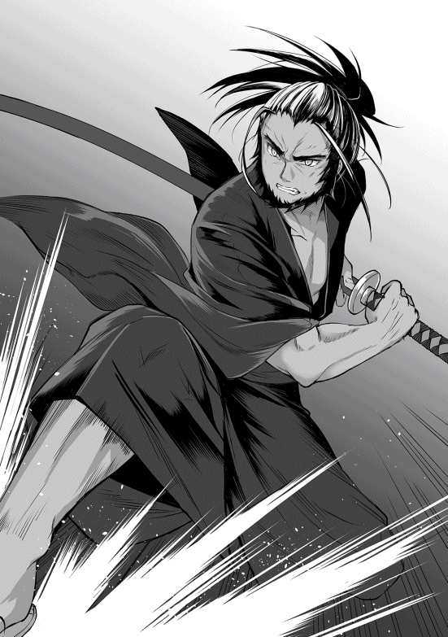
「くっ......！」
ミラノの脳裏に二つの考えが去来する。
本能が叫ぶ。行け。今ここで追いかけねば、セレネを完全に失ってしまうぞ。
理性が叫ぶ。やめろ。今ここで無理に突撃すれば、全員無駄死にしてしまうぞ。
──ミラノは後者を選択した。
「............一度、ヘリファルテに引き上げる」
「しかし王子！ 今追いかけねば、竜を完全に見失ってしまうでござる！」
「分かっている！ だが、お前も含め、私以外は魔力を持たぬ者ばかりだ。そのまま白森に入る事は出来ない。部下達に死ねと言うようなものだ」
「ぐ......し、しかし、王子はそれでよいのでござるか？」
「黙れっ！」
ミラノは血が出るほどに唇を噛み締め、クマハチの意見をねじ伏せた。魔力はそれを持つ人間には恩恵を与えるが、持たぬ者には毒となる。魔力で充満した白森に突入する事は、硫酸の海に裸で飛び込めと言う事に等しい。
それに、今回はあくまで観光目的でここまで来たため、戦闘の準備は殆どしていない。自分は王子として、民の事を第一に考えねばならない。ミラノはそう判断を下した。
「セレネ、無事でいてくれ......」
何か言いたげなクマハチを見ず、ミラノは部下達に帰還命令を出した。セレネの無事を願うミラノの声は、まるで祈るような口調だった。
「こ、こえー......」
セレネは巨大な竜の手のひらに収まりながら、全身を震わせていた。
落ちたら間違いなくあの世行きの高度を、巨大なトカゲに掴まれながら飛んでいるのだ。怖くないわけがない。その震えを自分に対する恐怖と思ったのか、竜は穏やかな口調で話しかける。
『そう怯えるな。お前を取って食おうという訳ではない。故郷に送り返してやる。それだけだ』
「ど、どうも......」
セレネはひきつりながらも何とか愛想笑いをした。ゲームでなら大型の竜が出てきたら「ヒャッハー！ 大物だぁー！」といった感じで喜々として襲い掛かるのだが、現実で恐竜のような化け物に掴まれていては生きた心地がしない。
狩ろうなんて言ってすみませんでした。セレネは反省した。ものすごく反省した。しかし、反省したところで現実は変わらないのだった。
『姫！ ご無事ですか!?』
「バトラー、きてたの!?」
セレネは信頼出来る執事の存在を確認し、安堵のあまり大声を出していた。バトラーは竜の表皮を器用に伝い、駆け下りてきた。
『申し訳ありません。私の力では、どうする事も出来ませんでした』
ごつい指の隙間から小さな身体を潜り込ませ、セレネの肩の所に飛び乗ると、バトラーは悔しそうにうなだれた。竜相手に戦っていたのはミラノとクマハチだけではない、セレネの忠臣であるバトラーも参戦していたのだ。
ミラノ達が戦っている間、バトラーは背後から回り込み、竜の背に飛び乗り必死に牙を立てていたが、いくら彼が魔獣とはいえ、竜と鼠では力比べにすらならない。
『何だ、その鼠は？ お前が飼っているのか？ 喋れるとは驚きだな』
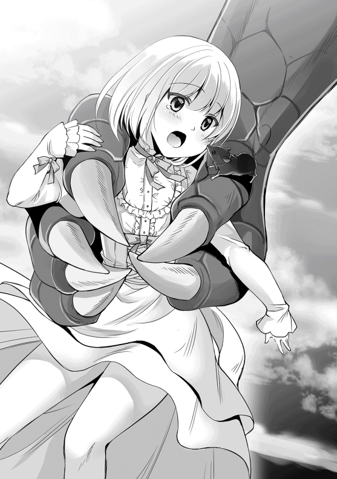
風を切って飛んでいた竜がセレネの叫びでバトラーに気が付くと、珍しい物を見たように囁いた。竜は今、セレネの魔力に波長を合わせて会話しているので、彼女と同じ魔力を持つバトラーの声も拾えるのだ。
『偉大なる赤竜様。私はセレネ姫の側近、執事のバトラーでございます。以降お見知りおきを。こうして世界の支配者と直接会話させていただけるとは、光栄の極みでございます』
竜に捕まってしまった以上、何とかして脱出の機会を窺うしかない。そう考えたバトラーは、竜の機嫌を損ねぬよう、恭しく竜に会釈した。ちっぽけな鼠の敬意がまんざらでもないのか、竜は巨大な口元をゆがめて笑う。
『我を褒め称えるとは、なかなか見所がある。しかし、お前は鼠ではないか。羊ではないだろう』
『くだらない冗談を失礼いたしました。場を和ませるのもしつ......下々の者の役割でございます』
執事だよ、とあやうく訂正しかけたが、慌ててバトラーは口をつぐんだ。下手に機嫌を損ねて地面に叩きつけられでもしたらたまらない。
それからしばらくの間、セレネもバトラーも竜の手のひらの中で身を縮こまらせていたが、竜は、北へ、北へと飛翔を続けていく。平地が少なくなり、眼下はどんどんと樹海が広がっていく。故郷に送り届けてくれるという話だったのに全く逆方向に進んでいる事に、さすがのセレネも不安になり、思わず口を開いた。
「りゅう、ここ、ちがう」
『違う？ ああ、お前の集落はもう少し先という事か。安心しろ、もうすぐ白森に到着する。そこからなら、お前にも土地勘はあるだろう』
「しゅうらく？ しろもり？」
『ほら、見えてきたぞ』
竜が巨大な頭をしゃくると、その方向に真っ白な大樹海が見えた。
これまで見てきた大森林は普通の緑色だったが、それが徐々に白く染まり、まるで森全体に雪でも降ったように見えた。しかし、それが雪ではなく、木々そのものが真っ白に染まっているという事に、セレネもバトラーもすぐに気が付いた。
以前、クマハチに白森という存在がある事は聞いていたが、まさか本当に「白い森」だとはセレネも考えていなかった。
『エルフの幼子よ。人間の大人達に囲まれ、随分と恐ろしかっただろう。迷子になったところを攫われたのか？』
「へ......？」
何をわけの分からない事を言ってんだコイツ。セレネはそう思い、目をぱちぱちと瞬かせたが、竜は構わず言葉を紡いでいく。
『本来なら、我はエルフや人間に手を出す事はないのだがな。お前が以前、我に助けを求めていたのは気付いていた。今日はちょうど白森の近くを通ったのでな、帰り道のついでだ。我のほんの気まぐれだ。感謝する必要はない』
「わたし、エルフ、ちがうよ？」
『何を言う。我がお前達を知らぬとでも思うのか？ その白き髪と肌、赤き瞳、エルフそのものではないか』
「ちがうってば」
『あ、あの赤竜様......大変恐縮ではありますが、セレネ姫の仰っている事は本当にございます』
セレネとバトラーの異議申し立てにより、赤竜は空中で静止した。
少しの沈黙の後、竜はセレネ達に問いかける。
『......本当なのか？』
「......うん」
一人と二匹の間に、何とも言えない微妙な空気が流れていく。
竜は、セレネを掴んでいた右前足を頭の前に持ってくると、セレネの頭より巨大な金色の瞳で、まじまじと覗き込む。
『んん......？ んんん......？』
竜は眉をひそめ、近眼の人が必死に物を見定めるように、セレネをためつすがめつ観察する。そして次の瞬間、目を大きく見開いた。
『あああっ！ み、耳がないぞっ!?』
竜は空中で身をのけぞらせ、信じられない物を見たように驚いた。
竜の知っているエルフは、白い髪、白い肌、それと赤い瞳を持っている。だがその他に、長い耳を持っていたはずだ。しかし、目の前の娘にはそれがないのだ。
『き、貴様！ 我を謀ったな！』
竜は、別に逆鱗に触れられた訳でもないのに、勝手に激昂した。
『下等な人間ごときが我を騙すとは......許さんぞ！ 我が血肉となり、胃袋の中で悔いるがよい！』
怒り猛る赤竜は、セレネを食い殺そうと牙を剥いた。口の中には岩石のような牙がずらりと並び、柔らかなセレネの肉など、マシュマロよりも簡単に噛み千切ってしまうだろう。
「ひえー！」
竜に鷲掴みにされたセレネは情けない悲鳴を上げた。こうして対峙した竜の迫力は凄まじく、とても「あんたが勝手に間違えたんでしょ」とは言えない雰囲気だった。ましてセレネは口が回らない上に頭も回らないので、激昂した相手を宥める術など持っていないのだ。
『お待ちくだされ！』
竜の顎がセレネに歯を立てる直前、大きな声が空に響いた。思わず竜が動きを止めて目を凝らすと、いつの間にか白い少女の頭の上に小さな獣──先ほどバトラーと名乗った鼠が乗っているのが見えた。
『鼠め。貴様のような矮小な生物が、我に歯向かうとでも言うのか？』
『とんでもございません。むしろ我らのような卑賤な者が赤竜様の血肉になれるのなら、光栄と考えているほどでございます』
「えっ!?」
『しっ！ ここは私にお任せを』
さすがに食われるのはちょっと、と抗議しかけたセレネに対し、バトラーは小声で囁いた。バトラーは首元の赤いリボンを整えると、二本足で立ち上がり、竜に対し優雅に敬礼をした。
『なかなか聞き分けの良い態度だ。ならば大人しく我が糧になるがよい。特に、小娘のほうはなかなかに美味そうではないか』
『そう、そこが重要なのです。赤竜様、我々を食べる前に一つ、とっておきの情報があるのですが、お伝えさせていただいてよろしいでしょうか』
バトラーは両前足をすり合わせ、媚びるように赤竜に問う。赤竜もバトラーの紳士的な態度と、話す内容に少し興味を惹かれたらしく、一呼吸置いて問い返す。
『とっておきの情報とは何だ？ しょせん、貴様のような小物の持つ情報だ。大したものではないだろう』
『赤竜様、それは大きな認識違いでございます。小物であるが故に知恵を持つという事も大いにあるのです。弱い者が生き残るためには、足りない力を補う何かが必要なのですからな』
『ふむ......だが、それは我にとって有益な情報なのか？』
『もちろんでございます！ 偉大なる赤竜様の力に、我らの持つ知恵が合わされば、まさに最強の力と最高の知性を持つ、世界最強の生物となる事は間違いありません』
『世界最強......か』
そう呟き、竜は沈黙した。竜はこの世界における最強の存在だが、それは彼らの持つ魔力と武力が尋常ではないからだ。ゆえに彼らは頭を使って交渉する必要が無い。竜に対する情報は少ないが、バトラーはそう値踏みし賭けに出た。
この難局を乗り越えなければ、彼の敬愛するセレネ姫はまず助からないだろう。バトラーは極度の緊張感からくる震えをこらえ、外見上は余裕たっぷりの表情で赤竜の答えを待った。
『いいだろう。お前の発言を許可する』
『ははーっ！ ありがとうございます！』
喰らいついた。バトラーはセレネの髪の上で平伏の姿勢を取りながら、内心でガッツポーズを取る。本当はセレネの頭上にいる事自体、許されざる無礼な行為だが、今は主人を守るため苦渋の決断をせざるを得ない。
同時に、黙って自分を信じて無礼を許してくれているセレネのため、絶対に交渉を成功させてみせる。そう固く決意し、バトラーは勇気を奮わせた。単にセレネは緊張で固まっていただけなのだが。
『さて、私の持つ情報でございますが、それはこの娘──セレネ姫の能力についてでございます』
『この小娘の能力だと？ 単なるエルフもどきではないのか？』
『とんでもない！ ただの小娘などではございませぬ。この姫こそ、人類史上最高の姫であり、竜殺しの能力を持つ、現世でただ一人の人間なのです！』
「............ぇ？」
自分の知らない自分の設定が出てきたので、セレネは困惑して首を傾げた。だが、バトラーが熱弁しているので、ここは彼に任せたほうがよいと黙っていた。いくらセレネが空気を読めない人間でも、さすがに自分の命が掛かっている時くらいは真剣になる。
『竜殺しだと？ そんな脆弱な娘に、竜を屠る力があるものか。馬鹿な事を言うな』
『確かに、セレネ姫自身は可憐かつ貞淑な少女に過ぎません。彼女の能力は、その血と肉そのものでございます。この少女の外見が他の人間と違うのも、その現れでございます』
『......どういう事だ？』
竜が疑問を呈すると、バトラーはあえてもったいぶった態度を取り、コホン、と一言咳払いをして続ける。
『セレネ姫は、他の人間とは違った姿をしております。竜に対抗するために編み出した禁術により、姿を変えられてしまった者の末裔だからでございます。彼女の一族は全て喰らい尽くされ、セレネ姫だけが、現存する最後の一人なのです』
『竜を殺す毒だと？ そんな話、竜である我ですら聞いた事がないぞ』
『それは当然でございます。見ての通り、セレネ姫は大変に美味しそうに見える肉体を持っています。それこそ人間の思う壺。美しく作り上げる事で、意図的に竜に食べさせようというわけですな。そうしてセレネ姫の血族はみな食い尽くされ、竜達はその場で全て死んでしまったのです。だから他の竜に伝わるはずはありません。つまり、証拠が無いのが証拠、というわけでございますな』
『むぅ......』
もちろんバトラーの言っている言葉は全て大嘘、今この場ででっち上げた空想の話である。セレネは無害な乙女──でもないが、精神面と魔力を保持している点を除けば、肉体的にはごく普通の女の子である。しかし、バトラーの熱演は止まらない。
『それでも赤竜様はセレネ姫を──この竜殺しの娘を喰らおうというのですか？ 試してみても構いませぬが、このバトラー、忠告は致しましたぞ』
『う、うぬぬ......！』
竜はセレネを凝視する。鼠の言っている事が嘘である可能性は高いが、万が一、本当だったらどうしよう。その躊躇いを見逃すバトラーではない。ここぞとばかりにバトラーは竜にたたみ掛ける。
『そこで赤竜様、私から提案がございます。いっその事、この娘を武器として使ってはどうでしょう？』
『武器？ どういう事だ？』
赤竜は既に反射的に返事をしている。流れをこちらにたぐり寄せた喜びを押し隠しつつ、バトラーは名案を思いついた、とばかりに言葉を紡いでいく。
『赤竜様は確かに地上最高の存在でございます。ですが、竜同士の争いというものもあるのではございませぬか？』
『我と同格の存在なら確かにいる。我らは群れを作り生活をしているからな』
『そうでしょうそうでしょう。ならば、その群れの中で諍いが起こった時の切り札として、この娘を使ってはどうでしょう、というわけです。いわば暗殺用の毒というわけですな』
『なるほど......』
バトラーの嘘八百をすっかり信じ込んだ竜は、あまり良くない頭を回転させる。蟻から見れば人間は巨人というべき存在だろうが、人間の中にも、歴戦の猛者からよちよち歩きの赤ん坊がいるように、竜にもかなりの個体差がある。
そして実はこの竜は、群れの中ではかなり下位に属する存在だった。セレネ達は知る由もないが、今まで大陸中の空を飛び回っていたのも、身体を鍛えるためのランニング──もといフライングをしていただけである。そこで偶然セレネを見つけたわけだ。
そして鼠いわく、この人間の幼子は、竜に対する猛毒を持っているらしい。ならば、この娘は自分の権力争いにおいて強力な武器となりえるのではないか。
竜の妄想はさらに膨らんでいく。群れの順位争いにおいて、正攻法で勝負を挑めば自分はまず力負けしてしまう。だが、上質な獲物を狩ってきたと称し、上位の連中にこの娘を差し出したらどうだろう。きっと奴等は我先にと喰らいつくだろう。そして、自分を馬鹿にしていた連中は悶絶して死んでいくのだ。
『ぬふふ......』
竜はそこまで考えて、邪な妄想を終わらせた。この鼠の言っている事が嘘なら、普通に群れの上位者に獲物を献上した事にすればいいし、成功すれば殺害可能なのだ。少なくとも試してみる価値はある。
『いいだろう。貴様達を竜峰へ連れていく。それまでは生かしておいてやろう』
『申し上げにくいのですが......この提案には、実は一つだけ大きな問題があるのです』
『問題とはなんだ？』
もう完全にバトラーの虚言を信じ始めた赤竜は、物語の先を知りたがる子供のようにバトラーを促した。バトラーは過剰なまでに項垂れ、実に残念そうに答える。
『見ての通り、セレネ姫はまだほんの子供でございます。果物の種がそのままでは食べられないように、完全に育ちきらなければ竜殺しの能力を発揮する事は出来ないのです。せいぜい腹を下す程度でしょうな』
『では、どうすればよいのだ？』
『簡単にございます。セレネ姫が立派に育つまで見守ればよいのです。出来れば熟した果実のように、しわしわになるまで待つのが理想ですな』
『それまでにどのくらいかかる？ 我はあまり人間の寿命に詳しくないのでな』
『そうですなぁ、五十、八十......いや、万全を期すれば、百年ほど掛かるでしょうな』
『百年か......そこそこ掛かるのだな』
竜は少し残念そうに答えた。蟻が卵から生まれ、成虫になり、寿命を終えるまでの期間をはっきり知る人間があまりいないように、竜にとって人間の一生という物は何となくでしか把握していなかったので、そういうものなのかと納得した。当たり前だが、百年経てばセレネもバトラーもとっくに墓の下である。
『失礼でございますが、赤竜様の御歳はおいくつでございましょう？』
『四千までは数えていたが、それ以降は覚えておらん』
『ならば、百年程度待つのに問題はないでしょう』
『しかし、百年というのは少々長い気が......』
『いや、むしろそのくらい待つべきなのです。偉大な存在という物は、目の前の利益に飛びつかず、大局を見据え、悠然と構えているものではございませんか。まして、この世界で最強の存在である赤竜様がそれをしないとは、この私には信じられませんな』
バトラーが自信たっぷりにそう言うと、赤竜の中に「そう言われてみると、ゆっくりやった方が格好いいかもしれない」という思考が芽生え始める。特に後半の「本当の大物は悠然と構えるべき」という部分に引っかかったらしい。
もちろんバトラーは赤竜のプライドの高さを見越し、あえてそういう言い回しにしたわけだが、普段群れの中であまり褒められる事のない竜にとって、バトラーの恭しい態度は実に耳障りの良いものだった。
『......いいだろう。そのセレネとかいう小娘に、百年後、我の踏み石となる権利をやろう』
『ありがたき幸せにございます。百年後、偉大なる赤竜様は、驚くべき結果を見る事になるでしょう』
『ふふふ、なかなか殊勝な心構えだ。気に入ったぞ』
『ありがたきお言葉にございます』
バトラーは驚くべき結果と言っただけで、別にお前にとって良い結果になるとは一言も言っていないのだが、竜はすっかり上機嫌で鼻から蒸気を噴出させた。
『そうと決まれば早速、セレネ姫を人間の元へ戻すべきです』
『我の手元に置くわけにはいかんのか？』
『とんでもない！ セレネ姫は、赤竜様にとって切り札となる存在でございます。なるべく他の竜に見せぬよう隠して育てるべきです。木を隠すなら森の中、人を隠すには人の中が最適でございます』
『なるほど......お前はなかなか賢いな』
バトラーの口からでまかせを完全に信じきった赤竜は、鷹揚に頷いた。
『だが、そうもいかん。いくら我が史上最高の竜であっても、今日は既に、大陸の南端まで飛んでいるのでな。それに我ほどの偉大な者が、そう何度も人間達の前に姿を晒すのも好ましくはない』
要約すると、「今日はいっぱい動いて疲れてるし、すぐに『間違っちゃったぜ☆』とセレネを返しにいくのはカッコ悪いから嫌だ」という事である。もちろんバトラーは気付いていたが、そこに突っ込むほど野暮ではない。
『然様でございますか。私としては、赤竜様の栄光のために一刻を惜しんで尽力したいのですが、仕方がありませんな』
あくまで自分達が帰りたいのは赤竜のためという大義名分を崩さず、バトラーは言葉を選びそう答えた。本当なら今すぐにでも安全圏へと戻りたいのだが、この辺りが切り上げ時だろう。バトラーがそう考えている間に、赤竜は白森の中で、比較的木々の少ない空間を見つけ、舞い降りた。そしてセレネとバトラーを大事な物を扱うようにそっと地面に下ろした。
『明日の朝までここで待つがよい。我は今から巣に戻り、体力を回復させてくる。明日の日の出と共に、再びここに戻ってくる。その時に、お前達が住む場所に送り届けてやろう』
『ありがとうございます』
「ありがと」
勝手に連れてこられてなんで礼を言わなきゃならんのだ。セレネは釈然としなかったが、赤竜相手に文句を言うわけにもいかず、しぶしぶお礼を言った。それを見届けると、赤竜はその大きな翼を羽ばたかせ、北の山脈を目掛け飛び去った。
『やれやれ、何とか切り抜けられましたな......姫、卑賤な者などと称してしまい、まことに申し訳ございません』
「バトラー」
『は、はい！』
セレネは、頭の上に乗っていたバトラーを両手で包み込んだ。セレネの柔らかな手のひらの上で、バトラーは主の言葉を緊張した面持ちで待つ。誇り高い鼠の執事──バトラーが従うのはセレネ姫ただ一人。その姫から叱責の言葉を受ける事は、彼にとって竜の何万倍も恐ろしい。
「ぐっじょぶ！」
『は？』
ぐっじょぶ、の意味がいまいち分からないが。セレネはバトラーを片手に移し、柔らかな笑みと共に親指を立てた。そしてすぐにバトラーの滑らかな毛皮をわしわしと撫でる。これはバトラーにとって、最大級の賛辞であった。
『お叱りにならないのですか？ 私は姫を貶め、姫の命を賭けに使ったのですぞ？』
「きにしない。バトラー、いいしごと」
セレネは喜色満面だ。もともとセレネに姫のプライドなど皆無だし、あのまま食われると思っていたのに、それを見事に回避。それどころか、何とかして使えないかと思い悩んでいた竜に対し、コネを作る事に成功したのだ。上手く利用出来れば対王子用の最終決戦兵器となる竜をだ。
『ありがたきお言葉。このバトラー、光栄の極みにございます』
「こんど、バッタ、あげる」
『なんと!? 本当でございますか!? ああ、身に余る勲章でございます！』
セレネの手のひらの上でバトラーは狂喜乱舞した。バトラーにとって、セレネから直接与えられる食物一つ一つが命の糧であり宝物なのだ。その中でも、セレネが直接捕まえてくれる生きたバッタは至福のごちそうである。セレネにとっては暇つぶしの昆虫採集のついでなのだが、バトラーは能力の割に維持コストが安いのだ。
『姫、お怪我はありませぬか？ それに体調のほうはいかがでしょう？ ここは魔力に満ちた森との事ですが、お変わりはありませぬか？』
「へいき、バトラーは？」
『私も問題ないようです。姫から与えられたお力のお陰でございますな』
普通の人間なら魔力中毒とでも言うべき体調不良を起こしてしまうのだが、セレネもバトラーも魔力を保持していたため、白森の中でも特に行動に支障はないようだった。
『姫、明日の朝までここで待機せねばなりませぬ。ここは我らにとって未開の土地でございます。くれぐれもご注意くだされ』
「あいよ」
バトラーの警告を聞き流し、セレネは降り立った白森の光景に目を奪われていた。雪に埋もれた森のような純白に染まる風景でありながら、よく見ると、木々の木の葉一枚一枚に生命の息吹が満ちているという、地球では見られない幻想的な景色にセレネはすっかり魅了され、無言で突っ立っていた。セレネは一難が去ると、前の事をすぐに頭の片隅に追いやる人間なのだ。
そうとは知らないバトラーは、見た事のない景色に圧倒され、押し黙ってしまった姫の不安を取り除こうとセレネの肩に飛び乗り、穏やかな声で囁いた。
『姫、ご安心くだされ。いかなる敵が来ようとも、このバトラー、命に換えてでもお守り致しますぞ』
「よろしく」
セレネは適当に相槌を打つと、いい感じの倒木を椅子代わりに腰を下ろした。明日の朝には赤竜がやってきて自分達を回収してくれるのだ、さっきは全然余裕が無かったが、帰りは空中散歩を楽しめるかもしれないなどと、セレネは持ち前の生ぬるい楽観思考を思う存分発揮していた。
そうして明日の朝までの間、ぼんやりと時間を過ごす事にした。セレネはただ無為に時間を浪費する事にかけては天賦の才を持っているのだ。
バトラーもセレネの脇にちょこんと腰を下ろし、辺りを警戒しながらも、今まで見た事の無い不可思議な景色に見惚れていた。しばらくの間、二人は黙って倒木の上に座り込んでいたが、不意にバトラーが耳と尻尾をぴんと立てた。
『姫、何者かが近づいてくる気配を感じます。警戒を！』
「なにもの？」
セレネが相変わらずぼけっとしていると、不意に木々がざわめく音が風に乗って聞こえてきたので、さすがのセレネも音の方向に目を向け身構える。
「おっかしーな？ さっき、この辺に竜が降りてた気がするんだけど」
「こんな所に竜が来るわけないだろ......って、誰かいるぞ？」
「あ、本当だ。どっかの集落の迷子か？」
セレネとバトラーの前に現れたのは、長い銀髪を後ろで縛った、赤い瞳、それに長い耳を持った、二人組のエルフの青年達だった。
「子供？ 何でこんな所に一人で？」
森の茂みを掻き分けて現れた二人の青年は、不思議そうにセレネを見た。長い銀髪と赤い瞳もだが、それ以上に特徴的なのは彼らの耳だ。長く尖った耳は人間のそれではなく、彼らがエルフと呼ばれる存在である事は一目で見て取れた。
この世界に生まれてから、竜以外にまともな異種族を見た事が無かったセレネは、ああ、これが噂のエルフか、などと暢気に眺めていた。
青年達は幼いエルフの少女が、知らない大人を見て怯えていると思ったらしい。セレネを傷つけるつもりはないと言いたいのだろう、手に持っていた木製の弓を背中に回し、ゆっくりとセレネに近づいた。
「お嬢ちゃん、どうしたんだい？ こんな所で一人でいると危ないぞ。道に迷ったのか？ どこの集落だ？ 送ってやろう」
「えーと」
二人組はどうやらセレネを完全にエルフと思い込んでいるらしく、穏やかな声でそう語りかける。だが、後ろにいた片方の青年が眉をひそめた。
「おい、何かこの子、変じゃないか？」
「変って......んん？」
そう言われ、エルフの青年達はセレネを注視する。確かに、髪の色がエルフにしては白過ぎる。彼らはみな銀の髪を持っているが、この少女の髪の色は殆ど純白だ。何より──
「耳が丸い!? お、お前......もしかして人間か!?」
「うん、まあ」
セレネは特に何も考えずそう答えた。瞬間、今まで優しげな表情を浮かべていた青年の態度が急変する。眉間に皺を寄せ、息が掛かるほど顔を近づけセレネに迫る。
「貴様、ボッケンシャーか!? どうやってだ！ 白森のこんな奥地まで、一体どうやって入ってきた!? 言え！」
「えと、その、あの......」
食いつかんばかりの勢いで矢継ぎ早に質問されたものだから、セレネはたじろいで後ろに引こうとした。しかし、その動作がいけなかった。逃げようとしていると思われたらしく、興奮したエルフの青年はセレネの腕を強引に引っ張った。
「いたっ！」
セレネが痛みを訴えた直後、腕を掴んでいたエルフが体をくの字型に曲げて後方に吹き飛んだ。後ろに控えていたもう一人のエルフは、突然吹っ飛んだ相棒に気を配る余裕も無く、一体何が起こったのかとセレネに目を向ける。
『貴様ら！ 我が主に許可無く触れ、あまつさえ苦痛を与えるとは！ 許さんぞっ！』
それは、主を傷つけられたバトラー怒りの体当たりだった。強烈なボディーブローを喰らったエルフの一人は腹を押さえながら何とか立ち上がる。そうして彼らは、純白の少女を守るように立ち塞がる、小さな鼠の存在に気が付いたのだ。
バトラーの言葉は彼らには通じないが、全身の体毛を膨らませ、威嚇するように鋭い前歯をむき出す様子から、その鼠が激怒しているのを理解した。そして、その鼠が、ただの鼠ではない事も。
「ね、鼠？ お前、あれにぶっ飛ばされたのか？」
「げほっ！ お、俺が聞きたいよ！ なんだよアイツ！ おかしいだろ！」
「知るか！ とにかくあのチビを捕まえるぞ！」
突如現れた謎の人間と獣、エルフにとっては十分に警戒すべき相手だ。バトラーの体当たりを受けていないほうのエルフが後ろに跳んで距離を取り、そのまま弓を構える。
狙いはセレネ。どうやらあの強力な鼠を操る本体と思い込まれたらしい。元日本生まれで平和ボケしていたセレネは、いきなり武器を突きつけられた現状に頭が追い付かず、ただ戸惑うばかりだった。隙だらけのその姿は、エルフにとっては格好の的だ。
そのまま弦を絞り、エルフは矢を放つ。狙うはセレネの足。いきなり殺してはこの人間の正体が分からず終いだ。情報を集めるため、エルフはまずセレネの機動力を奪おうとした。
エルフの弓の腕は素晴らしかった。解き放たれた矢は、セレネの足を寸分違わず貫く──事は無かった。セレネの柔らかな足を矢が貫こうとする前、まるで魔法のように矢がへし折れた。
「なっ!?」
エルフは喫驚した。それもそのはず、あの小さな鼠が飛び出し、空中で矢を噛み砕いたのだ。エルフの使っているのは蔦を束ねた木の矢ではあるが、魔力で強化された素材である。それ以前に、空飛ぶ矢を空中でやすやすと受け止め砕く。それはもう、もはや神業と言っていいレベルである。
『貴様ら......今、姫を本気で狙ったな！ ならば私も本気でいかせてもらおうか！』
バトラーは「カッ！」っと鋭い威嚇音を出すと、即座に地面を蹴る。その速度は凄まじく、動体視力に優れたエルフとて容易に捉えられるものではない。バトラーは、熊や狼をも従える武力と、鼠の敏捷性、それに人間以上の知恵を併せ持つ魔獣なのだ。
バトラーは黒い影のように落ち葉の上を駆け抜け、第二の矢を放とうとしていたエルフの足首に、渾身の体当たりをぶちかます。
「ぐわっ！」
足首に強烈な一撃を喰らったエルフは、たまらず地面に転ぶ。即座にバトラーは急ブレーキで方向転換。倒れたエルフの顔面に、再び強烈なタックルを食らわせる。エルフは強烈な脳震盪を起こし、そのまま昏倒した。
「こ、このやろ......ぎゃっ！」
先ほどバトラーに腹を殴られた方のエルフが、腰に刺していた短剣を抜き、小鼠に突き立てる。しかし、手負いの者の刃をバトラーが避けられないわけが無い。バトラーは跳躍した。そして手近な木の枝に着地すると、樹上から、獲物に襲い掛かる猛禽の如くエルフの後頭部を狙う。これも直撃し、二人目のエルフは地面にうつ伏せに倒れた。
『姫！ この場に残るのは危険です！ 逃げますぞ！』
「にげる？ ど、どこ!?」
『とにかく、少しでも木の少ない開けた場所を走るしかありません！ 殿は私が務めます！』
「わかった！」
セレネはバトラーの鬼気迫る声に押し出されるように、ぱたぱたと白く輝く森を走っていく。開けた場所といっても、正直どこもかしこも木々に埋め尽くされており、セレネはどこに行っていいのかさっぱり分からない。
バトラーの指示通り、比較的走りやすそうな木々の隙間を縫うように走ろうとするが、あたりは真っ白な木々ばかりで、自分がどこにいるのかさえ分からなくなる。
それでもセレネは駆ける。エルフが人間に対し、あまり良い感情を抱いていない事は分かったし、捕まったら何をされるか分かった物ではない。親愛なるアルエ姉様のためにも、自分はここでくたばるわけにはいかないのだ。
「ひぃ、ひぃ！」
『姫、お辛いでしょうが頑張ってください！』
必死さとは裏腹に、セレネの足はもたついていた。セレネは運動嫌いな上に出不精なので、普通の八歳児に輪をかけて体力が無いのだ。さらに言うと、地面は真っ白な落ち葉や、樹木の根っこが所々に出っ張っており、走りづらい事この上なかった。
「大丈夫か？」
「クソっ！ 一体何なんだあいつら！」
セレネが逃げてから大して時間も経たず、エルフの青年達は意識を取り戻した。そして、あの白い少女と鼠が、背を向け走り去っていく姿を視界に捉えた。
「あのチビ、只者じゃない......！ 援軍を呼べ！」
「で、でもよ、今、近場にいるのはザナ様じゃ......俺達が勝手に呼んでいい方じゃないだろ」
「仕方ないだろ！ 逃がすわけにはいかない！」
エルフの青年達は舌打ちした。姿形があどけない少女だったので、完璧に騙されてしまった。人の身でありながら、自分達の住む区域まで平然と入り込み、さらにあんな規格外の獣を使いこなす存在だ。生け捕りは難しいかもしれない。
一瞬だけためらって、エルフの青年達は胸元から木製の笛を取り出して吹く。ピィー、と甲高い音が周囲に響き、その直後、弓を構えて再びセレネ達の追撃に移行する。
『奴ら、恐らく仲間を呼んだようですな！ くっ、どこかに身を隠す場所があれば......』
「はひー！」
セレネは心臓が爆発しそうになりながら、よたよたと走っていた。碌に方角も分からないまま、ひたすらに白き森の中を走り回る。あたりに茂みは沢山あったが、あのエルフ達は、そもそも茂みを掻き分けて出てきたのだ、下手に飛び込んでしまうと、それこそ他の連中と鉢合わせになってしまう危険性がある。
エルフ達も必死だった。セレネとの距離を詰めるだけなら赤子の手を捻るようなものだ。しかし、少女の使役する謎の鼠がそうはさせない。エルフが矢を放てば、その都度体当たりをして矢の軌道を変え、へし折り、噛み千切る。下手をすると咥えた矢を投げ返してくる。
ならば近づいて短剣で、という訳にもいかない。バトラーはそこら中に生える木々を足場に、三角飛びのように縦横無尽に飛び回り威嚇する。それはまるで、意思を持って飛びまわる跳弾のようであり、少女を守る黒い結界であった。
セレネは極めて鈍足であったが、バトラーの驚異はエルフ達も先ほど体験したばかり。先頭を逃げるセレネ、それを追うエルフ、そしてその中間に立ちはだかる戦士。三者の距離は一定のまま、こう着状態だった。
「あんた達！ どきなさい！」
その拮抗を破る時がきた。不意に、凛とした声が白森に響く。声質からして少女の物のようだ。二人組みのエルフ達の遥か後方に現れたその影は、あまりにも離れ過ぎているせいで、豆粒くらいにしか見えない。白い外套に身を包んだ娘らしき人影は、遥か彼方から弓を構える。
『援軍か！ 何度やっても無駄な事だ！』
バトラーは逃げも隠れもせず、威嚇するようにエルフ達の前の地面に四肢を踏ん張る。エルフの青年達はバトラーの姿を見て怯んだが、後方の少女は特に気にする様子も無く、ゆるりとした動作で矢を射る。
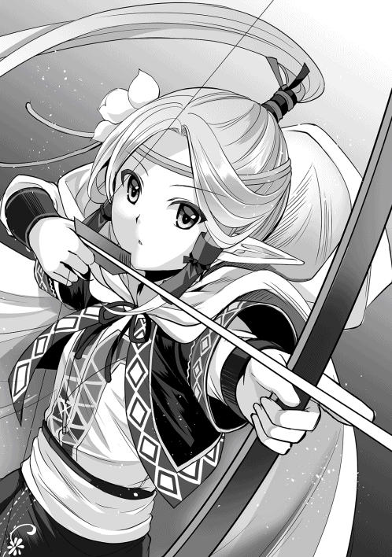
『（ほう、随分と自信があるのだな）』
先ほどの笛で呼ばれたばかりで状況が分からないのだろうか。彼方から解き放たれた矢は、失速する事なく真っ直ぐに飛ぶ。狙っているのはやはりセレネらしい。だが、それは無駄な事。
セレネの執事たる自分がいる限り、この程度の矢など何百本でもへし折ってやる。長い距離を飛ぶ矢に対し、バトラーは先ほどと同じ要領で矢を捕え、噛み千切ろうとする。
「緩め」
少女が短くそう呟いた瞬間、突然矢がぐにゃりと緩み、まるで紐のようになる。そう、彼女の狙いは最初からバトラーだ。少女を狙えばバトラーは必ず妨害する。そこを突いた。
『何だとっ!?』
急にたわんだ矢に対し、バトラーの目測がずれ、鋭い牙は空を切る。
「縛れ」
直後、少女が手を握るような動作をすると、今度は緩んだ矢が、まるで生きている蛇のようにバトラーに巻きつき、彼を拘束する。バトラーは全身をがんじがらめに拘束され、ぽとりと地面に落下した。
『ぐっ！ 面妖な！ これは蔦か!?』
バトラーは身をよじって何とか逃れようとするが、がっちりと戒められた頑丈な蔓は、彼の力を以てしてもびくともしない。どうやら先ほど放たれたのは矢ではなく、何らかの手段で棒状に固定された蔦だったらしい。そして、それが彼女の手で制御可能だという事も瞬時に理解したが、時既に遅し。
「バトラー!?」
『姫！ 私に構わずお逃げくだされ！ ここは私が引き受けます！』
バトラーは絶叫した。いくらバトラーが強力な魔獣とはいえ、こうして動きを封じられてしまえばただの鼠に過ぎない。それでも彼は、主人を守るため最後まで戦うつもりだった。彼がここにいる限り、一秒でもセレネのために気を引ける可能性があるのだから。
「いやだ！」
しかしセレネは引かなかった。セレネにとってバトラーは、この世界でまともに喋れる大事な友人だった。セレネは生前、誰も友達がいなかったので、動物や植物相手に一人でぶつぶつ喋るちょっとアレな人だった。だから、それまで一方通行だった動物と会話出来た時は本当に嬉しかった。
セレネは気難しい変態である事は間違いないが、自分が気に入った存在に対しては惜しみない愛を注ぐ人間だった。それは鼠であるバトラーに対しても変わらない。そしてバトラーよりもアルエを愛し、人間の男はどうでもよかった。
「なめやがってェ！」
セレネはそこらへんに落ちていた棒切れを二本拾うと、片方ずつ持って二刀流になった。セレネはただの脆弱な八歳の少女ではない。その美しく可憐な体には、荒ぶる中年男性の魂を秘めている。正直微妙だが、とりあえず八歳の幼女よりはなんぼか闘争心があった。
「うおーーーーっ！」
セレネは両腕で滅茶苦茶に棒を振り回しながら、エルフの青年達に殴りかかっていった。今まで後ろを向いて逃げ回っていた少女が、いきなり襲い掛かってきたものだから、エルフ達はさすがに面食らった。
『姫！ おやめくだされ！ 私の事はかまいません！』
「うおーーーーっ！」
しかしセレネは止まらない。セレネは頭に血が昇ると、後先考えず行動し、事が終わった後に後悔するタイプの人間だった。エルフ達はすぐに我に返り弓を構える。そして再び、無慈悲に矢が解き放たれる。今度はバトラーはいない。いるのは無策で突っ込むセレネのみだ。
「ぎゃっ!?」
セレネの悲鳴が木霊する。セレネは両手に棒を持ち、前しか見ないで走っていたものだから、地面に生えていた根っこに足を取られすっ転んだ。そのお陰でエルフの矢は空を切り、後ろの木々に突き刺さった。
「回避された!?」
エルフ達は驚愕する。あのタイミングなら絶対に捕えたはず。それを、あの少女は伏せる事で瞬時に回避したのだ。やはり鼠だけではなく、あの少女も警戒すべきだ。エルフ達の警戒心はまた跳ね上がる。
しかし、セレネは突っ伏したまま動かなかった。両手に棒を持っていたため受身が取れず、思い切り顔面を強打し気絶していたので。エルフの青年達はセレネの奇行にどうしていいか分からず固まった。
「な、なあ......あいつ、気絶してないか？」
「いや、気をつけろ。俺達を油断させる罠かもしれん」
エルフの青年達は警戒を解かず、少しずつ距離を詰める。バトラーは地面に転がっているだけで完全に無力化されているので、今はセレネのみに注意を払っていた。
『姫！ 大丈夫ですか！ 姫っ！』
バトラーは必死にセレネに呼びかけるが、セレネの意識は戻らない。
エルフの青年達はセレネを弓の先で突ついたりして様子を窺っていたが、どうやら本当に気を失っていると結論を下した。
「どうする？ 捕えるか？」
「いや、こんなボッケンシャーは初めてだ。ここで始末してしまおう」
『待て！ 待たぬかっっ!! 頼む！ 待ってくれっ！』
バトラーがいくら叫んでも、鼠がきぃきぃ鳴いているようにしか聞こえない。エルフの青年達は無慈悲にも短刀を取り出した。目を閉じたセレネは人間とはいえ幼い少女で、エルフ達も罪悪感に駆られたが、危険は排除せねばならない。
「ちょっと待ったぁ！」
エルフの青年がセレネの首元に刃を当てた時、後ろから声が響いた。青年達が後ろを振り向くと、そこには先ほど弓を放ったエルフの少女が立っていた。
銀髪を後ろで束ね、赤い瞳、長い耳を持っている点は変わりないが、青年達よりも頭一つ分も背の低い、どこか幼さを残した少女だった。
「ザナ様、しかし、ボッケンシャーは始末せねば」
「その子、ボッケンシャーじゃないわよ」
「え？」
エルフの青年が呆けたように返答すると。ザナと呼ばれた少女はやれやれ、と肩をすくめた。
「だってその子、なんにも荷物持ってないじゃない。ボッケンシャーならもっと大荷物なはずよ」
「そう言われてみれば......」
エルフの青年達は改めてセレネを見る。彼女は真っ白なドレスに身を包み、それ以外は何も持っていない。人間達の服装についてあまり詳しくないエルフ達だったが、どう見ても森の中に入る格好ではない事くらいは判断出来る。
「しかし、この娘がここにいたのは事実です。ボッケンシャーでないなら、何故こんな場所にいたのです？ しかも奇妙な鼠を連れていたのですよ」
「ああ、あのネズミ君か。さすがにあれは驚いたわねぇ。笛が聞こえて来てみて、あんまり小さいから、最初あんた達が空気と戦ってるのかと思ったわ」
『ネズミ君ではない！ セレネ姫の執事、バトラーであるぞ！』
「あ、怒った？ ごめんねぇ」
ザナと呼ばれた少女は、悪びれない様子でバトラーに笑いかけた。屈託の無い笑顔だが、バトラーにとってはセレネの命を握っている敵なのだ、縛られたまま威嚇するように牙を剥く。
「確かにそのネズミ君も、この人間の子も普通じゃないわね」
「どうします？ やはり処分しますか？」
「んー......」
ザナは腕を組んで考えるような素振りを見せると、セレネの顔を覗き込んだ。ただ黙って寝ていればセレネは傾国の美姫である。ザナも、セレネの幼いながらも完成された美貌に驚いた。
「よし！ じゃあ、族長のところに連れてって、判断を仰ぎましょ」
「族長......ギィ様のところですか？」
「そ、あたしはこの子運ぶから。あんた達はそのネズミ君お願いね」
「し、しかし危険では？ 我々がその子供を運んだ方が......」
エルフ達はザナに提案する。エルフ達からしてみれば、バトラーを自在に操るセレネこそが異能者であり、注意すべき存在だと考えていたからだ。それに、バトラーはザナの力によって拘束されているのだから、そちらを運んだ方が安全なはずだ。
「へーきへーき！ それにこの子、悪い子じゃないわ」
「何故、そんな事が言えるのですか」
「だって......」
そう言って、ザナは周りが止めるのも聞かず、セレネの小さな体を抱きかかえた。ザナも華奢ではあるが、常日頃体を動かしているエルフ達にとって、セレネの体は羽のように軽かった。
「この子、花の香りがするもの」
ザナはセレネの絹糸のような白い髪に顔を埋め、顔をほころばせた。自然に近いエルフ達にとって、セレネから発する草花の香りは、警戒心を解くのに一役買っていた。
その草花の香りは、セレネの怒りの七転八倒のせいでこびりついていたという事は、エルフにとってもセレネにとっても、知らぬが仏だった。
「ぅ......？」
セレネは小さく呻いて目を覚ました。上半身を起こそうと手を付くと、手のひらにふわふわとした感触があった。そこでセレネは、自分が木の葉で作られたベッドに寝かされている事に初めて気が付いた。
寝ぼけ眼を擦りながら辺りを見回し、手近な壁に手を触れる。手触りから、この建物が木材で出来ているらしい事は分かったが、木造の家にしては壁が随分とでこぼこで、壁は斜めに傾いている。明かり取りのため壁の数箇所が丸くくり貫かれた、何ともいい加減な作りに見えた。
「ここ、どこ？」
エルフの集団に襲い掛かっていったところまでは覚えていたが、それ以降の記憶が全くない。そういえば、バトラーはどうなったのだろう。
『姫！ 気が付かれたのですか!?』
「どわぁ!?」
急に大声で話しかけられ、セレネは驚いて飛び上がる。よく見ると、セレネの寝ていたベッドの脇には、底に干草を敷いた小さな木箱があり、その中に、蔦で縛られたままのバトラーが入れられていた。
「バトラー、へいき？」
『私は何ともありませんが、見ての通り不覚を取ってしまいました。まことに、まことに申し訳ございません！』
「くるしゅうない」
セレネは肩をすくめてバトラーを慰めた。あの状況ではどうしようもなかった。むしろバトラーはよく頑張ってくれた。これがもしミラノだったら「すまない、不覚を取ってしまった」「バッカヤロー！」というやり取りになっていただろう。
木箱からバトラーを取り出し、蔦を解こうとセレネは格闘したが、がっちり縛られた頑丈な蔦は、とても彼女の力では千切れそうにない。そうしているうちに、壁に取り付けられた木のドアが開かれた。
「あ、目ぇ覚めた？」
日差しと共に入り込んできたのは、エルフの少女であった。全身に白い布を巻きつけたような衣装で身を包んだ彼女は、女性というより少女と表現した方がよい年頃に見えた。背は低いが、カモシカを思わせるスラリとした体型をしていて、声は生命力と自信に満ち溢れている。
「エルフ？」
「そ、あたしはエルフのザナ。一応、えらい立場。歳は十五歳。好きな食べ物はリンゴ。あんたは？」
「セレネ、にんげん、はっさい」
「そう、セレネって言うのね。人間は何人も見た事はあるけど、あんたみたいに小さいのは初めてよ。そっちのネズミ君はあんたのペット？ 悪いけど、ちょっと縛らせてもらってるわ」
『だからネズミ君でもペットでも無いと言っているだろう！ 私は誇り高きセレネ姫の執事、バトラーであるぞ！』
バトラーは拘束されていない後ろ足で立ち上がると、器用に二本足だけでセレネの肩に昇り、胸を張って大仰に言ったが、ザナは首を傾げただけだった。
『うぬぬ、どうやら私の言葉はセレネ姫以外に通じないようですな』
バトラーは悔しそうに歯軋りする。今までセレネ以外の人間に話しかけた事がなかったので、バトラーもセレネもその事は知らなかった。二人の新発見に気付かず、ザナは再びセレネに問いかける。
「そのネズミ君、ずいぶんと懐いてるのね。あんたが寝てる間もずーっと心配そうにしてたのよ」
「バトラー、しつじ」
「そのネズ......バトラー君、ただのネズミじゃないみたいだけど。一体何なの？」
「わかんない」
『私もよく分かりませんな。セレネ姫の恩恵である事だけは間違いありませぬが』
バトラーが強力な力を持つ理由は、当事者達も全く知らなかった。何せ偶然の産物なのだから仕方がない。次の質問にザナが移ろうとした時、不意にセレネのおなかがぐぅ、と鳴る。ザナは苦笑すると、ドアの外へと出て行き、すぐに木製のトレイに何かを載せて戻ってきた。
「ま、質問は後でいいわ。あんた丸一日寝てたのよ。お腹減ってるでしょ？」
そう言いながら、ザナはセレネの前にトレイを突き出した。トレイの上にはお皿代わりの巨大な葉っぱが載せられ、その上には表面がこんがりと焼けた、ハムのような形をした輪切りの白い肉と、いくつかの野菜を炒めたようなものが載せられていた。
「なに、これ？」
「スキンクの尻尾焼き。美味しいわよ」
スキンクって何だろうと思ったが、肉と野菜の焼ける香ばしい匂いを嗅いだ途端、セレネには何もかもどうでもよくなった。丸一日何も食べていなかったセレネは、完全にはらぺこあおむしと化していた。
『毒らしきものは無さそうですな』
バトラーも鋭敏な嗅覚で、得体の知れない肉を確認するが、毒物らしき物は入っていないらしい。もっとも、セレネはバトラーの言葉など殆ど聞いておらず、バトラーが喋った直後には、その肉を口に放り込んでいた。腹が減れば何でも食べるのがセレネの信条だ。
「うめぇ！」
セレネはその何だかよく分からない肉を、ためらいなくモリモリ食べていく。セレネは毒見とか様子見とか、面倒な事は苦手なのだ。
無警戒な食べっぷりを見たザナは、微笑ましい気持ちになる。人懐っこく愛くるしい野生動物の子供に餌をねだられれば、誰だって顔を綻ばせる。そんな感触に近かった。
「ほらほら、そんなに勢いよく食べると喉に詰まるわよ。これも飲んで」
ザナは部屋の隅にあった小さな樽を抱えると、ブドウ色をした液体を木製のお椀に注ぎ、セレネに差し出す。深紫色の液体を見たセレネは歓喜する。
「おさけ!?」
「んなわけないでしょ。子供がお酒なんか飲んだら倒れちゃうでしょ。これはただのジュース。遠慮しないでいいわ」
ザナはセレネの体を気遣って子供用のジュースを出したのだが、目の前の白い少女が物凄くがっかりした様子だったので、再び首を傾げた。
「おなか、いっぱい」
『感謝いたしますぞ』
そうしてセレネは出された食べ物を全て胃袋に収め、バトラーもおこぼれにあずかり、二人は腹を満たした。そして、食欲が満たされたセレネがする事と言えば一つである。
「おやすみー」
セレネはザナにぺこりと頭を下げ、先ほどまで寝ていた落ち葉のベッドへ向かっていった。このベッドは干し草の匂いが心を安らがせ、寝心地もなかなかだ。
「ちょっと待ったぁ！」
慌ててザナがセレネの襟首を掴む。不思議そうにザナを見上げるセレネを、呆れたように見下ろす。
「あんたね！ 自分が捕虜だって事忘れてない!? なに普通に寝ようとしてんの！」
「そうだった！」
ザナが可愛く飯が美味かったので、セレネは自分が捕まった事をすっかり忘れていた。間抜けな回答にザナは思わずこけそうになったが、それをなんとか堪えた。
先日、この少女の外見に一杯食わされたと仲間は言っていた。もしかしたら、あえて馬鹿なふりをしているのかもしれない。だとしたら、これ以上無いほどに迫真の演技だ。
さらに考えてみれば、うれしそうに食事を平らげるセレネの姿に、自分は警戒を完全に解いていた。あの瞬間、拘束していた鼠を投げつけ、自分を殺す事だって出来たかもしれない。
（警戒し過ぎかもしれないけど、少し用心した方がいいわね......）
目の前の人間の少女は、無力な少女を装っている可能性が高い。そう考え直し、エルフの戦士ザナは、表向き警戒心を出さないように努める事にした。
「今からあんたをギィのところに連れていく。あんまり変な事しないでちょうだいね」
「ぎぃ？ だれ？」
「あたし達の族長。ついでにこの辺の集落のまとめ役。大人しくしてれば多分殺されはしないわ。あいつは馬鹿だけど、理由なく暴力振るう奴じゃないから。馬鹿だけど」
ザナは食事のトレイを部屋の片隅に置き、セレネの手を引いた。このままギィという族長の元に連れていかれるらしい。相変わらず拘束されたままのバトラーも、セレネの肩に乗って同行する事になった。
『姫、ここは従うしかありますまい』
バトラーが耳打ちすると、セレネは黙って頷いた。逃げようにもここは白森のど真ん中で、どこに逃げていいか分からないのだから他に選択肢は無い。
「ふぇー！」
「何？ 珍しい？」
「うん」
そうして建物から出され、目の前に広がる光景にセレネは驚愕した。出来の悪い小屋か何かだと思っていた場所は、巨大な樹の洞だったのだ。地球なら天然記念物に指定されそうな、幹周り数十メートルはありそうな巨大な樹木がそこかしこに生えており、幹の空洞を家代わりにエルフ達は生活しているようだった。いわば天然の木造住宅だ。
「あたし達からすると、あんた達の方がよっぽど珍しいけどね」
先導するザナにそう言われ、セレネがきょろきょろ辺りを見回す。真っ白な茂みの影や、木の枝の合間から、エルフ達が興味半分恐れ半分といった様子で、セレネを遠巻きに覗いているのに気が付いた。
皆が皆、ザナと同じ白い衣装に身を包んでいるところを見ると、どうやら彼らの民族衣装のようなものらしい。白い森に溶け込むための保護色の役割を果たしているのかもしれない。
『じろじろと不躾な。姫、気にする必要はありませんぞ』
「うん」
自分はともかく、敬愛するセレネ姫が見世物扱いをされている事に、バトラーは不機嫌であった。しかし、当のセレネはというと、エルフ達の視線を軽々と流し、まるで気にもしていないようだった。
過去のセレネは、デパートの屋上などでやるヒーローショーに子供と一緒に紛れ込んでいた。その時にお父さんお母さんから向けられた奇異の視線に比べれば、エルフの探るような視線など全く気にならない。
『（何という胆力。私も見習わねばならぬな）』
無論、バトラーがそんな事を知るはずもない。彼からすると、セレネがエルフの衆人環視の中で、悠然と振る舞っているようにしか見えない。エルフが未知の存在とはいえ、視線に怯んでは隙を見せる事になる。バトラーは身を引き締め、気合を入れ直した。
ザナに手を引かれ、巨大な木々の隙間を縫うように歩いていくと、ひときわ存在を主張する一本の大木が見えた。地面から盛り上がった根っこはまるで巌のように連なり、それをザナは軽々と登っていくが、小柄なセレネからすると、ちょっとしたロッククライミングのようであった。
苦労して巨大な根の壁を昇りきると、先ほどの木と同じタイプのドアが取り付けられている場所があった。どうやらここがギィと呼ばれるエルフの家の入り口らしい。
「うぃーっす！ ギィ、例の子を連れてきたよー！」
ザナは大声でそう叫びながら、ドアを凄い勢いでノックする。族長相手だからという遠慮など一切無く、ドアが壊れるんじゃないかという勢いでどんどん叩く。
「うるっせーぞ！ ちったぁ敬意を払いやがれ！」
それほど間を置かず、乱暴に扉が開け放たれると、中から背の低い青年が現れた。彼がギィと呼ばれたエルフの族長なのだろう。族長というからには、爺さんか婆さんだろうと予想していたが、それに反し、ギィは随分と若かった。
細身のミラノよりもなお線が細く真っ白な体が拍車を掛ける。それと反比例するような、きつい釣り目が特徴的だった。野性味溢れるかなりの美青年といっていいだろうが、何故か頭にぼこぼこの鉄の鍋を被り、それが全てを台無しにしていた。確かに馬鹿っぽい。
「こいつが噂の人間のチビか......」
「ぎぃ、さん」
「何だチビ？」
「それ、なに？」
「ん、これか？」
ギィは品定めするようにセレネを睨みつけたが、セレネは頭の鍋が気になって仕方なく、ついそっちを聞いてしまった。怒られるかと思ったが、ギィはなぜか嬉しそうな笑みを浮かべ、頭のボロ鍋を叩く。
「これはオーカンって奴だ。人間の偉い奴は金属のこういう被り物をするんだろ？ どうだ、カッコいいだろ？」
「まあ......」
ツッコミどころ満載だったが、セレネは面倒くさかったので曖昧に答えた。ギィもそれ以上は『王冠』の話題を出す事もなく、セレネを自室へと招き入れた。
基本的な作りはセレネの寝ていた大木の洞と変わりないようだが、羽飾りや仮面、それに何故か鉄製のスプーンなどが飾られていた。こうした装飾は、彼が族長である証なのだろう。
ギィは葉っぱを重ねた座布団のような物にセレネを座らせ、自身も胡坐をかいてセレネの前に座り込んだ。セレネが壁側でギィは入り口側。そして入り口のドアを塞ぐようにザナが立つ。どうやら逃亡を防ぐためらしい。
「セレネとか言ったな。お前、ボッケンシャーじゃないのか？」
「ぼっけんしゃー？」
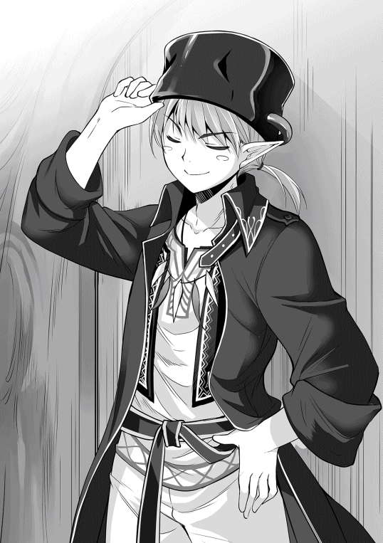
『恐らく、冒険者の事でしょうな』
バトラーの推測でセレネはようやく合点がいったが、当然、自分は冒険者などではないので、首を横に振って否定する。というか、冒険者という物が何だか分からない。セレネの怪訝な表情から、ギィは彼女が冒険者でないと判断したらしい。
「お前がボッケンシャーじゃないのは信じる。だがな、お前らの国、ば、バンドール？ の人間には迷惑してんだ。勝手に人の縄張りに入って、白森の資材を盗もうとする。お前もその仲間......ってわけでもなさそうだな」
「ばんどーる？」
『ヴァルベールでしょう。あの国には冒険者が多いと聞きます』
冒険者というのは文字通り『危険を冒す者』の事だ。ヘリファルテと違い、ヴァルベールは身分による差別が根強く残っている。たとえ魔力やそれに相応する実力を持っていても、平民であれば大した仕事には就けないし、より良い待遇を求めてヘリファルテに移ろうとする事は非常に難しい。ライバルに塩を送る事になるからだ。
実力はあれど不遇な扱いを受けたヴァルベールの人間達の中には、魔力の資源に溢れる白森に侵入し、一攫千金を狙う者が一定数存在した。私財を投じ、セレネが着ているドレスのような、魔力耐性の道具を集め、果敢に突入し、そして敗れ去っていく。
バトラーは風の噂程度に聞いた事があったが、アークイラにも、ヘリファルテにも冒険者はそれほど多くなかったので、あまり気にした事はなかった。
「ばるべーる、わたし、ちがう」
「そう、そのバンベール......って、人間の国って他にもあんのか？」
「うん」
「じゃあ、お前の国はどこだ？」
「へりふぁるて」
「ヘリハーテか。白森からすぐ近いのか？」
「とおい、いっしゅうかん、くらい」
セレネの回答にギィは首を傾げる。白森から随分と離れているではないか。そんな所から、何故子供と鼠が唐突に現れたのか。全く想像がつかない。
「お前、言ってる事が滅茶苦茶だぞ。そんな遠いところから何しにここまで来たんだよ。つーか、ボッケンシャーでもこんな奥地まで入ってこれねぇぞ」
「りゅう、つれてきた」
「竜？ 竜がわざわざお前を連れてきたってのか？」
セレネは黙って頷く。わけの分からないまま竜に拉致され、エルフと間違われてここまで連れてこられたのだ。そこまで説明出来ればよかったのだが、生憎セレネの言語能力では、竜に連れてこられたとしか伝えられなかった。
「その子の言ってる事は本当よ。あたし達、昨日調査に行ったでしょ？」
背後で沈黙を守っていたザナが、セレネの言葉を補足するように言葉を紡ぐ。
「ああ、近くで竜が出たって話か。報告は聞いてる」
「そこで見回りの二人がこの子を見つけたの。あたしも後で調べてみたけど、竜の足跡があったから間違いないわ」
エルフ達は白森の生態系に詳しい。地面に残った足跡から、どんな動物が通ったかを想像するなど造作も無い。そもそもそんな事をしなくても、セレネの近くに残された巨大な足跡。あんな足を持つ生物など、この世界に一種類しかいない。
「竜が人間をねぇ......。にわかには信じがたい話だな」
「何よ？ あたし達の調査が間違ってるとでも言いたいの？」
「そうは言わねぇけどよ、だって竜だぜ？ 竜が人間の子供を？ 何の目的で？」
「それは、分かんないけど......」
ギィの疑問は最もだ。エルフ達は特定の神を信仰する風習は無かったが、自然や生命そのものに神や精霊が宿るという考えを持っていた。その中でも、最も強大な力を持つ竜という種族は、神の化身であり、崇拝と畏怖の対象であった。
その竜が、わざわざ人間の子供を連れて白森にまで現れたというのだ。そんな事、今まで一度だってありはしない。連れている鼠も特異な存在であると報告を受けている。
この娘には何か特別な力があるのだろうか。例えば、竜に連れてこられたと主張しているが、竜を従える能力があり、なんらかの目的で単身エルフに会いにきた、とか。それこそ荒唐無稽過ぎる。ギィはくだらない考えを振り払うようにかぶりを振る。
「さて、どうしたもんか......セレネとか言ったな」
「うん」
「本当ならボッケンシャーは身包み剥いでほったらかしなんだが、お前は訳ありみたいだからな。二週間後、お前を白森の外まで送ってやる。そこから先は自分で何とかしろ」
「にしゅうかん？ なんで？」
「その時期に人間の土地に近づく野暮用があってな、ついでだ」
セレネは知らなかったが、エルフ達は生活に使う資材や食材を、栽培以外に森から採取して補っていた。同じ場所で取り続けてしまうと資源が枯渇してしまうので、一定の期間を設け、採取ポイントを変えていた。
二週間後に向かう採取の場所は、人間の住まう地域に最も近づく場所だった。そこから少し足を伸ばせば、白森を抜ける事が出来る。それ以上行くと、今後はエルフ達にとって未知の場所となるため、そのあたりがギリギリの位置なのだ。
この場でセレネとバトラーを殺すという選択肢もあるが、竜が絡んでいる以上、軽はずみな行動は出来ない。ギィは一族の長であり、彼の行動によって一族が危機に瀕する事もありえるのだ。
ギィが結論を下した直後、先ほどのザナ以上に乱暴にドアがノックされ、一人のエルフの青年が部屋に飛び込んできた。ザナが制止する暇も無いほど、彼は慌てた様子だった。
「ギィ様！ 失礼します！」
「勝手に入ってくるんじゃねぇ！ 今、大事な話をしてんだよ！」
「緊急の伝令です！ 竜がまた現れました！」
「冗談だろ？ 昨日来たばっかりじゃねぇか」
ギィは顔を引きつらせながら立ち上がる。大陸を一日で横断する竜が、白森で着地する事自体非常に稀なのだ。だから昨日、ギィに次ぐ実力を持つザナを含めた警備隊を派遣した。それほどの異常事態が二日連続で起こっているらしい。
「で、場所はどこだ？」
「昨日の場所と同じです、どうも何かを探しているようで、周辺を歩き回っているようです。今のところ特に被害は出ていないようですが」
「ふむ......」
ギィは顎に手を当ててしばらく思案すると、座り込んでいたセレネの方に目を向ける。
「よし。俺とザナ、それにこのチビ......セレネを連れて現場に向かう」
「えっ!? ザナ様だけでなく、ギィ様も？」
ギィはエルフ一族のまとめ役だ。余程の事がない限り自分では動かない。そのギィが自ら出向き、人間の子供まで連れて行くという。その言葉に、エルフもザナも驚いたように目を瞬かせた。
「このチビが竜に関わってるのは間違いないみてぇだが、その理由がさっぱり分からねぇ。だったら、ここでうだうだ考えるより、直接こいつを竜に差し出せばいい」
「ちょっと！ あんたその子を餌にするつもり？」
「竜に連れてこられたって自分で言ってんだ。だったら、別に危険はねぇだろ。もしこいつの言ってる事が本当なら問題ないし、嘘でもこいつが一人死ぬだけ。どうだ、いい考えだろ？」
ザナは何か言いかけたが、結局は何も言わなかった。
「うわ、マジでいやがった......こんな近くで見たのは俺も初めてだ」
白い茂みに溶け込むような白装束に扮したギィが、声を殺してそう呟く。ギィの後ろにはザナ、そのさらに後ろには、数名のエルフの戦士に囲まれたセレネがいた。セレネは拘束されたままのバトラーと共に、真っ白い布で顔以外をすっぽりと覆われ、てるてる坊主のようになっていた。どうやら、この布にはセレネの気配を消す効果があるらしい。
報告通り、セレネを捕獲した場所にいた竜は、森の中でも木々が少ない、白い下草の生えた場所を歩き回ったり、腹ばいに寝そべったり、どうやら暇を持て余しているようだった。
「よし、手筈通りチビを差し出して反応を見るとするか」
「ちょっと待って！ あんた、本当にこんな小さな子を犠牲にするの？」
ギィの指示に対し、ザナが食って掛かる。
「今更何言ってんだ。人間のチビがどうなろうが、俺達には関係ねぇだろ」
「嘘。あんた嘘吐くとすぐ顔に出るから分かるのよ」
「......うっせーな」
悪態をつきながら、ギィはばつが悪そうに答えた。人間が自分達の領域に許可無く入ってくる事は気に入らないが、女子供を危険に晒すのはやはり抵抗がある。セレネは中身がおっさんなので微妙なラインだが、幸か不幸かギィ達には、セレネはいたいけな少女にしか見えない。
「何にせよ、このチビと竜が関係してるのは間違いねぇんだ。俺達がのこのこ出て行くのは危険過ぎる。何も無ければそれでよし、死んじまったらそれまで、そうだろ？」
「うん」
ギィの乱暴な理屈に相槌を打ったのは、ザナではなく後ろにいたセレネ本人だった。セレネからすれば、約束通り竜が迎えに来ただけなのだから恐れる事はないのだが、ギィは、外見からは想像もつかないセレネの落ち着き払った態度に驚いた。竜を前にしては、熟練のエルフの戦士ですら震え上がる。
「ぬの、はずして」
「なあ、本当に行くのか？ 俺が行けって言っといてなんだが、相手は超ヤバい奴だぞ？」
「へいき」
「......分かったよ」
そうしてギィは、ザナに命じてセレネを包んでいた布をはがす。魔力の扱いに長けたエルフ達は、白森に紛れて気配を殺す事が出来るが、人間の少女ではそうはいかない。もう逃げ隠れは出来ないのだ。だが、自分を守る最後の道具を取られたというのに、セレネはにこやかに笑っていた。
「ばいばーい」
困惑するギィとザナに対し、セレネは元気に手を振って茂みの外へ出て行った。その様子に怯えも恐れも一切見えない。まるで自分の迎えが来たような振る舞いだ。
セレネが茂みの奥から姿を現すと、竜は巨体を揺らしながらセレネの元へと駆け寄ってくる。
『遅い！ 貴様ら、この我を待たせるとは何事だ！ 一体どこに行っていた！』
赤竜が火を吹きそうな勢いで怒鳴ったので、慌ててバトラーが目の前に飛び出す。
『お待ち下され赤竜様！ これには深い事情がありまして』
『む？ 鼠......確かバトラーとか言ったな。事情とは何だ？』
『実は、これこれこういう事が起こりまして』
『なるほど、それそれそういう事が起こったのか』
バトラーは、先日エルフに捕まってから今に至る経緯をかいつまんで話した。その様子を、茂みに隠れたままのエルフ達が、信じられない物を見るように凝視していた。
「あんな飼い犬みたいに大人しい竜なんて見た事ねぇ......」
「嘘......？ あの子、竜を従えてる!?」
ギィとザナは狐につままれたような表情で、目の前の光景に、ただただ驚嘆するばかりだった。あの偉大なる生物──絶対強者である竜が、ほんの小さな女の子の前で鎮座し、頷くような素振りを見せているのだ。それは、彼らの常識ではありえない事だった。
セレネではなくバトラーが喋っているのだが、バトラーの声が聞こえず、後ろから見ているギィ達からしてみれば、セレネが竜を従えてるようにしか見えない。
『つまり、お前達はエルフに襲われ連れ去られた。そう言いたいのだな？』
『その通りでございます』
バトラーが何度か説明して、ようやく赤竜は状況を飲み込めたようだ。セレネも大概だが、赤竜はセレネ以上に頭が悪いのだ。情報を整理した竜は目を閉じ、深呼吸をする。
「グオオオオオオオオオオオオオーーーッ！！！」
竜は天を仰ぎ、凄まじい咆哮を放つ。びりびりと空気が振動し、それと同時に赤竜は巨大な尾を樹木に叩きつけた。樹齢数百年は過ぎているであろう巨木が、マッチ棒のようにへし折れる。
「白き森のエルフ共！ 近くにいるのは分かっているぞ！ こそこそと隠れず出てこい！ さもなくば、お前達の樹海を火の海へと変えてやるぞ！」
竜はエルフ達に分かるよう、セレネ達に対するのとは違う発声で叫ぶ。憤懣やるかたないようで、鼻からは火山の如く蒸気が噴出している。
「ね、ねぇ！ なんかあの竜、めちゃくちゃ怒ってるんだけど!?」
「よく分かんねぇけど、どうやら俺達は竜の逆鱗に触れちまったみたいだな」
自分達が手を出した人間は、どうやら触れてはいけない存在だったらしい。ギィは舌打ちをしながら、どうしたものかと考える。どうしたもこうしたも、竜に出てこいと言われた以上、出て行かないわけにもいかない。竜の言葉は、エルフ達にとって神託に近い物なのだから。
「俺が行く。ザナ、お前達はここにいろ。俺に何かあったら......その時はみんなを頼む」
「......え、で、でも！」
「頼んだぜ」
ザナが引き止める間も無く、ギィは茂みから飛び出した。圧倒的な力の差に威圧感を覚えつつも、表面上は族長らしく堂々と振る舞い、セレネの横、赤竜の前に片膝をつき、服従の姿勢を見せた。
「赤竜様、俺がこの周辺のエルフ族の長、ギィと申します。お呼びになられましたか？」
「貴様がエルフの長か、今代のエルフの長は随分と若く。そして愚かだ」
「若いというのおっしゃる通りですが、愚か、とはどういう事でしょう？」
「我の大事な供物を貴様らが殺そうとしたと聞いたのでな。愚か以外の何者でもないだろう」
「大事な供物......やはり、この人間の少女の事でしょうか？」
「そうだ。我はこの娘を百年の間、見守るつもりでいるのでな」
「ひゃ、百年!? それは本当なのですか!?」
「その通り。我の輝かしい未来のため、この娘を守護すると決めたのだ」
竜は仰々しくそう言って、セレネに顔を向ける。ギィは強張った表情で、確認するようにセレネに視線を向けると、セレネは肯定するように頷いた。
（人間を百年って......一生庇護するって言ってるようなもんじゃねぇか!?）
ギィは赤竜の前で顔を俯かせながら、背中に冷や汗が流れるのを感じていた。竜に生涯守られるなどという事は、エルフ達にとってもありえない。いわんや人間をだ。
しかも、竜の未来のためにセレネが必要だと言う。一体この少女は何者なのだ。正体は分からないが、やはり自分達が手を出したこの少女が、途方も無い存在である事だけは間違いない。
セレネはただのセレネであり、美幼女の皮を被った中年男性なのだが。その事に突っ込みを入れられる存在は誰一人いなかった。
「さて、我のためにも、セレネに危害を加えたエルフ達にはお仕置きをする必要があるな」
「赤竜様！ 我らエルフ族は赤竜様を崇めています！ その仕打ちはあまりにも......！」
「黙れ！ 我の所有物を害そうとした罪、その身を以て償うがいい！」
ギィが慌てて顔を上げる。竜の力を少しでも振りかざされれば、エルフ一族に甚大な被害が出る。エルフにとって神罰の代行者とでもいうべき竜、そしてその竜が寵愛する、竜の巫女とでもいうべき少女に対し、知らないとはいえ不敬を働いてしまった。
だがギィとてエルフの長。みすみす滅びを受け入れるわけにはいかない。一体どうすればこの窮地を脱出出来る。ギィは額を地面に擦りつけ、ひたすらに謝罪しようとするが、
「やめて」
唐突にそんな声が響く。それは、エルフ達に危害を加えられたセレネ本人の言葉であった。赤竜はセレネの考えが理解出来ず、怪訝そうに尋ねる。
「エルフ共はお前とバトラーを殺そうとしたのだぞ？ それを許すというのか？」
「エルフ、わるくない、わるいひと、べつ」
ここでセレネがいう『わるいひと』とは、当然かの性王子ミラノである。そもそも、奴が百合の花園などという甘言で自分を誑かしたから、こんなややこしい状況になったのだ。諸悪の根源はあの王子だ。どうせなら奴を真っ先に始末して欲しい。エルフはむしろ被害者だ。
セレネの頭の程度ではそのくらいしか考えていない。しかし、セレネの発言はギィにとって、これ以上の助け舟となった。
「赤竜様、セレネ......様の言う通り、俺達は意味なく彼女を傷つけようとしたわけではありません。ここ最近、人間達が俺達の領域に侵入し、我々に必要な物資を掠め取っていくんです」
「ふむ、つまり、その『悪い人』とセレネを間違えたというわけか」
「もともと我々は、二週間後にはセレネ様を送り返すつもりでした。赤竜様の遣いと分かっていれば、暴力的な手段は選びませんでした。むしろ客人として招き入れた事でしょう」
ギィの答弁に対し、赤竜は少しの間黙っていたが、やがて重々しく口を開いた。
「そうか、ならばお前達エルフに命ずる。この娘を二週間後、確実に人間の里に送り返すがよい。それで今回の件は不問としよう」
「寛大なお言葉、ありがとうございます！」
ギィは、地面に顔をめり込ませる勢いで頭を下げた。
「話は済んだな。では、我はこれで去るとしよう。日課をこなさねばならんのでな」
「え、ちょ、あ......！」
セレネが「え、ちょっと待って！ あんたが送り返してくれるんじゃ......」と言う間も無く、赤竜は翼をはためかせ、ゆっくりと巨体の高度を上げていく。
「我は忙しい。その娘を人間の元へ戻すまで、蚊の食い跡一つ残らぬよう丁重に扱うのだぞ」
「はっ！ 仰せの通りに！」
ギィは飛び去ろうとする赤竜に対し、跪いたままそう答えた。いつの間にかザナ達もギィの後ろに現れ、全員で赤竜と、その保護対象であるセレネに対し跪いていた。
赤竜からしてみれば、セレネをヘリファルテの王都まで送り届けると、普段のランニング──もといフライングコースから大分迂回する事になってしまうので、どさくさに紛れて面倒を押し付けただけだったが、エルフ達は赤竜に名誉挽回のチャンスを与えられたと取ったらしい。
「いっちゃった......」
『行ってしまいましたな......』
そうして、次第に小さくなっていく赤竜を見送ったセレネとバトラーは、これまでの乱雑な扱いと真逆、精巧なガラス細工でも扱うように、再びエルフの集落へと連れ帰られたのだった。
「わっはっは！ わっはっは！」
そして三日後、セレネは素っ裸でふんぞり返っていた。エルフの集落に再び戻された『竜の巫女』であるセレネとバトラーは、最高級のもてなしを受ける事となった。衣食住は勿論の事、身を清める禊と称し、集落に湧く天然温泉に頻繁に入っていた。
無論、セレネは猛烈な風呂好きという訳ではない。重要なのは副産物だ。禊に必要と称し、セレネが指名したエルフの美少女達が、セレネの身体のつま先からてっぺんに至るまで数人がかりで洗ってくれるのだ。たまにセレネも洗い返す。まさに桃源郷である。
世界よ、これが百合の花園だ。セレネの頭にそんなフレーズが浮かぶ。セレネは欲望に対しては果敢に挑戦していく、おっさんと乙女の融合モンスターなのだ。伝説のクリーチャーである。
「ごくらく、ごくらく」
精神的にも肉体的にもピカピカになったセレネは、今は一人で湯船に浸かり、手ぬぐいに空気を入れてクラゲを作ったりして遊んでいた。何かもう、このまま帰らなくていいんじゃないかなという気さえしてくる。しかし、王都には囚われのアルエがいるのだ。いつまでもここで暮らすわけにはいかない。
だが、たった二週間でこの生活を終わらせるのは惜し過ぎる。一体どうすれば、この酒池肉林のワンダーランドに永住する事が出来るのだろう。
その時、セレネの脳裏に電流が走り、天才的な発想が浮かぶ。赤竜に頼み、アルエ姉様を連れてきてもらってはどうだろうか。アルエにも魔力があるから白森でも生活出来るし、自分の血を分けた姉と告げれば、赤竜を説得出来るのではないか。
「バトラー、たのもう」
セレネは湯船から出ると、髪を拭きながら邪悪な笑みを浮かべた。自分では上手く喋る自信がない。バトラーに赤竜との交渉を頼んでみよう。そして、この白き森で姉と祝言を挙げ、エルフの美少女達を侍らせながら、この土地に理想郷を築くのだ。
以前、アルエは「私達は姉妹で、女の子同士では結婚は出来ない」と言っていた。しかし、ここはエルフの里であり、人間の倫理など知ったこっちゃない。
「っしゃあ！」
セレネは両手で頬を叩いて気合を入れなおす。今まで、どうやって王子を倒すかという事を考え、夜も眠れず、そのぶん昼寝をしながら頭を悩ませていたが、戦わずして勝利の道が開けてきた。
セレネはエルフ達が用意してくれた、ガウンのようなゆったりとした白い布を羽織り、色鮮やかな花をあしらった艶やかな玉座に座る。フルーツジュースの入ったコップを片手に、輝かしい未来について思いを馳せていた。
さらば王子よ、お前はお前で勝手に幸せになるがいい。そんな強者の余裕を見せ付けるくらい、セレネは愉悦にぐずぐずに浸っていた。
──そうしてセレネがエルフの集落でやりたい放題し始めた二日後、ミラノ達一行は、ヘリファルテへと帰国した。
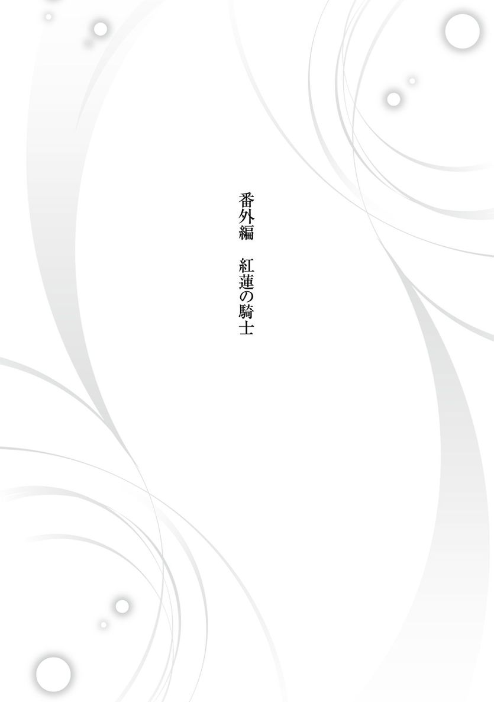
「先輩、見てました？ 俺、この間ミラノ王子から一本取ったんすよ？ あのミラノ王子から」
「アレス、その話、もう十回目だぞ」
まだ稽古時間中だというのに、剣を振るのも忘れて武勇を語る少年を、隣の先輩兵士が窘める。だが、アレスと呼ばれた赤毛の少年は、興奮冷めやらぬ様子でなおも喋り続けていた。
アレスは兵役に就いて一年にも満たない。今年十三歳になったばかりの少年兵だ。兵士というより、雑務のついでに訓練を受けさせてもらっているといった方が正しい。
ヘリファルテの兵役は強制ではなく志願制だ。大国を守る重圧はあるものの、それに見合う待遇を約束されるので、志願者を募集せずとも勝手に集まってくる。アレスもそんな若者の一人で、補欠合格という形で日々こき使われている。
「いやー、俺も自分が勝ったなんて信じられなかったっすよ。だって、あの聖王子ミラノ様ですよ？ 歴戦の兵士でも全然歯が立たないのに。もしかして、俺って天才だったり？」
「調子に乗るな。馬鹿」
それまで適当に聞き流していた先輩兵士も、主君を貶める物言いを見過ごしてはおけず、アレスに怒鳴った。アレスも流石にまずいと思ったのか、素直に頭を下げる。
「お前が勝てたのは王子が調子を落としていたからだ。じゃなきゃ、お前のへろへろ剣なんか掠りもしない」
「あ、ひっでー！ そこまで言う事無いじゃないっすか！」
「じゃあ、お前、俺から一本取った事あるか？」
「そりゃ、無いっすけど」
アレスは口ごもる。数ヶ月前まで木材を切る鉈や、果物ナイフしか握った事が無いのだから当然だが、自分が弱いと言われるのはあまり楽しくない。
「つーか、何で王子は調子落としてるんすか？ あの人、剣術大好きじゃないですか。もしかして、病気とか？」
「そうじゃない。何だお前、知らんのか？」
「俺みたいな新兵じゃ、貴族様の事情なんか分かんないっすよ」
王宮の護衛任務をしている先輩兵士ならまだしも、平民出身で、兵役に就いたばかりのアレスは、王宮のごく一部しか出入りする事を許されていない。
いくらヘリファルテが開放的な風土といえど、守るべき規律はしっかりと守られている。
「まあ、別に機密事項では無いし、教えておくか。恐らくだが、セレネ様が関係しているのだろう」
「え!? セレネ様が!? そこんとこ詳しくお願いします！」
先輩兵士がセレネの名を口に出した途端、アレスは食いつかんばかりに詰め寄る。先輩兵士は顔を顰め、興奮したアレスの頭を掴んで押しのけた。
「お前、本当にセレネ様の話題になると見境が無くなるな......」
「そりゃそうっすよ！ 俺、あんな綺麗な女の子、生まれて初めて見たっすよ。確かに今は小さいけど、何年かしたら超絶美人になるっす！ 間違いないっす！」
どこか儚く、セレネの純白の美貌に癒される兵士達は多いが、アレスは特にセレネにご執心なのだ。まだまだ少年のアレスからしてみれば、実際の精神年齢を考えればとんでもなく幼稚なセレネでも、随分と大人びているように見えるらしかった。
「セレネ様が何かあったんすか？ もしかして、あの方がご病気で、それをミラノ王子が気に病んでるとか？」
「......お前、ミラノ王子よりセレネ様の心配してないか？」
「い、いや、俺は王国を守る兵士ですよ。その、なんつーか、お国のために憂いを取り除かないと駄目っていうか。ほら、そういうのあるじゃないっすか」
しどろもどろに誤魔化すアレスに対し、先輩兵士はため息混じりに言葉を紡ぐ。
「なんでも、ミラノ王子とセレネ様が最近不仲らしい。それが王子に影響しているのだろう」
「そういや、ここ数日、セレネ様の姿を見てないっすね」
アレスはようやく合点がいったらしく、ぽんと手を叩く。毎日のように王子に対し弁当を差し入れする姿を目撃し、アレスはそれが羨ましくてたまらなかった。
兵士達のまとめ役であるクマハチ並の権力があれば別だが、今の自分の立場では、仲睦まじく食事しているセレネとミラノの横顔を、遠目から盗み見るのが精一杯だ。
きっと、セレネは自分の存在すら知らないだろう。
「そっか、王子と喧嘩中なのか......」
「早くお二方の仲が良くなるといいのだがな」
「俺としては......いや、何でもないっす。じゃ、俺、防具の手入れしてきますんで」
何か言いかけたアレスを見て、先輩兵士は眉をひそめたが、アレスは逃げるようにその場を後にした。
「やっぱ、まずかったかな」
夕刻。一日の業務を終えた兵士達は、王宮の兵舎か、もしくは城下町の自宅へと帰る。アレスは城下町に家族と共に住んでいるのだが、今日は修練場に忘れ物をしたと言い残し、同僚から離れ、一人で王宮へと戻っていた。しかし、アレスの目的地は修練場ではない。
「ばれたらやべぇよな......うう、やっぱ帰ろうかな」
アレスが息を殺しながら歩いているのは、ヘリファルテ王宮の敷地内の中心部。すなわち、シュバーンを始めとする王族が住まう区域である。腕利きの兵士が常に見回りをしていて、許可された者だけが立ち入れる。当然、アレスが入れる場所ではない。
元々無鉄砲なアレスだが、今日はさらに輪を掛けた無茶をしていた。
目的はただ一つ。常にミラノ王子に寄り添っているセレネの姿を、喧嘩中の今なら存分に堪能出来ると考えたからだ。
「ビビるな俺、チャンスだろ！」
アレスは小声で自分を叱咤し、警備兵の目を盗み、少しずつ王宮へと近づいていく。先輩兵士からある程度警備の内容は聞いているので、警備の穴を突く事は不可能ではない。とはいえ、ばれたら大目玉なのは間違いない。
衛兵の影に怯えつつ、アレスは目的の建物へ辿り着いた。セレネの情報に関しては、どんな些細な事でも必死に集めるようにしていたので、部屋の位置も大体予測が付いている。
「ちょっとだけでいいんだ。ちょっと見るだけなら......」
別にセレネに会って何かしようという訳ではない。ただ、ほんの少しでいいからセレネの傍に行きたい。彼女が一人の時、どう過ごしているか知りたい。そんな思いを胸に、アレスはそっと窓を覗きこんだ。
「いた！ セレネ様、相変わらずお綺麗だ......」
アレスが慎重に中の様子を窺うと、布団の中で眠るセレネを発見した。もしもセレネが起きていたら、だらしなく尻でも掻いていただろうし、それで幻滅してアレスの初恋は終わっていただろう。
だが、幸か不幸か、熟睡するセレネはさながら茨姫のようで、窓から差し込む茜色の日差し、そして恋は盲目という強烈な補正が掛かり、セレネの全身が輝いているように見えた。
「でも、俺なんかじゃセレネ様に近づける訳ないよなあ......」
しばらくセレネの寝顔に見惚れていたアレスだが、不意に現実に戻り、ため息を吐いた。自分はただの平民で、優れた特技も権力も無い。セレネもそれほど身分は高くないらしいが、魔力を持ち、何か稀有な才能を持っているらしい。だからこそ、辺境のアークイラからわざわざ連れてこられたのだと告知されている。
「......帰るか」
ヘリファルテは自由の国だ。実力次第で平民であっても一流の職につく事が出来る。だが、それは「実力があれば」の話だ。アレスが兵士に志願したのは「男ならとりあえず兵士になっておく」という世間体であり、具体的な展望は何も無い。当然、やる気も起こらないのだから、実力が伸びる訳も無い。
そんな自分が、これほど可憐で才気溢れる女性に近づく事などおこがましい。アレスはそう思い直し、立ち去ろうとした。
その時、セレネが目を覚まし、窓から覗き込んでいたアレスと目が合った。
「や、やべっ!?」
アレスは狼狽する。思わず走って逃げ出そうとしたものの、そこで理性がブレーキを掛けた。ここで下手に逃げたら完全に不審者だ。かといって、どう言い訳をすればよいのだろう。
逃げるべきか留まるべきか、アレスの思考は錯綜し、完全に硬直してしまう。一方、セレネは特に騒ぐ様子も無く、何故かベッドの下を覗き、口元を動かす。まるでベッドの下の誰かと会話しているような、不思議な動作だ。
それからセレネはゆるりとベッドから降りると、窓の前で固まったままのアレスの元へ近づいてくる。アレスは困惑し、緊張のあまり吐きそうになっていた。
セレネは窓を軽く押し開けると、真っ直ぐにアレスを見た。長い睫毛、妖精のような白い少女を見ていると、こんな状況だと言うのに、アレスの胸が高鳴る。
「あ、あのあの、お、俺......」
自分は怪しい者ではない、と言おうとしたが、呂律が上手く回らない。そもそも、こんな所にいる男が怪しくないと言っても説得力ゼロだ。
「きみ、アレス？」
「......へっ？」
糾弾されるだろうか。それとも悲鳴を上げられるだろうか。そう身構えていたアレスは、予想外の返事に目を丸くする。まさか、セレネほどの人間が、自分如きを知っている訳が無い。
「あ、あの、俺、確かにアレスですけど、ご存知なんすか？」
震える声でアレスがそう尋ねると、セレネはゆっくりと頷いた。
「おうじ、たおした」
間違いない。セレネは自分の事を知っている。たかだか見習いの一兵卒を、この少女はきちんと把握している。不意に、アレスの胸に熱い物がこみ上げる。
「あ、あの！ セレネ様！」
「うん？」
急に雰囲気の変わったアレスを、セレネは不思議そうに見ていた。セレネには何だかさっぱり分からないが、アレスの目には、今までに無い眼光が宿っていた。
「お、俺、セレネ様の事が......」
そこまで言ってアレスは口を閉ざす。今の自分には何も無い。そもそも、ミラノ王子と不仲であると知り、それに付け込むように忍び込んだ自分に、彼女を慕っていると伝える資格があるのだろうか。そう考えると、次の言葉がどうしても出てこない。
「アレス」
「な、何すか？」
沈黙の中、先に口を開いたのはセレネだった。もしかして、自分の卑しい部分を見抜かれたのだろうか。不安に思ったが、セレネは怒るどころか逆に笑いかけた。前から美しい少女だと思っていたが、微笑むと本当に月の女神のようだ。
「きたい、してる」
「期待？ お、俺にっすか？」
「うん」
セレネがお世辞を言っているようには見えない。本当にこの少女は、何の取り柄も無い自分に期待していると言ってくれている。今までそんな人間は誰一人としていなかった。そう、自分自身でさえも。
「セレネ様！」
アレスは衛兵に見つかる危険も顧みず、セレネの前に片膝をつき跪いた。これは、騎士が想いを寄せる相手に対し、忠誠を誓うポーズだ。アレスは兵士見習いであり騎士ではない。けれど、どうしても今この場で、この少女のために儀式を行いたかった。
「俺、セレネ様の期待に応えられるよう頑張ります！ ほんとに頑張りますから！」
「お、おう......」
いきなり大声を出し、窓の外で跪いた少年に面食らったセレネは男口調で返事してしまったが、アレスの耳には入っていないらしく、夕暮れの芝生を飛ぶように走り去っていった。
（俺はセレネ様に期待されている！ 俺は......俺は騎士になる！）
体の底から沸きあがる歓喜を抑えきれず、アレスは息を弾ませ走っていく。この世に生まれて十三年。アレスには目標が無かった。ただ何となく毎日を過ごし、何となく兵士になり、何となく一生を過ごしていければよいと思っていた。
だが、あの麗しの少女に「期待している」と言われた事が、アレスの心に小さな希望の火を燈した。
ただの雇われ兵士ではなく、本当の名誉ある騎士になる。こんな盗人のような侵入ではなく、堂々とセレネの傍に侍り、ヘリファルテを、いや、彼女の住まう国を守るのだ。
「よっしゃあ！ やってやるぜぇ！」
歳若い少年は、この日、初めて運命という言葉を信じた。燃えるような夕焼けの下、アレスの心は、それに負けないほど赤々と輝いていた。
『はは、なかなか血気盛んな若者ですな』
「うん、まあ」
『姫は下々の心をよく理解しておられますな。目上の者からお前は必要な存在だと言われる事は、とても励みになりますのでな』
「ふふふ」
ベッドの下から飛び出し、肩の上で喋るバトラーに対し、セレネは含み笑いを漏らした。無論、意味深な笑いである。
ヴァルベールから帰国して以来、セレネはずっとミラノとの接触を避けていた。けれど、毎日のミラノの動向に関しては、バトラーの報告を受けていた。
そんな中、ミラノを打ち負かした兵士がいるという事を聞き、セレネはとても驚いたのだ。
以前、修練場でミラノの稽古を見た時、彼は何十人もの兵士を一人で倒していた。あんな奴に勝てる兵士などいるはずがない。だからこそ、セレネは殺人弁当の差し入れという絡め手で、少しずつ攻撃しているつもりだった。
ミラノを打ち倒したという事は、あのアレスという少年は、少なくとも同等の力を持っているに違いない。しかも、その兵士が、なんと自分の元にわざわざ尋ねてくれたのだ、これは神が『邪悪を討て』と彼を遣わせたのではないか。やはり神は正しい者の味方なのだ。セレネは勝手にそう思いこんでいた。
常識的に考えれば、ただの新兵がそんな強い訳が無い。だが、セレネは前世でゲームをやりこんでおり、大体のゲームの勇者は若者だったので、セレネの中では若者の剣士＝勇者という、よく分からない理論が確立していた。
今のうちからアレスに媚を売っておけば、将来、ミラノを攻める際の切り札になるかもしれない。少なくとも、訓練中にミラノを怪我させるくらいは、十分に期待出来るだろう。
「がんばれ」
セレネはアレスが走り去った王宮の庭を、いつまでも眺めていた。
──それから数年後、アレスは見事、騎士の叙勲を受ける。その燃えるような性質と赤毛から、「紅蓮の騎士」と称される彼は、ヘリファルテ騎士団において五指に入る実力者となる。そして、アレスが騎士として任命された日に残した言葉は、ヘリファルテの若者達をおおいに勇気付けた。
「今、ここに集った若き兵士達に告げたい。自分には優れた取り柄は何もない。そんな私が騎士になれたのは。あの日、あの夕暮れの下、まだ何者でもなかった自分を信じてくれたセレネ様のお陰なのだ。あの時、自分を信じてもらえたからこそ、私は私の可能性を信じる事が出来た。だから君達も、人を信じる事、そして自分自身を信じる心を忘れないで欲しい」
どうも、青野です。一巻発売からそれほど時間が経っておらず、しかも、場合によっては一巻と二巻を同時に読んでいる人もいる可能性があり、お久しぶりですと言うのも変だし、かといってすぐにお会いできましたねとも言えないのですが、皆さんいかがお過ごしでしょうか。
刊行速度が速めのため、ＴＯブックスの皆様、特に担当編集Ｎ様、それにイラストレーターのｍｉｙｏ．Ｎ様は本当に大変だったと思うのですが、皆様の尽力のお陰で二巻も無事刊行となりました。本当にありがたいことです。
さて、今回は一巻で言及していた竜やエルフといった異種族が登場し、何やらきな臭い動きも見えてきましたね。物語も大きな転換期を迎えます。起承転結で言えば、一巻が「起」で、二巻は「承・転」となり、そして、三巻は「結」といった感じです。ＷＥＢ版を読んでいない方は、「え？ 結ってことは次で終わりなの？ 短くね？」なんて思うかもしれません。そう、この作品は短いのです。忙しい現代人のニーズに合わせた素敵仕様なんです。
これは僕の勝手な考えなのですが、あんまり長い作品だと、読者さんが手に取りづらいと思うんですよ。ものすごく面白いと評判の作品でも、全八十巻とかだとちょっと......みたいな感じになりませんか？ 僕はなります。あなたはどうでしょうか？
もちろん、壮大な世界を描くのは素晴らしい事ですし、そういった作品を作れる人は尊敬しています。でも、「夜伽の国の月光姫」という作品に関しては、誰もが気軽に読める作品でありたいと思っています。
一つの世界にずっと浸っていると、他の素晴らしい作品に移る時間が無くなってしまいますからね。今は書き手と読み手の距離が縮まり、めまぐるしい勢いで良質な作品が提供されています。何とも夢のある時代になったものです。
とはいえ、その膨大な作品群の中で、なるべく多くの人の心に残る作品になりたいという気持ちも当然あるわけで、最後までお付き合いいただき、セレネ達の行く末を見守って貰えれば作者冥利に尽きるのですが。
さて、いよいよ次巻でこの作品は完結となります。来年の春になる前には刊行される予定ですが、恐ろしいことに、この作品は最後まで「勘違い」という要素が貫かれます。本能のまま我が道を爆走するセレネが辿り着く結末を、是非その目で確かめていただければ幸いです。
二〇一五年十一月 青野海鳥
著者プロフィール
青野 海鳥
Aono Umidori
本作でデビュー。小説も好きですが動物も好きです。
作品を書いていると登場キャラが勝手に喋り出し、奇怪な行動に走る病を患っていますが、作者は比較的正常です。ご安心下さい。
夜伽の国の月光姫２
2016年２月１日発行 ver.1.0
著 者 青野海鳥
発行所 TOブックス
〒150-0045 東京都渋谷区神泉町18-８
松濤ハイツ２Ｆ
03-6452-5678（編集）
0120-933-772（営業フリーダイヤル）
Ⓒ2016 Umidori Aono
※無断で複製・複写・データ配信などをすることは、かたくお断りいたします。
本電子書籍は下記にもとづいて制作しました
夜伽の国の月光姫２
発行日 2016年１月１日 第１刷発行
本作品の全部または一部を無断で複製、転載、配信、送信したり、ホームぺージ上に転載することを禁止します。また、本作品の内容を無断で改変、改ざん等を行うことも禁止します。
本作品購入時にご承諾いただいた規約により、有償・無償にかかわらず本作品を第三者に譲渡することはできません。
本作品を示すサムネイルなどのイメージ画像は、再ダウンロード時に予告なく変更される場合があります。
本作品は縦書きでレイアウトされています。
また、ご覧になるリーディングシステムにより、表示の差が認められることがあります。